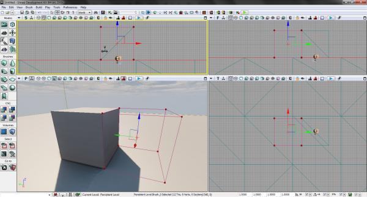
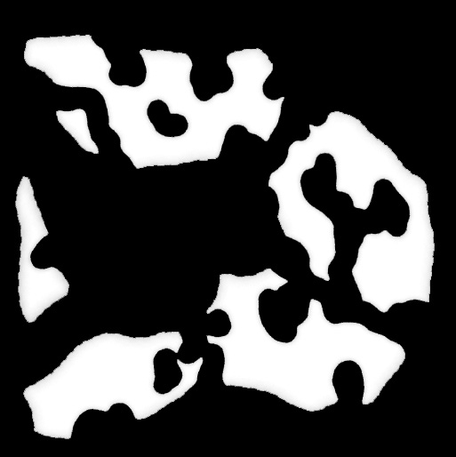
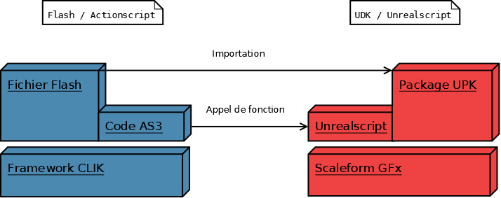

Vous rêvez de réaliser un jeu vidéo aux graphismes exceptionnels, mais vous ne savez pas comment vous y prendre ? Un FPS, un jeu de stratégie pour PC et Mac, ou un mini-jeu en 3D pour iPhone ? Tout ça est possible...
Vous êtes au bon endroit : Unreal Development Kit est un moteur de jeu gratuit, multiplateforme, un des leaders mondiaux dans le jeu vidéo. Utilisé avant tout par les professionnels, il est depuis quelques années ouvert à tous et à l'aide de ce cours, vous pouvez apprendre à le maîtriser.
Ce tutoriel vous permet de débuter avec UDK et créer votre propre jeu vidéo. Vous pourrez dessiner votre univers avec les logiciels classiques du graphisme (Blender, Maya, Photoshop, Flash...) et en faire des environnements jouables en multijoueurs avec vos propres règles de jeu, créer vos véhicules, vos armes... Tout est possible. Ce sont les outils des plus grands studios de jeu vidéo qui sont présentés ici !
Le tutoriel s'architecture autour de plusieurs grandes parties, toutes essentielles dans la construction d'un jeu vidéo moderne.
Pour commencer, vous apprendrez les bases de la création d'un jeu avec UDK.
Ensuite, vous découvrirez comment réaliser vos propres décors, vos objets, vos sons.
Une fois ces bases jetées, vous apprendrez la programmation pour le jeu vidéo : armes, éléments de jeu...
Enfin, une dernière partie vous aidera à créer une interface de jeu, pour créer vos menus et autres informations à l'écran.
Deck, un des niveaux de démonstration
Un exemple de niveau de jeu vidéo réalisé avec UDK
UDK, ou Unreal Development Kit, est un moteur de jeu vidéo développé par Epic Games. Aussi connu sous le nom d'Unreal Engine 3, c'est un environnement de développement complet pour créer des jeux vidéos de qualité professionnelle et on trouve parmi ses utilisateurs des jeux vidéos bien connus:
Comme vous le voyez, on parle de très gros titres commerciaux.
Encore mieux: vous pouvez vendre des jeux commerciaux avec. Vous devrez cependant vous acquitter de 99$, puis, passé 50 000$ de revenus commerciaux, Epic Games en percevra 25%. Au delà des chiffres, ce qui compte pour vous, c'est que vous avez à votre disposition un outil fiable- pour preuve ses 15 ans d'existence- bien documenté et extrêmement puissant !
Le moteur Unreal Engine n'est pas vraiment un petit nouveau puisqu'il a fait son apparition en 1998, pour le jeu vidéo Unreal développé par Epic Games - puis le célèbre Unreal Tournament qui assurera une visibilité énorme à ce moteur.
L'Unreal Engine
Déjà techniquement très en avance, Unreal Engine dans sa première mouture gère l'éclairage dynamique et même le rendu en temps réel dans l'éditeur, technique dont l'introduction n'est que très récente dans le moteur Source par exemple. A cette époque, la notion de moteur de jeu n'est qu'une bonne pratique de développement. Pour des raisons de concurrence, chaque société développait l'ensemble de son code. Mais nous reviendrons là-dessus par la suite. :)
Unreal Engine proposait également dès sa première version un langage de script propriétaire, Unreal Script, qui facilite le développement puisqu'il permet d'oublier la gestion du matériel.
Unreal Engine 2 et 3
Unreal Engine 2 est la première mise à jour du moteur. Elle intervient en 2002, ce qui est un cycle assez court pour un système aussi complexe. Cette nouvelle version apporte la gestion de la physique, domaine alors en plein essor dans le jeu vidéo (Half-Life 2 suivra quelques années plus tard). Et, pour la première fois, le moteur devient multiplateforme puisqu'il fonctionnera sous XBox et GameCube !
Unreal Engine 3 sera révélé en 2007, avec Unreal Tournament 3, Gears of War 2 et de nombreux jeux qui suivront. En effet, Unreal Engine 3 est l'occasion pour Epic Games de proposer son moteur comme base de travail aux studios de jeu vidéo, moteur qui rencontrera un succès considérable !
Côté technique, UE3 apporte les ombres dynamiques, une physique améliorée qui embarque un support de PhysX, l'API de nVidia pour la physique via CUDA, ainsi qu'un bon nombre d'optimisations.
Comparaison des rendus des différentes versions, avec Malcolm
L'arrivée d'UDK
Enfin, fin novembre 2009, Epic Games annonce l'arrivée d'une version mise à jour du moteur Unreal Engine sous la forme de l'Unreal Development Kit, ainsi qu'un changement considérable de la politique de licence. En effet, UDK est gratuit pour un usage non commercial, ce qui fait de ce moteur une référence dans le monde du modding ! Il s'agit de l'Unreal Engine 3, mis à jour, avec tous les outils proposés au professionnels, sans limitation.
Vous pouvez d'ores et déjà trouver toutes les informations nécessaires sur UDK sur le site officiel : http://www.udk.com On va commencer ce cours par un récapitulatif des fonctions qui existent dans ce moteur.
Rendu graphique
Les principales caractéristiques du rendu d'UDK sont les suivantes :
Matériaux complexes : normal mapping, displacement mapping, et un éditeur de matériaux très performant, temps réel et graphique ;
Éclairage temps réel perfectionné, complètement dynamique y compris dans l'éditeur ;
Systèmes de particules puissants, associés à un éditeur graphique ;
Terrains, végétation automatique avec les SpeedTree ;
Moteur physique, environnement destructible ;
Bink, un moteur de vidéo performant ;
Interfaces graphiques avancées avec Scaleform : menus en 3D, vidéos, effets visuels avec Flash... Scaleform est employé par la majorité des jeux vidéo à gros budget d'aujourd'hui !
Une interface en jeu avec Scaleform
Gestion du contenu
Tout le contenu du jeu vidéo est exploitable directement dans un seul outil, UDK Editor.
Il est possible d'importer du contenu très facilement depuis Blender, Maya, Adobe Photoshop, Adobe Flash... En quelques clics.
Il est possible de créer des éléments qui "héritent" d'autres éléments, comme en programmation, par exemple pour les matériaux.
Fonctionnalités de jeu
UDK vous apporte les fonctions suivantes pour le jeu lui-même :
Gestion de l'IA ;
Gestion du réseau ;
Programmation soit avec UnrealScript pour modifier le gameplay soit avec Kismet, un langage graphique, pour gérer les cinématiques ;
Gestion du son ;
Outils de publication, serveur dédié...
Plateformes supportées
Les plateformes supportées sont les suivantes :
PC (Windows) ;
Mac OSX ;
iPhone ;
Les consoles XBox 360 et PS3 sont supportées par l'Unreal Engine également, mais pas par UDK pour des raisons liées au modèle financier de ces systèmes. Distribuer un jeu pour console vous coûterait extrêmement cher.
Aucune limite au style : c'est votre jeu !
zFortress, un Tower Defense réalisé entièrement sur le Site du Zéro
Il est temps de préciser un peu ce qui se cache derrière cette grosse expression. Si vous faites de la programmation, vous avez l'habitude d'écrire du code, des fonctions, de compiler des programmes... Vous savez ce qui se cache derrière une variable, un objet, bref vous comprenez comment un jeu vidéo fonctionne.
En revanche, si vous êtes graphistes, vous analysez les images, vous comprenez les effets recherchés, le sens des symboles et des mises en scène, vous savez choisir des couleurs ou composer une scène. Et si enfin vous êtes un joueur, ce que vous savez faire c'est gagner ! :pirate:
Le problème du jeu vidéo c'est la mise en commun de ces différents savoirs. Un jeu vidéo réussi est obligatoirement le résultat de différents travaux, aussi bien sur la programmation, sur l'art, ou sur le gameplay. Or, deux problèmes se présentent :
Personne n'excelle dans tous ces domaines ;
Ces domaines sont suffisamment différents pour que les gens ne se comprennent pas.
C'est là qu'intervient le concept de moteur de jeu. Le moteur est un environnement de développement (l'équivalent par exemple de Visual Studio, Eclipse ou Code::Blocks en programmation), qui embarque généralement la plupart des fonctionnalités présentées précédemment. Son objectif est multiple :
Fournir une interface simple au matériel : hors de question dans UDK de penser OpenGL, de penser rafraîchissement, code bas niveau, gestion mémoire. Tout ça, c'est fait une bonne fois pour toutes! Ça ne sert à rien de réinventer la roue à chaque jeu vidéo, les programmes que vous écrirez pour UDK se baseront sur une bibliothèque bas niveau bien fournie ;
Permettre aux créateurs de manipuler facilement le contenu : vous créez vos éléments de jeu dans votre logiciel favori (aussi bien du son et de l'image que des objets en 3D), vous les importez facilement dans le moteur, et vous ne vous en préoccupez plus : même si vous avez fabriqué un véhicule très compliqué, une fois dans l'éditeur de maps, vous n'avez que quelques clics à faire pour le mettre en place ;
Centraliser tout le développement : un seul logiciel pour tout faire.
Il est donc important de comprendre qu'un logiciel comme UDK est en fait un ensemble de différents outils, fédérés sous une seule interface, et qui permettent de créer votre jeu. Il n'est pas lié à un jeu précis, et c'est à la fois le programme qui est à la base du jeu, et l'éditeur que vous allez utiliser pour le créer. Pour créer un jeu vidéo avec UDK, vous allez donc programmer, créer des objets visuels, des sons... Et tout intégrer en un jeu vidéo.
Un système de particules dans UDK : même pour des effets avancés, la création graphique ne requiert pas de programmation
Ce que vous pouvez faire
Vous pouvez réaliser relativement facilement ces différents types de jeux vidéo :
Un FPS multijoueur ou solo ;
Un jeu d'action en vue à la troisième personne ;
Un jeu de voitures ou de véhicules en général ;
Un RPG ;
Un Tower Defense, un jeu de stratégie en temps réel ;
Une simulation...
En clair, vous pouvez réaliser n'importe quel type de gameplay. UDK n'est pas un outil de modding : c'est un outil généraliste de création de jeu. Vous verrez plus tard que le code d'Unreal Tournament 3, un FPS, est fourni comme exemple mais vous n'êtes en aucun cas obligés de vous en servir !
UDK, c'est aussi de la programmation !
Ce que vous ne pouvez pas faire
Vous n'apprendrez pas à réaliser un MMORPG, en raison des limites du code de gestion de réseau qui n'est pas prévu pour gérer de nombreux joueurs. Il faudra vous contenter d'une trentaine de joueurs. Par ailleurs, l'immensité du travail requis pour un MMORPG 3D rend difficile ce genre de tâche, quelle que soit la technologie. Autant être sérieux d'emblée !
Il est important de bien comprendre ces principes pour la suite.
Et maintenant, pour ceux qui sont toujours là, passons à l'installation d'UDK !
Si vous lisez ces lignes, c'est que vous êtes toujours motivés et que la partie précédente ne vous a pas effrayés... C'est parfait, vous allez pouvoir commencer le travail et installer UDK !
Eh oui... UDK est avant tout un jeu vidéo! Votre machine doit se conformer à ces caractéristiques :
Windows (XP SP2 ou plus récent) ;
Un processeur simple coeur à au moins 2GHz au minimum, idéalement un processeur multi-coeurs récent: chez Intel un Core i5 ou Core i7 par exemple, chez AMD un Phenom II ;
2Go de RAM au minimum, 4Go de préférence ;
Une carte graphique compatible avec le Shader Model 3 - Cette information n'est pas évidente, cependant les cartes graphiques actuelles sont bien sûr toutes compatibles. Si vous jouez sans problèmes à des jeux récents, aucun souci à avoir :) ;
Au minimum 3Go d'espace disque, cependant vous vous apercevrez très vite que le contenu de votre jeu vidéo va augmenter cette taille, soyez prévoyants.
Oui... Et c'est peut-être la première chose qui va vous faire peur avec UDK : tout sera toujours en anglais ! Rassurez-vous, nul besoin d'être bilingue, comme dans tout domaine de l'informatique vous allez peu à peu découvrir le vocabulaire: material, mesh, actor, tous ces termes obscurs n'auront bientôt plus de secrets pour vous. J'utiliserai dans ce cours un maximum de termes anglais, pour que vous vous retrouviez dans l'interface, et que vous puissiez faire des recherches en anglais.
Quelle version faut-il prendre ?
Vous devriez choisir la version la plus récente. Il y a des mises à jour régulières, mais celles-ci ne devraient pas trop modifier le fonctionnement. Vous pouvez donc utiliser une version plus à jour que celle utilisée pour ce cours, en revanche méfiez-vous des plus anciennes.
L'installation est relativement évidente, je ne vous ferai pas l'insulte de la détailler. Il vous suffit d'installer UDK là où vous avez de la place sur votre machine.
UDK Editor, c'est l'outil central d'UDK, celui que vous utiliserez en permanence. Nous allons le découvrir tout de suite ! Mais d'abord, voici une information essentielle.
La documentation
UDK est un moteur qui dispose d'une communauté importante. Par conséquent, si vous avez le moindre problème, commencez par faire une recherche ! Vous aurez à coup sûr des réponses sur Internet.
Voici la documentation officielle d'UDK : Unreal Development Network. C'est en anglais bien sûr, et pas toujours très lisible, cependant c'est la source de référence pour tous vos problèmes ! L'ensemble de ce cours se base sur cette documentation complète faite par les créateurs d'UDK.
Epic Games dispose aussi d'un forum, en anglais également, dédié à UDK : Forums UDK. Si aucune réponse n'est proposée dans la documentation, faites une recherche sur ce forum ! Généralement, quelqu'un a rencontré le même problème avant vous.
Enfin, UDN propose une énorme quantité de cours en vidéo sur UDK : Tutoriels vidéo
Avec toute cette documentation, vous pouvez tout apprendre. :)
Lancer UDK Game
On commence par ce qui va vous faire rêver : les démos d'UDK ! Vous devriez maintenant disposer d'un raccourci UDK Game dans le menu Démarrer. Cliquez dessus, et attendez le lancement du jeu... Normalement ce dernier se lance avec une interface minimaliste, et quelques options. Cliquez sur Instant Action pour lancer rapidement une map en solo.
Ensuite, il vous suffit de choisir dans l'onglet Map une des nombreuses démos du jeu :
Deck : un classique d'Unreal Tournament, jouable avec les bots ;
ExampleMap : une démo de script assez rapide ;
EpicCitadel : une démo de jeu pour iPhone (si, si) qui a des graphismes impressionnants ;
JazzMiniGame et KismetTutorial, pas intéressantes pour l'instant ;
SimpleCourtYard : comme son nom l'indique, une simple cour, peu intéressante pour l'instant ;
FoliageMap : une démo technique de végétation, à voir par curiosité ;
NightAndDayMap : c'est LA démo d'UDK, à voir absolument !
Enfin, cliquez sur Start Game pour lancer, et amusez-vous bien. :p
Comment on se déplace ?
Comme dans tout FPS : Z, Q, S, D !
Les touches de déplacement en avant et à gauche ne marchent pas !
Si c'est le cas, UDK est en mode QWERTY... Appuyez sur ALT et SHIFT en même temps pour passer votre clavier dans ce mode. N'oubliez pas de revenir en arrière avec la même combinaison une fois le jeu terminé, ou vous aurez d'étranges surprises en modifiant les propriétés des objets...
UDK Editor
On passe aux choses sérieuses maintenant ? Lancez UDK Editor. Cette fois, c'est moins beau et surtout plus complexe, alors c'est parti pour une présentation de votre nouvel outil de travail !
La fenêtre dans laquelle vous démarrez s'appelle le Content Browser. C'est comme l'explorateur Windows, mais vous y retrouverez uniquement le contenu de jeu que vous y avez ajouté, ainsi que celui qui est fourni par défaut. Pour l'instant, c'est un peu compliqué : on va donc le fermer. Pas d'inquiétudes : on va rapidement en parler.
Et maintenant, vous devriez voir apparaître l'interface principale d'UDK Editor. C'est parti pour un plan !
N'ayez pas peur : tout ça est relativement simple.
L'éditeur dispose de 4 vues: 3 vues à plat, une vue en 3D. Vous pouvez modifier ces réglages, mais évitons pour l'instant. ;)
Chaque vue dispose d'une barre d'outils permettant de modifier ses réglages.
La barre d'outils latérale va nous servir à créer des objets basiques dans les maps.
Vous avez un bouton pour rejoindre le Content Browser, qui vous servira énormément par la suite.
Vous avez enfin, dans chaque vue, un bouton pour lancer le jeu depuis l'éditeur; ainsi que le même bouton, plus haut, mais de couleur verte, qui lance le jeu dans une nouvelle fenêtre! Appuyez donc dessus...
Et voilà, vous pouvez vous déplacer ! Et nous allons pouvoir commencer la seconde partie de ce cours, avec votre première map.
Vous devriez maintenant avoir à votre disposition UDK et tous ses outils. Bien sûr, pour l'instant vous ne savez pas vous en servir, mais pas de panique ! Tous ces outils s'apprennent peu à peu et nous allons les détailler dans la suite.
Dans cette partie, vous allez apprendre à réaliser des niveaux avec UDK. Une fois n'est pas coutume, cette partie commence par un TP, nous verrons ensuite la théorie et les concepts avancés. Mais d'abord, vous allez pouvoir jouer dans UDK !
L'essentiel du travail dans la réalisation d'un jeu vidéo réside dans la création de niveaux, ou maps - UDK parlera de Level dans l'interface, c'est la même chose. Pour commencer, nous allons voir la méthode pour réaliser une map, via un TP. Vous pouvez dès maintenant lancer UDK Editor !
Les commandes dans UDK Editor
Les touches utiles sont les suivantes :
Clic gauche : sélection ;
Clic droit : actions ;
Clic droit maintenu : déplacement 2D ;
Molette : zoom dans la vue 2D ;
CTRL + Molette : zoom dans la vue 3D ;
Z, Q, S, D : se déplacer dans la vue 3D (attention au clavier qwerty, si c'est le cas, ALT + SHIFT permet de changer) ;
F4 : propriétés d'un objet ;
F8 : lancer le jeu dans l'éditeur.
Ces commandes sont les principales ! Vous devriez déjà pouvoir travailler avec elles.
Une map basique
La première étape va être de créer une nouvelle map ! C'est très simple: File - New. Vous devriez avoir une fenêtre permettant de choisir l'ambiance par défaut:
Différentes ambiances, à vous de choisir!
Vous devriez obtenir une map d'exemple, avec un cube, des murs blancs. Pas de soucis, tout est prêt !
Le Builder Brush et la géométrie
Revenons à notre interface principale. Nous allons commencer une petite map très simple, qui va permettre de montrer les mécanismes de bases. Pour ce faire, nous allons commencer par les formes basiques de géométrie, sans décoration, parce que c'est la première étape de réalisation d'une vraie map. ;)
Dans UDK, la géométrie basique (cubes, cylindres, plans) se travaille à l'aide du Builder Brush, un outil simple qui vous permet de travailler une forme, puis de la créer. Pour ce faire, vous devez d'abord le rendre visible en appuyant sur B !
Le Builder Brush!
On va étudier un peu la liste des outils qui nous permettent de modifier celui-ci.
Brushes
Dans l'onglet Brushes, vous disposez des formes basiques disponibles. Celles-ci vous seront très utiles pour réaliser une map de test très rapidement, ce qui est justement notre objectif ! Ces formes basiques, si vous cliquez droit dessus, vous proposeront de régler directement les dimensions du Builder Brush.
X, Y et Z sont les dimensions sur chacun de ces axes ; choisissez systématiquement une puissance de 2 (256, 512, 1024...) !
Wall Thickness règle l'épaisseur d'un mur, si vous choisissez l'option Hollow le Builder Brush sera en effet creux, avec un mur de l'épaisseur spécifiée.
CSG
L'onglet CSG est également très important puisqu'il va nous permettre de créer de la géométrie réelle à partir de la forme actuelle du Builder Brush. Concrètement, ces boutons appliquent les modifications que vous faites sur le Builder Brush, ils font "sortir du moule" l'objet que vous avez dessiné. Une petite liste de leurs fonctions :
CSG Add: vous allez l'utiliser 90% du temps! Cette fonction ajoute un bloc de géométrie de la forme actuelle du Builder Brush ;
CSG Substract: rarement utile de nos jours, réalise l'opération inverse, qui ne consiste pas à annuler la précédente, mais bien à faire l'inverse. Vous pouvez par exemple faire une entaille dans un bloc créé précédemment avec Add ;
Intersect et Deintersect: encore moins souvent utiles, je ne vous les infligerai pas.
Volumes
L'onglet Volumes, et en partie le bouton de droite Add Volume, est probablement l'outil du Builder Brush que vous utiliserez le plus dans une map sérieuse. Il vous permet de créer des Volumes, des zones qui auront un effet particulier : mort du joueur, lumière, collisions, événements sont autant d'exemples classiques de son usage.
Manipuler la géométrie : votre premier bloc
On va se contenter pour l'instant de créer des blocs cubiques, avec CSG Add. Pour cela, sélectionnez le Builder Brush avec un clic gauche, et déplacez-le dans la vue 2D.
Vous devriez pouvoir déplacer votre bloc comme ceci, à l'aide des flèches:  Il faut cliquer sur une flèche, maintenir enfoncé le bouton et déplacer votre souris pour bouger le Builder Brush.
Maintenant, vous n'avez plus qu'à cliquer sur CSG Add :
Et voilà, votre premier bloc est en place ! :D Comme vous le constatez, la texture (on parlera plutôt de Material) est un damier blanc/bleu, c'est le Material par défaut dans UDK. Ne vous inquiétez pas, ça se change.
Maintenant, répétez l'opération pour entourer le point de départ du joueur... Le point de départ, c'est ce petit symbole, nommé PlayerStart :
Un point de départ de joueur : c'est ici que vous apparaissez quand le jeu commence !
Déplacez le Builder Brush, ajoutez la géométrie à chaque fois et construisez un mur, en respectant bien la grille !
Je ne me suis pas servi du bloc initial, c'est un détail, vous pouvez l'incorporer dans votre œuvre.
Construire et jouer
Il ne faut pas ici comprendre "Construire", ou Build dans UDK comme pour un programme. C'est plutôt une séquence d'optimisation automatique que nous allons faire. Pour l'instant, tout se passe bien, mais vous allez vite vous rendre compte que si vous supprimez un des blocs bleus que vous avez créé, il ne disparaîtra pas ! C'est normal : pour mettre ceci à jour, il faut refaire le Build de la géométrie, et ensuite de l'éclairage : si vous êtes habitués à la 3D, vous savez probablement qu'avant de voir une scène éclairée, il faut simuler, calculer l'éclairage de cette dernière. Il existe un bouton pour ce faire. Vous vous souvenez de ma présentation de l'interface ?
Dans l'ordre des boutons, de gauche à droite:
Construire la géométrie ;
Construire l'éclairage ;
Construire les chemins des bots ;
Construire les chemins spéciaux ;
Tout reconstruire, et vous pouvez cliquer dessus! Attention, c'est long, jusqu'à plusieurs minutes. Mais vous êtes obligés de le faire avant de lancer le jeu sur une map que vous avez modifiée!
Et ça y est, vous pouvez appuyer sur F8 et vous promener dans votre œuvre!
J'ai un message d'erreur bizarre !
Oui, vous voulez continuer. C'est un bug d'UDK qui apparaît dans certaines versions. Pour l'instant, c'est inoffensif. Ce message indique que le contenu que vous utilisez ne sera pas présent si vous lancez cette map depuis UDK Game. Nous verrons plus tard comment faire.
Appuyer sur ECHAP pour quitter le jeu de l'éditeur quand vous avez fini.
Un dernier commentaire
A partir de maintenant, on appellera BSP la géométrie créée de cette façon. Le mot va être expliqué plus loin, contentez-vous de le retenir !
Maintenant que vous avez un début de map, nous allons pouvoir commencer à le décorer et à l'éclairer ! Pour ce faire, le plus simple est d'utiliser des models en 3D, et de les placer dans votre map pour la décorer un peu. Nous verrons très bientôt dans ce cours comment créer et importer vos propres models !
Le Content Browser
Découvrons ensemble cet outil qui vous permet de gérer l'ensemble de votre contenu! Pour l'ouvrir, cliquez sur le U gris sur noir dans la barre d'outils de la fenêtre principale, ou appuyez sur CTRL + SHIFT + F.
Le Content Browser est découpé en trois principales parties :
A gauche, une barre de navigation, elle-même divisée en trois sections :
Shared Collections : ce sont les principales catégories d'objets utiles, dont UDK Building Meshes : ce sont nos fameux Static Meshes ;
My Collections : exactement pareil, mais c'est vous qui définirez ce que vous voulez y mettre ;
Packages : la liste des packages UDK. Un package est un gros fichier qui comporte du contenu importé depuis l'extérieur. Généralement chaque package a un thème particulier ;
En haut, les filtres d'affichage, qui vont vous permettre de sélectionner le type de contenu que vous voulez voir. Ici, vous devriez cocher Static Meshes dans Object Type.
En bas, la liste des objets trouvés, tout simplement !
Pas d'inquiétudes, tout ça va vite devenir évident pour vous.
Choisir et observer un Static Mesh
Choisissez la collection UDK Building Meshes, et dans les filtres Static Meshes. Maintenant, naviguez dans les Packages en bas à gauche jusqu'à la section UDKGame/Content/UT3/Environment/. Vous avez maintenant une longue liste de Packages: ASC_Deco, ASC_Floor... Ce sont les packages d'Unreal Tournament 3 fournis avec UDK ! Étudiez le contenu d'un package en cliquant sur son nom: son contenu va s'afficher à droite. Comme vous avez choisi le filtre Static Meshes, vous affichez uniquement ceux-ci.
Les Static Meshes sont des models 3D basiques, qui ne bougent pas, ne sont pas animés et servent habituellement de pièces détaillées dans une map. Maintenant, nous allons rapidement observer un de ces éléments: double-cliquez sur un Static Mesh pour ouvrir l'éditeur associé.
Vous pouvez observer le model sous tous les angles avec les mêmes contrôles que la vue principale: clic droit maintenu pour tourner, clic gauche pour le zoom... On ne s'attardera pas dans cette vue qui sera détaillée par la suite.
Placer un Static Mesh
Fermez cette vue pour revenir au Content Browser, et choisissez un élément à placer. Vous devez maintenant charger le package qui le contient, en cliquant droit sur le nom du package: choisissez l'option Fully Load.
Une fois le package chargé, sélectionnez votre Static Mesh et fermez le Content Browser. Faites un clic droit dans votre map, et vous devriez avoir un menu similaire à celui qui apparaît ci-contre, avec une option Add Static Mesh [...]. Cliquez, et votre Static Mesh apparaît !
Mise en position
Maintenant, à vous de déplacer le Static Mesh comme vous l'avez fait pour le Builder Brush, cette fois avec quelques fonctions en plus. La touche ESPACE vous permet de choisir l'action à réaliser: déplacement, rotation, changement d'échelle... C'est un raccourci très pratique. Une autre astuce indispensable, cette fois-ci avec la touche ALT : maintenez-la enfoncée pendant que vous déplacez un objet pour dédoubler un objet. Aidez-vous de la grille et des différentes vues pour obtenir le bon positionnement. C'est l'occasion de tout essayer : n'hésitez pas à tester tout ce que vous voulez !
Terminer la map
N'hésitez pas à recommencer la manipulation pour d'autres meshs. Comme vous allez vite le constater, les Static Meshs font souvent exactement les dimensions de vos cubes. Ce n'est pas du tout un hasard: c'est ce qu'on appelle un développement modulaire. ;) Idéalement, vous pouvez cacher complètement les blocs que vous avez réalisés tout à l'heure.
Une fois que vous avez fini, reconstruisez la map, sauvegardez-la et lancez le jeu avec F8.
Vous devriez avoir votre map complète ! Votre première map UDK !
Vous avez à l'instant utilisé d'abord des blocs basiques créés avec le Builder Brush, puis des models détaillés. Il est temps de vous donner une explication sur le sujet...
Le BSP: Binary Space Partition
Derrière ce terme barbare se cache un concept très simple. La façon la plus simple de modéliser un niveau de jeu vidéo, c'est le concept de BSP, "partition binaire de l'espace" : il consiste à découper le monde en tout petits cubes, qui contiennent une information binaire: plein, ou vide. C'est tout ! Et c'est très simple à programmer en C par exemple: un simple tableau à 3 dimensions (X, Y, Z) qui contient une seule valeur, "PLEIN" ou "VIDE".
Ce concept simpliste, vieux de quinze ans, a longtemps été le cœur de tous les jeux vidéos en 3D, à commencer par le Source Engine de Valve, qui aujourd'hui encore base l'ensemble de ses outils dessus. On va discuter un peu en détail des tenants et aboutissants de ce modèle.
Avantages
Les avantages de BSP sont les suivants :
Très simple à implémenter ;
Très simple à utiliser par le développeur. Quand vous cliquez sur CSG Add dans UDK, vous mettez tout simplement les cubes sélectionnés à "PLEIN" ! Et ces cubes, c'est la grille qui apparaît dans le logiciel qui les représente ! Vous avez utilisé BSP tout à l'heure, mais sans le savoir... :o
Extrêmement performant : en 1998, croyez-moi, Crysis n'aurait pas eu beaucoup de clients ;
Facile à optimiser ;
Tout est dit... Le principe de BSP, c'est sa simplicité !
Géométrie soustractive
Encore un terme barbare... Mais celui-ci est également très simple: vous vous rappelez du bouton CSG Substract ? En fait, jusqu'à Unreal Engine 3, les niveaux étaient réalisés en creux: par défaut, l'espace était complètement plein. Vous avez remarqué que, dans Unreal Tournament, quasiment tous les niveaux se trouvent dans des tunnels, des grottes, des bâtiments ? :)
Aujourd'hui cependant, la mode est aux environnements ouverts, et UDK vous proposera par défaut des niveaux en géométrie additive. Mais il est bon de comprendre l'histoire du moteur parce que ça vous aide à en appréhender le mécanisme.
Il est peu utile de s'attarder plus longtemps sur BSP: il n'y a vraiment rien de plus à dire ! Comme vous le voyez, c'est un concept élémentaire, que vous avez manié sans le savoir dans la partie précédente.
Les models
La mauvaise nouvelle c'est que BSP est une technologie dépassée. Malgré sa simplicité, ses performances, elle a ses défauts :
Peu de ré-utilisabilité : vous pouvez uniquement copier/coller des éléments dessinés en BSP, aucune optimisation ne peut être faite à partir de ça...
Impraticable en extérieur : aujourd'hui, l'essentiel de la partition BSP est vide, et l'optimisation basée sur BSP ne fonctionne bien que dans des couloirs et pièces fermées. Pourquoi d'après vous Half-Life, Half-Life², Unreal Tournament et bien d'autres ont-ils autant d'espaces fermés ?
Difficulté de dessin : BSP n'est pas un standard mais un concept : il n'y a donc pas de format de fichier standard et? du coup, il est impossible ou au mieux très difficile de travailler la géométrie dans un éditeur externe ;
Difficulté de gestion des effets : si on veut que les pièces bougent, se déforment, changent d'éclairage, disparaissent, on comprend bien que BSP montre très rapidement de gros problèmes.
La réponse, c'est le model 3D : un objet dessiné avec un modeleur 3D comme Maya, Blender, Softimage, 3DSMax, puis importé dans le niveau.
Les models: pourquoi ?
Les models répondent complètement à la liste des problématiques mentionnées plus haut. Ils sont réutilisables, et de fait ils sont souvent utilisés plusieurs fois dans le même niveau; ils peuvent facilement subir des effets complexes, être animés, et ils permettent un niveau de détail inégalé. En somme, le model est la réponse à tous les problèmes. En revanche, les performances sont en retrait par rapport à BSP, mais il faut remettre les choses dans leur contexte : le BSP était nécessaire en 1998 !
Un jeu vidéo, en 2010, est typiquement constitué à 100% de models, et les cartes graphiques ont introduit des optimisations incroyables au niveau du matériel; ainsi, utiliser trois fois le même model consomme bien moins de ressources que de créer trois fois le même élément en BSP.
Les models dans UDK
UDK fait usage, très intensivement, de models au point de ne plus du tout utiliser BSP. Vous en avez également utilisé précédemment : ce sont ces fameux StaticMeshes qui décorent votre map ! Vous devez du coup vous demander à quoi sert BSP, et pourquoi vous avez réalisé un début de map avec, alors que la géométrie BSP est totalement masquée par les StaticMeshes !
La réponse est simple: construire un model, le texturer, lui créer un modèle de collision, voire des animations, c'est très long. BSP est donc un outil fantastique car il vous permet, en quelques heures, de réaliser une map complète et viable sur le plan du gameplay ! Vous devriez toujours réaliser d'abord une structure à base de BSP, sans aucun décor, y intégrer tous les éléments de gameplay, tester la map.. ... Et ensuite seulement, la décorer avec des models pour réaliser la partie graphique.
L'éclairage est l'un des principaux points importants dans la réussite graphique d'un niveau. En effet, vous pouvez changer complètement l'ambiance de votre niveau, et ceci très facilement !
Deux éclairages différents pour une seule scène
Pour introduire cette partie, il faut d'abord présenter le fonctionnement des lumières dans UDK. Avant tout il faut savoir que l'éclairage est un effet très gourmand en 3D. Dans un moteur de rendu classique pour des images fixes, une image 3D peut mettre des heures à être calculée, parce que des simulations complexes, proches du modèle physique de la lumière, sont réalisées !
Dans le jeu vidéo, la donne est différente : chaque image doit être affichée en quelques millièmes de seconde. L'éclairage est donc l'un des sujets sur lesquels les moteurs de rendu s'affrontent quand on en arrive aux performances, et on trouve dans ce domaine un grand nombre d'optimisations diverses.
L'éclairage statique
Le plus classique de tous, l'éclairage statique, constitue généralement l'essentiel des éclairages de jeux vidéos. Des moteurs comme Source y font appel quasi exclusivement. Le principe est simple et s'apparente aux moteurs de rendu classiques : au moment de préparer la map à être jouée, il faut compiler l'éclairage ( Build, dans le langage Unreal), en quelque sorte calculer l'effet des sources de lumière sur chaque objet.
Il y a deux façons de gérer le résultat : ce qu'on appelle une Lightmap, c'est-à-dire une liste de toutes les faces de votre niveau qui stocke l'intensité et la couleur de la lumière pour chacune d'elles, ou bien la technique du Vertex Lighting qui stocke l'éclairage pour chaque point, et réalise des calculs à partir de ces points pour dessiner l'éclairage des faces qui les relient. UDK utilisait le lightmapping pour le BSP, mais est passé au vertex lighting avec les models, c'est donc cette technique que vous verrez en action.
Le principal avantage de cette technique est qu'elle est très performante à la fois en temps de calcul, et en mémoire. Il y a deux inconvénients : le temps de calcul de l'éclairage, qui est extrêmement long sur le moteur Source (près d'une heure parfois !), et bien évidemment, l'impossibilité de modifier l'éclairage en jeu !
L'éclairage dynamique
L'éclairage dynamique s'appuie sur les mêmes principes... Mais cette fois, tout est calculé en direct ! La consommation en ressources est donc terriblement plus élevée et l'éclairage dynamique doit se limiter aux cas où c'est utile : ciel dynamique, objets mouvants, effets spéciaux...
Aujourd'hui, la puissance des machines permet d'utiliser énormément d'éclairage dynamique, mais n'oubliez jamais que les ressources nécessaires sont bien supérieures.
Les ombres
Les ombres sont dépendantes de l'éclairage : elles sont donc calculées soit statiquement, soit dynamiquement, de la même façon que l'effet des lumières.
Et dans UDK ?
Pour chaque source de lumière, pour chaque objet, vous pouvez désactiver chacun de ces modes d'éclairage, désactiver les ombres, ou modifier le comportement vis-à-vis de la lumière. Vous trouverez toutes ces options dans la section Lighting de chaque objet.
L'entité de lumière dans UDK est extrêmement configurable. Sélectionnez l'ampoule visible dans votre map de test, et appuyez sur F4 pour accéder à ses propriétés. Je vous laisse découvrir les principaux paramètres ci-contre.
Les principaux paramètres de l'entité sont:
Brightness : luminosité de cette lumière. C'est le paramètre qui détermine son influence maximale sur les objets voisins.
Light Color : la teinte de la lumière émise. Attention aux teintes trop vives!
Falloff Exponent : plus ce chiffre est élevé, plus la luminosité s'estompe rapidement ;
Shadow Falloff Exponent : même chose, mais pour les ombres ;
Cast Shadows : active les ombres pour cette lumière ;
Cast Dynamic Shadows : active les ombres pour les objets qui bougent.
Nous reviendrons plus tard sur la section Lightmass. Pour information, dans tous les menus de propriétés, il suffit de poser le pointeur de la souris sur le nom d'un paramètre dans la colonne de gauche, pour obtenir une description. Il faut absolument que vous les lisiez pour gagner un temps précieux !
Vous pouvez déjà modifier les réglages de lumière pour l'entité présente dans la map, et observer les variations sur le rendu. A vous de créer votre propre ambiance !
Ces réglages existent pour toutes les lumières et auront un effet semblable.
Ajouter une lumière dans la map
La lumière par défaut : Point Light
C'est très simple : clic droit - Add Actor, Add Light (Point). Ceci ajoutera une lumière basique, omnidirectionnelle. Il n'y a rien à ajouter aux réglages déjà évoqués. Ce genre de lumière est idéal pour donner une ambiance lumineuse peu marquée, pour réaliser un éclairage discret. Vous pouvez également vous en servir avec des lumières proches d'un mur, avec un Falloff Exponent élevé, pour réaliser un halo autour d'un éclairage.
Les lumières avancées
Vous avez dû remarquer que beaucoup d'éléments sont accessibles par le clic droit. Cependant, en matière d'éclairage, les entités les plus intéressantes sont uniquement disponibles dans le Content Browser. Plus précisément, dans l'onglet Actor Classes de ce dernier.
Pour ajouter une de ces lumières avancées, il suffit de la sélectionner, de quitter le Content Browser et de faire un clic droit pour choisir Add ...Light here, suivant le type de lumière que vous avez choisi. Remarquez que c'est la même procédure que pour ajouter un Static Mesh: ce n'est pas un hasard ! Cela se passera toujours comme ça. On va faire une liste des éclairages les plus utiles :
SkyLight : sert à mettre en place un éclairage naturel par le soleil ;
SpotLight : c'est une lumière extrêmement intéressante car elle représente le comportement naturel d'une lumière réelle. Vous pouvez régler deux options utiles dans la section SpotLight Componentdes paramètres:
Inner Cone Angle : angle du cône autour de l'axe de la lumière dans lequel la luminosité vaut Brightness ;
Outer Cone Angle : angle du cône en dehors duquel la luminosité est nulle. Entre ces deux cônes, la luminosité décroît progressivement.
Une entité SpotLight doit être orientée, avec les outils de rotation (accessibles via ESPACE !) une fois la lumière sélectionnée.
...LightToggleable : ces lumières peuvent être activées et désactivées, nous verrons comment plus tard.
...LightMoveable : ces lumières sont dynamiques, vous pouvez les déplacer dans un niveau, ce qui sera également vu dans la suite
Lumière de type SpotLight, avec 10° comme angle de cône interne, et 50° pour le cône externe. Les deux cônes sont bien visibles dans l'éditeur.
Lightmass est le nom de la technologie d'Ambient Occlusion d'UDK: c'est le moteur d'éclairage qui permet d'obtenir facilement un rendu bien plus réaliste, au prix de temps de rendu bien plus longs. Si vous désactiviez Lightmass, la reconstruction de votre map serait quasiment instantanée! Cependant, la qualité graphique supérieure obtenue vaut largement ce petit défaut.
L'Ambiant Occlusion
L'article Wikipedia explique à merveille cette technique de rendu: http://en.wikipedia.org/wiki/Ambient_occlusion En résumé, elle permet de simuler le comportement physique de la lumière, qui a tendance à rebondir plusieurs fois sur des murs avant d'arriver à notre œil. Ainsi, un mur blanc au dessus d'un tapis rouge vif sera légèrement éclairé en rouge si le soleil tape fort dessus! Ce comportement a également une tendance naturelle à assombrir les coins et à illuminer plus fortement les grandes surfaces sans obstacles.
Le réglage global de Lightmass
Pour configurer Lightmass, vous devez aller pour la première fois dans les options de la map. Elles se trouvent dans le menu View - World Properties. Une fois le menu ouvert, descendez jusqu'à la section Lightmass.
Les réglages utiles ici sont les suivants :
Environment Color : qui règle la teinte de l'éclairage global ;
Environment Intensity : qui permet de modifier son intensité ;
Occlusion Exponent : plus il est élevé, plus les ombres générées par Lightmass seront tranchées.
Effets avancés
Lightmass va bien plus loin qu'une simple AO. Vous pouvez également configurer les objets qui émettent de la lumière pour qu'ils participent à l'éclairage. C'est peut-être surprenant, mais avant UDK et Lightmass, une torche par exemple avait une apparence lumineuse mais ne participait absolument pas au calcul de l'éclairage !
Pour activer cet effet, ajoutez un objet lumineux. Dans le Content Browser, sélectionnez le package UDKGame/Content/UT3, et choisissez S_Bio_Blob_01. Ensuite, placez-le en tant que Static Mesh, sélectionnez-le, et appuyez sur F4 pour obtenir ses propriétés.
Pour activer l'éclairage automatique, cochez la case Lightmass - Use Emissive For Static Lighting.
Il vous suffit ensuite de régler les différents paramètres utiles :
Emissive Boost : augmente l'effet lumineux pour l'éclairage, de 0 (rien) jusqu'à 1, voire plus si vous voulez augmenter la luminosité ;
Emissive Light Falloff Exponent : oh, ça devrait vous rappeler quelque chose ça... C'est en effet le réglage de la distance d'affaiblissement de la lumière, comme sur un éclairage classique.
Et maintenant, supprimez toutes les lumières, reconstruisez la map et admirez le résultat !
Éclairage 100% Lightmass
Pour aller plus loin
La documentation complète de Lightmass est disponible sur UDN : http://udn.epicgames.com/Three/Lightmass.html Prenez le temps de survoler cette page au minimum! La documentation UDN vaut toujours le détour...
... Maintenant, plus question d'éclairer sa map en blanc ! :pirate:
Assez joué sur votre premier essai, vous allez réaliser une map plus intéressante. Au programme : du dynamique, des événements, des actions !
Cette partie porte sur Kismet, un outil performant pour rendre vos maps dynamiques: faire bouger des objets, déclencher des effets, scripter des séquences... Et nous allons en profiter pour tester un éclairage dynamique !
Ce chapitre va être l'occasion de pratiquer l'éclairage. On commence par ajouter un Actor de type PointLightToggleable. Si vous vous référez au chapitre précédent, vous devriez deviner que c'est une lumière omnidirectionnelle, que l'on peut activer ou désactiver... Mais je vais maintenant vous montrer comment ! Pour les étourdis, on ajoute une lumière ainsi :
Ouvrez le Content Browser avec CTR + SHIFT + F ;
Cliquez sur l'onglet Actor Classes, déroulez Lights - PointLights et sélectionnez PointLightToggleable ;
Fermez, cliquez droit dans la vue 3D, et choisissez Add PointLightToggleable here.
Et voilà le résultat, vous devriez avoir quelque chose d'approchant !
Enfin, je vous propose de dédoubler le Static Mesh cubique au milieu de la map pour en disposer quelques-uns autour de cette lumière. Pour les étourdis, encore une fois : cliquez sur le cube, maintenez ALT enfoncée, cliquez et maintenez une des flèches. Relâchez-la où vous souhaitez poser le cube.
On va commencer par lancer Kismet. Kismet, c'est ce gros K vert juste à droite du bouton Content Browser. Ouvrez-le !
La partie du haut est la fenêtre principale, celle dans laquelle vous allez dessiner de jolies séquences.
En bas à droite : c'est la liste des séquences, relativement accessoire.
En bas à gauche : vous y trouvez les propriétés des éléments sélectionnés, pas souvent utiles non plus mais il faut le savoir.
Il n'y a rien dedans, c'est normal. Fermez la fenêtre, je vais vous montrer comment ajouter des éléments. Sélectionnez votre lumière PointLightToggleable (pas celle qui est par défaut dans la map, qui est une DominantDirectionnalLight), et retournez dans Kismet.
Cliquez droit, vous devriez avoir une option New Object Var Using PointLightToggleable_0. Allez-y, cliquez et vous avez maintenant une référence Kismet à votre lumière !
Faire clignoter une lumière avec Kismet
Vous l'aurez compris, Kismet va être complètement graphique. Vous allez faire de beaux schémas logiques avec, mais il sera impératif de bien réfléchir à l'avance à vos actions. Vous pouvez faire des séquences effroyablement compliquées avec, il faudra vous organiser !
Nous voulons ici faire clignoter la lumière. Pour ce faire, vous allez utiliser une action: Toggle ! En anglais, ça veut dire "basculer", au sens "allumer/éteindre". C'est exactement ce qu'il nous faut ! Pour l'ajouter, cliquez droit et choisissez New Action - Toggle - Toggle.
Une explication s'impose ! Tous ces petits carrés colorés sont des entrées et sorties. On va les détailler.
Les connexions noires sont dédiées aux Evènements, ou <grad>Events</gras> en anglais. A gauche, les entrées, à droite les sorties !
Turn On : si un évènement entre sur cette connexion, l'objet associé va s'allumer. Nous allons voir comment associer Toggle à notre lumière !
Turn Off : je ne vous fais pas l'insulte de vous l'expliquer...
Toggle : si un évènement entre ici, il va changer l'état de l'objet associé ;
Out : à chaque fois qu'un évènement entre dans une action, il l'active, mais cette action émet à son tour un évènement sur la sortie Out. C'est très utile pour propager un signal, ce que nous verrons, là encore, un peu plus tard.
Les connexions de couleur vont elles être associées à des objets, comme des variables, ou notre lumière.
Pour associer la lumière à notre action Toggle, il vous suffit de cliquer et maintenir le bouton enfoncé, sur la connexion rose marquée Target, et de relâcher le bouton de la souris sur votre objet PointLightToggleable_0. Si vous souhaitez (et c'est probable) déplacer des objets, maintenez la touche CTRL enfoncée, et cliquez sur un objet. Tant que vous maintenez enfoncé le bouton de la souris, vous pouvez déplacer l'objet, les signaux suivront. Essayez dès maintenant. :) Pour vous déplacer dans la vue, maintenez le clic droit enfoncé et bougez la souris. Pour déconnecter des fils, utilisez >clic droit - Break Link to sur une connexion.
Ce que nous avons fait est simple: nous avons associé notre lumière à une action Toggle. Il faut maintenant générer des évènements pour les manipuler.
Le déclencheur d'une action : l'Event
Un Event, ou évènement, est un objet de Kismet qui s'active au moment où une certaine condition est validée. Il a uniquement une sortie de signal, contrairement aux actions qui ont également des entrées. Nous allons utiliser un Event particulier pour commencer : Level Loaded. Cet Event s'active dès le début de la partie. Pour l'ajouter, c'est comme avant : New Event - Level Loaded.
Les Event sont rouges et de forme hexagonale. Comme vous le voyez, ils disposent de plusieurs sorties :
Level Loaded : évènement envoyé dès que le niveau est visible, quand les joueurs viennent de lancer la map ;
Beginning Level : évènement envoyé quand les joueurs commencent à jouer ;
Level Reset : utilisé quand une partie se déroule en plusieurs manches, cet évènement signale une remise à zéro du niveau.
Pour l'instant, cet évènement ne nous sert à rien... Il nous faut gérer le temps pour faire clignoter la lampe! Pour ce faire, nous allons ajouter une action Delay. Cette action se trouve dans New Action - Misc - Delay.
Tout ce qui nous intéresse ici, c'est :
Start : déclenche le Delay (entrée) ;
Finished : envoyé à la fin du Delay (sortie) ;
Duration : temps du compteur, par défaut 1 seconde.
Il ne vous reste qu'à câbler tout ça ! Rappelez-vous du principe de câblage: maintenez un clic sur une connexion, et relâchez sur la connexion à laquelle vous voulez vous connecter. Voici les connexions que nous voulons faire :
Loaded and Visible vers Start : lancer le Delay au démarrage du niveau ;
Finished vers Toggle : à la fin du Delay de 1 seconde, changer l'état de la lumière ;
Finished vers Start : oui, on peut, et on va le faire. :D C'est une boucle infinie, mais c'est tout à fait normal dans Kismet.
Sauvegardez le niveau, et lancez le jeu avec F8. La lumière clignote !
Modifier la vitesse de clignotement
C'est très facile. L'action Delay a une connexion de couleur bleue marquée Duration. Cliquez droit dessus et choisissez Create New Float Variable, ce qui va créer une variable. Puis, sélectionnez-la, et dirigez-vous vers le menu des propriétés en bas à gauche : dans la catégorie Seq Var Float, vous avez un champ Float Value. Mettez 0.1 par exemple, ce qui attribuera une valeur d'un dixième de seconde pour votre Delay.
A moi aussi. C'est pour ça qu'il faut éviter de mettre ce genre de choses dans une map : le clignotement est trop rapide et c'est désagréable. Je vous conseille de mettre cette valeur de Delay entre 1 et 2s pour avoir un effet agréable, comme un sapin de Noël!
Nous allons voir comment réaliser des déclencheurs, appelés Trigger dans UDK. C'est aussi le grand retour du Builder Brush :magicien:
Créer une zone sans gravité avec un volume
Un volume est une forme en 3D dans laquelle on crée un comportement, un effet visuel... Par exemple, pour créer une zone sans gravité, on peut créer un volume. C'est ce que nous allons commencer par faire, parce que c'est drôle. Les volumes se créent exactement comme la géométrie BSP: faites apparaître le Builder Brush avec la touche B, réglez ses dimensions comme il vous plaira (utilisez ESPACE, ou réglez les propriétés précisément comme on l'a vu avec la géométrie basique). Simplement, au lieu d'utiliser la fonction CSG Add, nous allons créer un volume à la place.
Pour créer un volume, observez l'onglet Volumes des outils de map dans le menu principal. Vous avez deux boutons, cliquez droit sur le bouton de droite qui montre un cube. Une liste de tous les types de volumes que vous pouvez ajouter va apparaître, choisissez un GravityVolume. Sélectionnez-le et ouvrez ses propriétés avec F4.
_______ Voilà à quoi devrait ressembler votre écran ! Le menu Volumes dans la barre d'outils vous permet de choisir le type d'effet.
Il vous suffit dans GravityZde choisir une valeur positive, 100 par exemple. Si vous quittez le sol en sautant dans ce volume, vous allez vous envoler. :D Comme vous le voyez, un volume est invisible, se crée avec le Builder Brush, et modifie le comportement du jeu dans son enceinte. C'est vraiment tout ce qu'il y a à retenir !
Utiliser un volume comme trigger
La notion de Trigger n'est pas propre à UDK : c'est un classique du jeu vidéo. On a toujours besoin dans une map de déclencher un effet au passage du joueur. On désigne par Trigger l'élément qui détecte le joueur et déclenche la séquence.
La bonne nouvelle, c'est que tout ceci va être très simple ! Il vous suffit de créer un nouveau volume, comme on vient de le faire, mais cette fois du type TriggerVolume ! Allez-y, foncez, ça devrait être rapide pour vous maintenant.
Cette fois en revanche, pas besoin de modifier les propriétés. Sélectionnez le cube, et ouvrez Kismet : maintenant, le clic droit dispose d'une nouvelle option: New Event using TriggerVolume_0 - Touch. C'est celle-ci que vous devez choisir.
Vous pouvez maintenant supprimer l'Event précédent (Clic gauche, puis SUPPR), Level Loaded, et relier la sortie Touched de votre nouvel Event à l'entrée Start de l'action Delay.
Utiliser des objets de la map dans une séquence: ici un volume et une Light, mais en fait, n'importe quel élément dynamique ;
Créer et modifier des variables.
Conclusion
C'était une partie difficile, car les mécanismes sont probablement nouveaux pour vous. Ne vous inquiétez pas, après un peu de pratique Kismet devient un outil fantastique. ;)
Kismet est un outil très particulier, mais extrêmement puissant. Une fois habitué, des séquences comme celles-ci s'écrivent en quelques secondes, et surtout vous allez vite avoir le réflex de fouiller dans la liste des actions et événements de Kismet. Je vous encourage à regarder les objets disponibles. Je ne vais pas tous les présenter !
Comme toujours, il existe une documentation complète de l'ensemble des fonctionnalités. Certes, peu lisible et complexe, mais complète ! Vous pouvez la trouver, une fois encore, sur UDN: http://udn.epicgames.com/Three/KismetUserGuide.html
La partie suivante porte également sur Kismet, mais elle vous présente un outil encore plus performant : Matinee.
Il est difficile de présenter Kismet sans présenter Matinee également. Vous allez en voir l'utilité très rapidement, cependant Matinee est un outil complexe et difficile. Conçu pour la réalisation de cinématiques, il va vous permettre de réaliser des séquences: gérer des caméras, se déplacer dans la scène, mais aussi déplacer des éléments, allumer des lumières... Prenez votre temps pour cette partie, suivez bien les instructions et tout se passera bien. :p
La seconde partie vous présentera quelques astuces et points intéressants de Kismet.
Dans cette première partie, nous allons découvrir comment faire bouger des éléments de décor avec Matinee !
Placer un Mover
Ouvrez votre Content Browser et cochez le filtre Static Mesh. Naviguez dans les packages dans UDKGame/Content/UT3/Environment/, et choisissez un model à utiliser comme ascenseur. J'ai choisi une plaque métallique dans le package LT_Bridge: S_LT_Bridge_SM_Bridgepanel01e. Faites attention à bien charger le package qui contient l'objet que vous voulez utiliser (cliquez droit sur le package - Fully Load), puis sélectionnez l'objet dans le Content Browser.
Revenez dans la vue 3D et faites un clic droit. Vous retrouvez l'option pour ajouter un Static Mesh, mais ne l'utilisez pas. Cette fois, cliquez sur Add InterpActor : <nom de l'objet>, par exemple Add InterpActor: S_LT_Bridge_SM_Bridgepanel01e. Positionnez l'InterpActor comme vous le souhaitez, contre un des Static Meshes.
Une dernière étape sur l'InterpActor lui-même: activer ses collisions ! Sélectionnez-le, ouvrez ses propriétés et naviguez jusqu'à la section Collision - Collision Component - CollisionType. Choisissez l'option BlockAll.
Enfin, sélectionnez votre InterpActor et ouvrez Kismet. Dans les options du clic droit, choisir l'option New Event Using InterpActor_0 - Mover. Deux objets vont apparaître: un Event classique, et surtout un objet orange qui est en fait une séquence Matinee. C'est exactement comme une action: un ou plusieurs objets associés, des évènements d'entrée, des évènements de sortie. Double-cliquez dessus pour ouvrir Matinee.
Matinee
Vous devriez avoir maintenant une nouvelle fenêtre, que vous pouvez ne pas agrandir si vous voulez voir Kismet en arrière-plan.
Dans la fenêtre Matinee, vous pouvez observer 3 différentes zones, de haut en bas :
L'éditeur de courbes: si vous faites de l'animation 3D, c'est un mécanisme que vous connaissez probablement. On ne s'en servira pas dans ce cours ;
La timeline : c’est l'objet central, le composant essentiel de Matinee. En voici les principaux éléments :
Les filtres en haut (All, Cameras, Skeletal Meshes...) qui servent à n'afficher que certains éléments ;
A gauche, la liste des Tracks et des Groups que nous allons détailler ;
A droite, un graphique dépendant du temps: eh oui, nous allons faire des séquences ! Chaque Track aura sa propre ligne.
En bas : c'est ici que vous réglerez le temps avec la souris !
Tout en bas, enfin, les propriétés de la sélection.
Le mécanisme de Tracks et Groups
Concrètement, une Track correspond à une caractéristique d'un objet: par exemple, sa taille, sa position, ou sa couleur. Un Group est un ensemble de Tracks qui correspond à un objet Kismet.
Nous allons donc créer un Group, que nous appellerons Ascenseur, et dans lequel nous réglerons le mouvement. ;) Pour ce faire, dans la timeline et plus précisément dans la liste des Group sur la gauche, faites un clic droit et choisissez Add New Empty Group, et baptisez-le Ascenseur !
Le résultat que vous devriez avoir dans Matinee
Matinee : configurer le Group
Attention, c'est la partie qu'il faut bien comprendre. Si vous cliquez dans le graphe de droite, vous pouvez zoomer/dézoomer avec la molette. Tâchez d'avoir dans votre vue les petits triangles rouge et verts de l'échelle en bas, au nombre de deux chacun, comme dans la vue ci-dessus.
Les triangles rouges délimitent la séquence sur l'échelle, qui est en secondes: par défaut de 0 à 5s.
Les triangles verts délimitent la zone que vous visualiserez en testant l'animation: par défaut de 0 à 1s.
On va déplacer ces délimiteurs, mais d'abord vous aller activer le mode Snap qui vous permettra de manipuler des unités entières plutôt que des millièmes de seconde. Cliquez sur le bouton de gauche dans cette section de barre d'outils, celui qui représente un aimant:
Le menu déroulant marqué 0.50 indique l'unité de snap: avec 1s, vous manipulerez uniquement des secondes. 0.50s, c'est très bien pour notre usage.
Ensuite, vous devez sélectionner le Group pour déplacer ces délimiteurs, en maintenant le clic gauche enfoncé. Déplacez le délimiteur rouge de droite jusqu'à la valeur de 1s, comme le délimiteur vert.
Et voilà, vous êtes prêt à animer votre ascenseur avec une Track.
Ça y est, tout est prêt !
Matinee: animer votre Mover avec une Track
Cette partie sera plus amusante. Déplacez votre fenêtre Matinee pour commencer, pour pouvoir fermer Kismet en arrière-plan dont vous n'avez plus besoin. Tâchez de placer Matinee sur la droite de façon à bien voir la vue 3D et la vue de face.
Et maintenant, nous allons créer une Track !
Dans Matinee, sélectionnez Ascenseur si ce n'est déjà fait.
Déplacez la barre noire de la timeline sur 0 si ce n'est déjà fait.
Faites un clic droit sur Ascenseur et choisissez l'option Add New Movement Track.
Attention à ce que vous faites maintenant. Vous avez désormais, dans le Group Ascenseur, une Track Movement, qui est sélectionnée. Nous allons ajouter le point de départ et le point d'arrivée de votre ascenseur !
Appuyez sur ENTREE : ceci va créer le point de départ ou Key 0, au temps 0s, à la position initiale de votre ascenseur.
Un message rouge apparaît dans la vue 3D : ADJUST KEY 0. Ignorez-le, votre ascenseur est déjà dans sa position de départ.
Déplacez la barre noire à l'extrême droite de la timeline, à 1s donc.
Appuyez sur ENTREE : ceci crée une nouvelle Key, Key 1 qui ici sera aussi la dernière.
Un message rouge apparaît dans la vue 3D : ADJUST KEY 1. C'est le moment de déplacer votre ascenseur vers le haut à l'aide de la vue 3D !
Pendant que vous déplacez l'ascenseur dans la vue 3D, une ligne jaune apparaît dans les autres vues: c'est la fameuse Movement Track !
Félicitations! Vous avez réussi à animer un ascenseur !
C'est fini, vous devez reconstruire la map, sauvegarder et vous pouvez tester votre nouvel ascenseur!
Matinee, c'est pour faire des ascenseurs?
Non. :D Matinee permet facilement de déplacer des objets, comme on l'a vu. C'est utile pour réaliser des décors dynamiques: à vous de travailler les Events pour en faire autre chose que des éléments aussi simples. Mais Matinee est aussi également l'outil idéal pour gérer dynamique n'importe quel effet : lumière, son, gameplay, tout peut y passer !
Il est important de préciser que vous n'avez vu qu'une infime partie de Kismet et Matinee. Ce cours se limite à une introduction aux principaux mécanismes, c'est à vous d'approfondir en fouillant l'interface, UDN, les forums, et surtout en étudiant les maps d'exemple !
Quelques astuces sur Kismet
Cette partie va se résumer à quelques astuces de développement avec Kismet. Tout est utile là-dedans, mais Kismet ne vous servira pas forcément assez pour que cette partie soit indispensable. ;)
Afficher des informations de debug à l'écran
Dans chaque action Kismet, vous pouvez dans les propriétés ouvrir la section Sequence Object et cocher la case Output Obj Comment to Screen. Ainsi, le texte renseigné dans la case Obj Comment sera affiché à l'écran à chaque entrée d'évènement ! C'est extrêmement utile dans une séquence complexe, surtout si elle se déclenche en jeu...
Découper ses séquences avec le Wrap Comment
Pour ajouter une boîte de commentaire, utilisez New Comment (Wrap). Double-cliquez sur le texte pour le modifier, et utilisez CTRL + clic gauche pour redimensionner à partir du texte ou du coin noir.
A partir de maintenant, toutes vos séquences Kismet seront dans des boîtes. :ninja:
Exposer des variables
Pour une action, vous pouvez soit régler les variables dans les propriétés, soit les exposer dans Kismet via clic droit - Expose Variable. Ceci vous permet deux choses :
Indiquer une valeur calculée dynamique par une autre partie de la séquence
Indiquer une valeur directement via Clic droit - Create New Variable, ce qui est plus lisible qu'une valeur écrite dans les propriétés, qui sera invisible dans le diagramme
Vous retrouverez un exemple dans le diagramme ci-dessous, qui porte sur les conditions mais utilise des variables exposées pour plus de lisibilité.
Les conditions
Vous pouvez réaliser des séquences complexes avec les conditions dans Kismet. Clic droit - New Condition vous donnera leur liste. Ci-dessous, un exemple utilisant une condition sur le système d'exploitation, ainsi que l'action Log (dont les textes sont exposés).
Chaîner des évènements
Le diagramme précédant montre également un exemple de chaînage d'évènements: les 3 textes affichés ("Vous jouez sur", la plateforme, et "!!") le sont dans un ordre bien précis. L'évènement Out est émis une fois l'action faite. Une remarque amusante: sur l'écran, l'action Log a un affichage inversé, de bas en haut... Donc ce texte est en fait complètement inversé :-°
Cette partie était la plus difficile de ce chapitre. Pas de panique, Matinee n'est pas un outil qu'on utilise tous les jours ! Le chapitre sur le mapping tend également à sa fin. Nous allons faire un point sur les techniques que vous avez apprises, comment construire et publier une map complète, et ensuite, ça sera à vous de jouer !
Maintenant que vous savez réaliser des séquences, il va falloir mettre tout ça en action ! Le meilleur moyen est de découvrir ces effets qui rendent une map intéressante : les effets spéciaux.
Il est important de différencier deux types de sons. Vous allez en effet probablement trouver les deux, en particulier dans les packages d'UT3.
Un son basique, ou Sound, est un enregistrement audio, mono ou stéréo, peu importe. Vous verrez vite que le stéréo est totalement inutile pour un son d'ambiance puisqu'il est omnidirectionnel.
Un son avancé, ou SoundCue : il a fait l'objet de différents traitements sonores, directement dans UDK. Nous verrons dans le prochain chapitre comment réaliser ceci.
Pour voir la liste de ces sons, ouvrez le Content Browser et étudiez les packages dans UDKGame/Content/UT3/Sounds : double-cliquez sur un son pour le jouer ! Les Sound sont en bleu, les SoundCue en turquoise.
Les différents types d'Actors pour gérer le son
L'Actor le plus simple pour ajouter un son est AmbientSound : il jouera un son dès le début du niveau, et si le son est de type Forever, il continuera à l'infini. Pour en ajouter un, il vous suffit, comme pour un StaticMesh, de sélectionner d'abord le son dans le Content Browser, puis de l'ajouter dans la fenêtre principale via clic droit - Add AmbientSound: ... here.
Configurer un son d'ambiance
Une fois votre AmbientSound choisi et placé, accédez à ses propriétés via F4, comme d'habitude. :magicien:
Les propriétés d'un AmbientSound Comme vous le voyez, AmbientSound est très peu configurable. C'est l'Actor le plus basique pour gérer du son. Il est temps de vous montrer comment accéder au Content Browser depuis les propriétés d'un objet, par exemple pour changer le contenu d'un Actor !
Récupérer du contenu dans des propriétés
Quand vous pouvez changer un contenu associé à un Actor, vous allez voir apparaître des icônes à la fin de la ligne Sound Cue des propriétés : une flèche verte, une loupe grise, un carré gris. Regardez bien le contenu de la ligne: c'est l'adresse du son, de la forme package.groupe.nom. Vous pouvez remplir directement cette information à la main si vous connaissez le nom de l'objet à trouver ; si UDK efface la ligne, deux raisons possibles :
Vous devez indiquer son nom complet, de la forme package.groupe.nom : par exemple A_Sounds.Sound.MySound .
L'objet n'existe pas.
Pour vous faciliter la vie, il est possible d'utiliser les boutons en fin de ligne :
L'icône en forme de loupe ouvre le Content Browser, dans lequel vous pouvez sélectionner un objet du type spécifié en début de ligne : ici, un Sound Cue. Il est possible qu'appuyer sur ce bouton n'ait aucun effet, c'est agaçant ; auquel cas vous devez l'ouvrir depuis la fenêtre principale et jouer des différentes fenêtres d'UDK jusqu'à avoir le Content Browser et la fenêtre de propriétés côte à côte.
L'icône en forme de flèche verte écrit l'adresse du contenu sélectionné dans le Content Browser dans la propriété. Si ce bouton n'a aucun effet, vous avez choisi un objet du mauvais type.
Le carré gris efface la propriété. Celui-ci fonctionnera toujours. :-°
Les sons avancés
Les autres Actors sont disponibles dans l'ActorBrowser :
La liste des Actors liés au son dans UDK
Voici la liste des sons disponibles :
AmbientSoundSimple: un son d'ambiance classique, dont vous pouvez régler les caractéristiques bien plus précisément qu'un AmbientSound : notamment, le radius ou portée du bruit, la distance à laquelle le son s'entend. C'est le son que je vous conseille d'utiliser ! Attention, il ne fonctionne pas avec les SoundCue !
AmbientSoundNonLoop : un son d'ambiance spécifique qui n'est pas lu en boucle. Utile uniquement sur déclencheur, via Kismet.
AmbientSoundToggleable : très pratique, c'est un son lu en boucle que vous pouvez activer et désactiver via Kismet
AmbientSoundMovable : plus subtil et rarement utile, c'est un son déplaçable. Vous n'allez vous en servir que dans certaines circonstances, par exemple pour une grosse pièce ou un véhicule non pilotable dans votre map
Ajouter un son avancé en détail
Le mécanisme pour ajouter un de ces sons avancés ressemble à celui utilisé pour AmbientSound :
Choisissez le Sound à utiliser et sélectionnez-le en cliquant une fois ;
Fermez le Content Browser ;
Dans la fenêtre principale: clic droit - Add Actor - All Templates - Add ...here ;
Une fenêtre va s'ouvrir, normalement vous n'avez qu'à cliquer sur OK !
Quel est l'intérêt de l'AmbientSoundSimple par rapport à AmbientSound ?
L'intérêt réside quasi uniquement dans deux propriétés... Mais qui sont extrêmement utiles ! Elles se trouvent dans la section Ambient - Attenuation des propriétés :
Min Radius : le rayon autour de l'Actor dans lequel le son est audible à 100% de volume ;
Max Radius: le rayon en dehors duquel on n'entend plus le son.
Vous devez absolument utiliser un AmbientSoundSimple pour cette raison : régler la distance d'audition du son est extrêmement important. Certains sons se propagent mal (petits bruits créés par des objets de petite taille), certains doivent s'entendre de loin (machine dangereuse, ou juste très imposante, élément de gameplay...)
La musique d'ambiance d'une map UDK
La musique fonctionne dans UDK suivant le principe des Music Arrangements, baptisés UTMapMusicInfo dans le Content Browser. Le principe est simple : ces objets font référence à plusieurs sons, chacun adapté à un évènement précis (début de partie, musique de fond, sons précis pour des évènements liés au gameplay). Ainsi, on a une musique toujours en accord avec l'action à l'écran, sans brutale transition sonore.
Choix d'une musique : utilisez la propriété Map Music Info
Pour aller plus loin
La documentation UDN des sons est disponible ici : http://udn.epicgames.com/Three/UsingSoundActors.html Elle est, pour une fois, très claire et précise, cependant elle est faite pour UT3, c'est-à-dire avant les mises à jour d'UDK. Vous aurez sans doute remarqué que la qualité de la documentation est variable sur UDN : parfois très claire, parfois bien plus complexe et obscure. Ne vous découragez pas et prenez le temps de vous y référer en cas de problème, avant de pousser vos recherches.
Maintenant que vous savez placer des sons d'ambiance, nous allons voir comment les déclencher dans Kismet, puis comment ajouter des effets visuels.
Les effets visuels avec les particules : l'actor ParticleSystem
Tous les effets visuels avancés que vous connaissez dans le jeu vidéo (Feu, explosions, fumée, étincelles, traînées des balles) sont créés avec des systèmes de particules dans UDK.
L'exemple le plus classique est l'étincelle: le cœur de l'étincelle est l'émetteur (invisible), et vous devez comprendre ce que sont ces fameuses particules : ce sont les morceaux de matière projetés, enflammés, hors de l'étincelle. Ces particules, toujours dans le même exemple, auraient ces propriétés :
Une couleur jaune/orange très brillante ;
Une projection à 360° ;
Une grande vitesse de mouvement ;
Une faible durée de vie.
Nous allons voir un exemple. Ouvrez votre Content Browser et cochez le filtre Particle Systems! Puis, fouillez dans les packages UDKGame/Content/UT3/Effects, et choisissez un système de particules, par exemple Corruption_Falling_Leaf_01. Bienvenue dans Unreal Cascade, l'éditeur des systèmes de particules !
Unreal Cascade
Chaque feuille de ce système est une particule. Elle a un mouvement vers le bas, une rotation et elle disparaît en bas. Vous voyez, c'est très simple! Nous ne détaillerons pas cet outil, pas plus que l'outil d'édition des Static Meshes dans la première partie. Pour l'instant, ce n'est pas l'objectif : vous allez juste utiliser un ParticleSystem.
Fermez Cascade, sélectionnez P_FX_VehicleDeathExplosion et fermez le Content Browser. Dans la vue 3D, il est maintenant très simple d'ajouter un ParticleSystem, avec : clic droit - Add Emitter : P_FX_VehicleDeathExplosion. Pour l'instant, si vous lancez le jeu, vous verrez une seule petite explosion qui s'arrête... C'est normal, ce système de particules est à usage unique !
Réaliser une mine
Nous allons mettre en pratique tout ce que vous avez appris avec un TD : vous allez fabriquer une mine ! Son comportement est très simple: elle prendra la forme d'un model 3D, et à son approche, explosera en produisant du son, un effet d'explosion, des dégâts.
Les Actors à utiliser, et quelques contenus utiles
Il va vous falloir mettre en œuvre plusieurs Actors pour réaliser cette mine :
Un StaticMesh qui représentera physiquement la mine: vous pouvez choisir ce que vous voulez pour ça ;
Un son: UDKGame/Content/UT3/Sounds/Weapon/A_Weapon_RocketLauncher/Cue/A_Weapon_RL_Impact_Cue, que vous ne placerez pas pour l'instant : nous allons en profiter pour découvrir une autre façon de jouer du son ;
Un ParticleEmitter représentant une explosion que vous avez placée à l'instant.
Si vous reconstruisez et lancez la map dès maintenant, vous allez normalement avoir une image d'explosion une seule fois, pas de son, pas de dégâts : pas de panique, c'est normal ! On va arranger ça très vite avec Kismet.
Une base de travail pour une mine explosive !
Déclencher les effets via Kismet
Vous vous rappelez des volumes TriggerVolume ? C'est l'outil à utiliser ici pour déclencher votre action. Souvenez-vous du processus :
Créer une forme aux bonnes dimensions avec le Builder Brush ;
En faire un TriggerVolume, via l'outil Volumes de la fenêtre principale ;
Dans Kismet, créer un évènement avec New Event using TriggerVolume_0 - Touch.
Et maintenant, au travail avec Kismet ! Vous allez utiliser deux actions :
Toggle, reliée au ParticleSystem (souvenez-vous : clic droit sur l'entité, New Object Var using... dans Kismet ! ) ;
PlaySound, une nouvelle action : dans ses propriétés, vous allez avoir une propriété Play Sound à laquelle vous devez attribuer le son choisi.
Le menu des propriétés dans Kismet pour l'action PlaySound
Un début de séquence Kismet pour votre mine
Ça ne marche qu'une seule fois !
C'est normal. Sélectionnez votre Event Touched, et modifiez sa propriété Max Trigger Count pour la placer à 0.
L'explosion se déclenche dès le début!
Désactivez la case AutoActivate des propriétés du ParticleSystem, dans F4 - Emitter - Particle System Component - Particle System Component.
Provoquer des dégâts
La dernière étape consiste à infliger des dégâts à la victime. Il y a plusieurs façons de le faire, nous allons en profiter pour présenter le concept d'Instigator. Observez bien l'Event Touched associé au TriggerVolume : il possède une connexion Instigator. Si vous y reliez une variable avec clic droit - New Object Variable, cette variable sera remplie avec les informations du joueur qui a déclenché l'Event Touched ! Et c'est bien notre victime.
Vous allez donc rajouter une action ModifyHealth(dans la catégorie Actor des actions Kismet), avec :
Une variable Amount réglée sur au moins 100 (les dégâts à infliger) ;
Une entrée In connectée à la sortie Outde l'action Toggle ;
Une entrée Target connectée à notre variable d'Instigator !
La séquence Kismet finale
En conclusion
Vous avez maintenant probablement remarqué que la philosophie d'UDK n'est pas de vous proposer des Actors avancés, prêts à l'emploi, qui réalisent une tâche complexe. Au contraire, UDK vous propose des mécanismes très simples et puissants: charge à vous de les associer comme nous venons de le faire pour en faire des effets dignes des meilleurs jeux vidéo ! Kismet est parfait pour combiner les forces : c'est un outil essentiel que vous devrez maîtriser.
Une fois n'est pas coutume, ce n'est pas UDN que je vous propose pour approfondir mais UDK Central, un autre site à connaître. Voici un cours qui associe Matinee à un ParticleSystem : http://udkc.info/index.php?title=Tutor [...] ticle_systems
Cette dernière partie ne relève pas vraiment des effets spéciaux, mais est une technique un peu à part dans la création d'environnement: ni un Static Mesh, ni un bloc BSP. Typiquement, un terrain sert à réaliser de grandes maps en extérieur : si vous jouez à Unreal Tournament 3, les maps WAR-Torlan, WAR-Confrontation et les maps à véhicules en général font un usage intensif des terrains !
WAR-Torlan, un classique d'Unreal Tournament. La map est essentiellement constituée de terrains.
Créer un terrain
Tout commence très simplement avec Tools - New Terrain.
La fenêtre qui va s'ouvrir L'onglet Patches exige une explication.
Cependant, pour réaliser des décors réalistes comme des terrains, il faut pouvoir simuler des formes arrondies. En effet, le sol est relativement rond et doux dans ses formes générales, en particulier sur un sol terreux où il est impossible d'avoir des variations brutales ! La solution est simple : il faut diviser les faces en une multitude de faces, pour pouvoir approcher la forme d'une courbe. C'est exactement ce que fait un terrain : c'est une simple face, divisée en un certain nombre de faces sur chaque axe... Et voilà ce que représentent les Patches : c'est le nombre de faces élémentaires sur chaque axe ! Ici, vous aurez donc un terrain carré constitué de 16 * 16 petits carrés !
Cliquez sur Next, puis Finish.
L'outil de modification des terrains
Sélectionnez votre terrain, et cliquez sur le bouton Terrain Mode dans les outils de map sur la fenêtre principale.
L'éditeur de terrain d'UDK
Quelques commentaires :
En haut à droite, vous avez les options du terrain. Je vous conseille de cliquer sur Toggle Wireframe !
En haut à gauche, les différents outils d'édition permettent des actions variées : déplacer les sommets du terrain, lisser, ... L'outil Paint sur la première ligne au milieu est l'outil que vous utiliserez 99% du temps.
En bas à droite, on retrouve un bouton Tessellation pour varier la résolution du terrain.
Tout en bas, la liste des "couches" d'effets, par exemple pour activer et désactiver des effets avec la petite case de gauche qui verrouille un layer si vous y cliquez.
Et au milieu, les outils principaux: changer la taille du pointeur, changer ses effets, son influence... Rien de mieux qu'un essai pour comprendre !
Pour ajouter des couleurs à votre Terrain, vous devez sélectionner un Material dans le Content Browser. On reparlera des Material plus tard. ;) Puis, fermez le Content Browser et dans la liste en bas, clic droit et choisissez New Terrain Setup Layer from material (auto-create).
Un terrain avec un Material ! Vous aurez l'occasion d'expérimenter les terrains en détail sur des maps complexes en extérieur. C'est un outil très agréable à utiliser, mais réservé à certains usages précis. ;)
Cette partie était un peu décousue. L'objectif était de bien ancrer dans votre esprit les mécanismes essentiels d'UDK :
Utiliser des Actors, en les choisissant dans l'Actor Browser, et modifier leurs propriétés ;
Utiliser du contenu du Content Browser et l'associer aux Actors ;
Lier tous ces éléments avec Kismet pour réaliser des effets intéressants.
Il n'y a pas grand-chose de plus à comprendre dans le mapping avec UDK. Une fois ces principes maîtrisés, vous ne ferez que découvrir de nouveaux Actors, créer de nouveaux contenus. C'est aussi la force d'un moteur éprouvé et bien construit : une fois que vous avez compris le principe, vous pouvez tout apprendre. ;)
Comme vous le savez maintenant, une partie du contenu d'Unreal Tournament 3 est présente dans UDK. Je vous propose donc de réaliser une petite map pour ce jeu, pour vous apprendre à utiliser du contenu propre à un jeu précis.
Nommer votre map
Dans UDK, le mode de jeu est déterminé par le préfixe de la map. Voici l'exemple d'Unreal Tournament :
DM-Deck : c'est une map DeathMatch, Team DeathMatch, ou Duel : les règles les plus basiques possible du FPS multijoueurs ;
AS-HiSpeed : une map Assault, gameplay proposé par un mod ;
WAR-Confrontation : mode Warfare ;
VCTF-Corruption : une map Vehicle Capture-The-Flag ;
Et ainsi de suite.
Le plus simple est de nommer votre map DM-nomDelaMap - C'est le seul mode de jeu d'Unreal Tournament supporté par UDK. Nous verrons plus tard comment réaliser votre propre mode de jeu !
Utiliser les PathNodes
Le concept de Path Node est relativement simple : vous balisez votre map avec des entités invisibles que les bots utilisent comme références. Observez les icônes du menu de compilation :
Dans l'ordre: BSP, Lights, PathNodes, CoverNodes, All
On ne se sert que du bouton Build All, cependant il est important de connaître les deux étapes que nous n'avons pas encore étudiées, qui concernent les nodes.
Les chemins et l'IA
Quand UDK construit votre map, il crée un réseau de chemins ou Paths entre les Path Nodes. Les principes sont très simples :
Les bots ne se déplacent que suivant ces chemins ;
Un chemin relie deux Path Nodes ;
Tout élément d'intérêt est un Path Node: arme, munition...
Les PathNodes sont extrêmement simples à placer : clic droit - Add Actor - Path Node. Vous n'avez qu'à placer dans votre map une multitude de Path Nodes, un à chaque intersection, à chaque recoin, de façon à créer un réseau. Voici un exemple :
Un bon placement de Path Nodes
PathNodes particuliers
Il existe un nombre considérable de points de navigation. Le PathNode est le plus simple d'entre eux puisqu'il n'a aucune fonction particulière, cependant tout point d'intérêt de votre map sera un point de navigation lui aussi !
Le plus important d'entre eux est le point de départ d'un joueur, ou PlayerStart dans UDK. Vous pouvez ouvrir l'Actor Browser, déjà utilisé pour l'éclairage, à partir du Content Browser et développer la catégorie Common. Vous y retrouverez l'entité PlayerStart, ainsi que TeamPlayerStart et UTTeamPlayerStart qui en sont des versions améliorées pour gérer respectivement les équipes en général, et les équipes dans Unreal Tournament.
Il vous suffit ensuite, comme à l'accoutumée, de sélectionner l'Actor choisi, de fermer l'Actor Browser pour faire ensuite un clic droit dans la vue 3D : Add ... here. Si vous souhaitez uniquement placer des points de départ classiques (PlayerStart), vous pouvez le faire très rapidement avec clic droit - Add Actor - PlayerStart dans la vue 3D !
Et voici la liste de tous les autres points, telle qu'UDK la propose, libre à vous d'en créer de nouveaux plus tard.
La liste des Navigation Points Ces points spéciaux ne seront pas détaillés ici. Encore une fois ce cours n'a pas pour but d'être une documentation complète d'UDK mais une introduction aux principes essentiels ! Si vous vous posez des questions, une recherche rapide sur Google ou UDN vous donnera probablement la réponse sur ces sujets. Ne vous inquiétez pas, le PathNode est réellement le point de navigation le plus courant en dehors des armes que nous allons maintenant voir.
Dans UT3, on ne trouve jamais d'arme au sol, sauf celles que les joueurs lâchent en mourant. Les armes sont générées par une sorte de distributeur : UTWeaponPickupFactory. Vous pouvez le trouver dans l'Actor Browser que vous avez déjà utilisé pour les lumières avancées, ainsi que l'ensemble des munitions, et objets divers d'Unreal Tournament : santé, augmentations...
UTWeaponPickupFactory, et les autres !
Ces entités ont des noms relativement logiques, vous allez vous en sortir. Notez qu'Unreal Tournament comporte bien plus d'armes: UDK vous propose uniquement une petite partie de ses éléments pour vous enseigner le fonctionnement du moteur. Vous n'êtes pas censés les utiliser dans votre jeu. Et maintenant, voyons comment rendre votre map jouable !
Vous travaillez actuellement sur des versions de travail de vos maps. Elles ne sont pas jouables dans UDK Game pour l'instant ! Nous allons dans cette partie voir comment les publier.
Le Cooking dans UDK
La différence entre une map de travail et une map jouable sur une console, ou un PC sans les outils UDK, réside dans une action qu'Epic Games a baptisée Cooking. Pour les anglophobes, l'analogie avec un gâteau est la suivante : vous passez du temps à créer un gâteau, mais pour qu'il soit mangeable, vous devez le cuire (cook).
Cette manipulation consiste en une série d'optimisations et de transformations qui rendent la map impropre à la modification (même si, contrairement à une map Source par exemple, c'est encore possible) mais accélèrent considérablement son lancement et les performances en jeu sur cette map.
Pour réaliser cette opération, nous allons utiliser Unreal Frontend.
Unreal Frontend
Vous trouverez cet outil dans le dossier Binaries de votre installation UDK. Lancez-le !
Unreal Frontend
Cet outil est capable de bien des choses, ici encore nous n'en utiliserons qu'une partie. Pour information, Unreal Frontend permet, entres autres, de "packager" votre jeu en un ensemble jouable que vos joueurs pourront télécharger. Concrètement, Unreak Frontend rassemblera vos fichiers, vos maps, votre contenu et vos scripts en un installeur Windows ou iPhone que vous pourrez distribuer. ;)
Son interface se découpe en plusieurs sections :
Un bandeau supérieur qui regroupe les principales actions ;
Une liste latérale des Profils d'actions : ces derniers permettront de définir des actions que vous réaliserez couramment ;
Le reste de l'interface regroupe les options ;
La console, tout en bas, qui vous donnera des informations.
"Cooker" votre map
Par défaut, vous avez plusieurs profils, dont certains qui vous permettent de développer sur iPhone. Je ne présenterai pas cette partie, charge à vous d'expérimenter si vous êtes un développeur pour iPhone. Le profil qui nous intéresse est DM-Deck, du nom d'une célèbre map d'Unreal Tournament. Vous allez donc le dupliquer et le renommer comme il vous plaira avec clic droit - Clone Profile, puis clic droit - Rename Profile.
Vous devriez avoir une interface comme celle-ci !
Pour l'instant, la map actuelle est DM-Deck. Cliquez sur Remove, puis sur Add et choisissez votre map dans la liste. Vous devez d'abord placer la map dans le dossier UDKGame/Content/Maps. Cliquez sur Add Selected Maps, puis sur le bouton Cook en haut, et enfin sur Cook Packages ! La console devrait s'animer... Si tout se passe bien, le log de console devrait s'achever par une ligne en vert, qui se termine par SUCCEEDED, ou Réussi. :)
Pour votre information, les maps publiées sont placées dans UDKGame/CookedPC/Maps. Vous pouvez fermer Unreal Frontend: nous nous en resservirons bientôt, quand vous en serez à publier votre jeu vidéo.
Cette fois-ci, c'est la bonne : vous avez toutes les clefs en main pour réaliser un niveau avec UDK ! Pour mémoire, voici les principales étapes de la création d'une map.
Ébauche
C'est le moment de prendre son temps pour réfléchir au gameplay, à l'architecture, au thème, à l'ambiance... C'est une phase très importante qui peut vous faire gagner énormément de temps par la suite. Vous risquez d'avoir moins d'idées une fois que vous serez lancé dans la réalisation, profitez de cette première étape pour tout mettre à plat. ;)
Prototypage
Une fois que vous savez ce que vous allez faire, en quelques heures vous pouvez construire la structure d'un niveau, uniquement avec BSP. Placez-y les armes, les véhicules, les objets à ramasser... Préparez votre map pour les bots, bref, occupez-vous de l'ensemble du gameplay, et jouez sur votre map !
Dans cette étape, le gameplay doit être votre seule et unique préoccupation. Attention toutefois aux dimensions : tâchez d'utiliser uniquement des puissances de 2 (128, 256, 512 unités) pour votre grille, et respectez cette dernière !
Décoration
C'est le moment de décorer la map. Si tout a été fait en respectant la grille, cela peut aller assez vite. Vous allez pouvoir utiliser les Static Meshes que vous avez en stock, ou ceux que vous avez créés pour l'occasion, et décorer cette map de fond en comble ! Dans cette phase, vous allez également pouvoir décorer votre map avec des effets spéciaux et animations.
Publication
Enfin, le moment sera venu de distribuer votre niveau. Si vous êtes en train de réaliser un jeu complet, cette partie se fera probablement en même temps que tout le reste du jeu ; cependant si vous êtes simplement en train de réaliser un niveau pour un jeu existant, vous devez publier votre map, y intégrer vos éléments graphiques additionnels, réaliser des captures d'écran pour en faire la promotion sur les forums, corriger les bugs remarqués par les joueurs... C'est aussi un travail de longue haleine !
Ça y est, vous connaissez le processus de développement d'une map. Vous avez en main l'essentiel des informations, pour celles qui vous manquent, vous savez où trouver la documentation qui vous les donnera ! Cette partie s'achève ainsi.
La partie suivante vous expliquera comment créer vos propres éléments de maps : aussi bien vos models, que du son, de la musique ou des effets spéciaux !
Maintenant, il est temps de personnaliser vos niveaux !
Le contenu de votre jeu vidéo représente l'essentiel du travail. C'est ce qui vous prend le plus de temps et demande les compétences les plus variées : graphisme 2D, modélisation, son, animation, particules...
C'est aussi la partie la plus créative : libre à vous d'imaginer un monde entier. Avec un moteur comme UDK, vous n'avez guère de limites à vos scènes. Votre imagination atteindra probablement ses limites avant d'atteindre celles du moteur ! :p
Il ne vous apprendra pas à modéliser, à dessiner, à créer du son. Pour cela, il existe d'autres cours spécialisés, y compris sur le Site du Zéro. Ce chapitre vous enseignera uniquement les spécificités du jeu vidéo. Gardez aussi en mémoire qu'une seule personne ne peut pas tout savoir-faire. Si vous vous lancez dans un jeu, il est peu probable que la même personne réalise le son, les maps et le contenu 3D !
Si vous en doutiez encore, cette partie va vous montrer que créer un jeu est une tâche de longue haleine et qu'il est indispensable de créer une équipe. Ne vous découragez pas pour autant !
Cette partie s'adresse principalement à la réalisation de décors. Nous allons découvrir peu à peu comment réaliser des éléments pour vos jeux vidéo !
La modularité
On a un peu parlé dans la partie précédente de la différence entre la géométrie en BSP et des models. Il est temps de revenir un peu sur ce point ! Les models 3D sont bien plus que de simples décorations dans UDK. Ils constituent en réalité l'ensemble des décors dans un niveau d'aujourd'hui : portes, murs, sol, et même parfois reliefs ou terrains naturels alors que l'outil Terrain le permet ! Pourquoi ?
Il y a de multiples raisons que nous avons déjà évoquées. Mais la raison fondamentale, la voici : les models permettent de construire des décors modulaires.
C'est quoi, modulaire ?
Modulaire signifie ici : facile à déplacer, dupliquer, connecter à d'autres éléments. En pratique, c'est surtout un ensemble de caractéristiques sur les dimensions et la forme de vos objets qui vous feront gagner un temps fou dans vos niveaux. Avez-vous remarqué que les StaticMeshes disponibles dans UDK, en particulier les éléments de murs ou de sol, ont des dimensions extrêmement précises ? Souvent, leurs hauteur, longueur et largeur valent exactement 512, 256, 128 ou encore 64 unités.
L'intérêt d'adopter ces dimensions va vite vous apparaître : vous pouvez construire une pièce facilement sans avoir de trous, ou de difficulté à placer une pièce, comme leurs dimensions sont standardisées elles vont toutes parfaitement ensemble ! Et comme la grille de positionnement est également réglée pour ces valeurs, vos objets vont toujours bien se coller entre eux et s'aligner parfaitement.
Un exemple de design modulaire : au total il n'y a pas plus d'une dizaine de models différents dans les images que vous voyez ! Au niveau des dimensions, 256 et 512 sont les seules utilisées pour chacun de ces meshs. Le mur a la même longueur que le sol, que le toit, qu'un angle du sol...
La plupart des modeleurs 3D disposent d'une grille : dans Blender par exemple, vous pouvez configurer cette grille pour qu'elle se divise par 8 au lieu de se diviser par 10. Je vous encourage à le faire sur votre modeleur si c'est possible ! Ne créez jamais un mur, une dalle, un bloc réutilisable avec des dimensions qui ne sont pas une puissance de 2. Vous le regretterez amèrement et vous devrez recommencer vos models plus tard.
Une autre règle concerne le placement de l'origine : vous devez la placer de préférence dans un angle. Par exemple, pour un morceau de mur, placez systématiquement l'origine au niveau du sol, et dans un angle du model. Pour pas mal de raisons : notamment la gestion du redimensionnement, et surtout l'assurance que votre model respecte la grille.
Les models : pourquoi ?
Cette modularité est un outil extrêmement pratique, car il ouvre la voie à la réutilisation. La réutilisation, c'est le principe de placer plusieurs fois, et même plusieurs dizaines de fois un objet dans un niveau ou dans le jeu entier. La modularité facilite ce travail : vos objets sont toujours bien alignés et ont les mêmes dimensions, vous pouvez donc réaliser un couloir en copiant dix fois un élément de sol !
Je ne vois toujours pas le rapport avec les models !
Le rapport est en effet difficile à percevoir au premier regard. En effet, ce dont nous parlons ici, c'est tout simplement du copier-coller, c'est possible avec des blocs BSP, tout comme les dimensions des blocs BSP sont également modulaires.
Mais il y a une différence cruciale : les StaticMeshes auxquels vous êtes maintenant habitués, dans votre niveau, ne sont que des références vers un model 3D contenu dans un package. Il y a donc un seul objet 3D, pour potentiellement 10 voire 100 exemplaires de l'objet dans votre niveau, si par exemple c'est une dalle sur le sol ; alors que quand vous faites un copier-coller d'un bloc BSP, vous avez physiquement deux fois le même objet dans le niveau.
En conséquence, même si cette dalle est très détaillée et finement décorée, UDK n'aura besoin de gérer qu'une seule fois les données de cette dalle si c'est un StaticMesh, alors qu'en la réalisant en BSP, UDK devra gérer dans le rendu la totalité des exemplaires. Vous pouvez donc, en réutilisant un StaticMesh à plusieurs reprises, gagner énormément en performances tout en offrant un énorme niveau de détail !
Les models : comment ?
Pièges classiques
Voici une liste d'erreurs classiques dans la conception d'un model. Il faut absolument éviter de :
Construire une large zone d'une map avec un seul model, par exemple un bâtiment ;
D'une manière générale ne pas faire de trou dans lequel le joueur pourrait passer, parce que les collisions poseront problème ;
Dessiner un model non modulaire, avec des formes complexes, sauf pour de la décoration ;
Créer un model dont l'origine n'est pas sur le bord du model.
Si vous commettez une de ces erreurs, UDK ne plantera pas, tout fonctionnera parfaitement. Mais vous aurez de gros soucis pour construire votre map et la rendre jouable, parce que vous ne pourrez pas générer de collisions correctes ou parce que vous n'arriverez pas à placer précisément les objets dans la map. Respectez bien le principe de la conception modulaire et tout se passera bien de ce côté.
Processus
La création d'un model se déroule souvent suivant cette procédure.
Le Level Designer a besoin d'un élément dans le niveau, par exemple une dalle.
Il décide des dimensions de la pièce, en respectant des valeurs modulaires.
Il réalise la pièce dans un modeleur 3D comme Blender, 3DS Max, XSI, ...
Il faut ensuite créer un matériau pour cet objet, en l'associant à l'objet par UV Mapping.
La pièce est ensuite exportée dans UDK via le Content Browser.
C'est fini, il n'y a plus qu'à l'utiliser !
Pas de panique, nous allons très vite voir en détail comment faire tout ça.
Le budget performances et les contraintes
Vous devez savoir que les objets des jeux vidéos sont créés avec certaines contraintes. La plus courante et la plus connue, c'est le budget en polygones, ou le nombre de faces de vos objets. Il faut néanmoins déjà préciser cette définition : dans UDK, on compte les triangles
En 3D, on m'a toujours appris à faire des faces à 4 points et jamais de triangles !
Et à raison ! Vous devez continuer à modéliser en évitant un maximum les triangles. Simplement, sachez qu'au passage à UDK, votre model sera "triangularisé" : si vous avez 1000 faces dans Blender, vous aurez donc 2000 triangles dans UDK (une face rectangulaire est faite de deux triangles). ;)
Et maintenant les chiffres, pour UT3 en 2007... Voici des ordres de grandeur du nombre de triangles par objet :
Une petite pièce de décoration qui traîne au sol : 100 triangles ;
Un petit pan de mur détaillé : 500 triangles ;
Un grand massif rocheux : 1000 triangles ;
Un véhicule : 5000 triangles ;
Un personnage : 10000 triangles ;
Ce qui est affiché en même temps quand vous regardez un niveau entier : 500000 triangles.
Le but n'est pas de vous obliger à atteindre ces chiffres ni de vous interdire de les dépasser : c'est un ordre de grandeur ! Ne faites pas une bouteille avec 1000 triangles ni un tank avec 100 triangles, c'est tout. ;)
Enfin, soyez conscients que les effets avancés que peut proposer votre modeleur 3D seront perdus à l'exportation : c'est typiquement le cas des Modifiers de Blender.
Si vous avez des notions de 3D, le terme texture vous est certainement familier. Mais qu'en-est-il du terme de matériau ? Bien connu par les professionnels, il est cependant mal compris par les débutants voire pas utilisé et souvent confondu avec texture.
Le rendu étudié en détail ici
Un matériau (Material dans UDK) comprend toutes les propriétés de l'aspect physique d'un objet. On peut trouver par exemple :
La couleur, souvent définie par une texture, on parlera de Diffuse Map ;
Les reliefs, également souvent gérés par une texture, on parlera de Normal Map ;
La réflectivité, de même, on parlera de Specular Map ;
L'émission de lumière, on parlera de Emissive Map ;
La transparence, encore une fois une texture peut définir cette caractéristique ;
Et bien d'autres encore.
Eh oui, c'est peut-être une surprise, mais il n'y a quasiment jamais une seule texture sur un objet, mais parfois 5, ou 6 différentes ! Car ce qu'on applique à l'objet, c'est un matériau, et les textures qui en font partie peuvent avoir un effet assez difficile à percevoir. Prenons l'exemple d'un des matériaux utilisés sur les models 3D montrés ci-dessus :
De gauche à droite : Diffuse Map, Emissive Map, Normal Map. En bas au centre : le matériau final.
Matériau et model : quel rapport?
Tout model dispose aussi d'un matériau. Un model peut utiliser plusieurs matériaux également, par exemple un siège pourrait employer un matériau pour le support et un matériau pour le coussin. Et bien sûr, plusieurs models peuvent utiliser le même matériau : le matériau que je vous ai donné en exemple est utilisé pour 4 des models montrés au début de cette partie !
Concrètement, l'association entre matériau et model se fait grâce à la technique de l'UV Mapping. Si vous ne la connaissez pas, il est urgent de vous renseigner dessus ! Pour Blender, il y a un cours sur le sujet sur ce site. Voilà un exemple d'UV Mapping :
Encore et toujours le même matériau, utilisé sur le bloc de sol des images précédentes.
Les textures en détail : une map pour un effet
Diffuse Map
C'est ce qui correspond à ce qu'on l'appelait autrefois uniquement texture : la Diffuse Map contient les couleurs. C'est donc la plus importante, la seule texture que vous aurez quasi forcément sur un objet. La façon de les créer dépend énormément d'un artiste à l'autre. Mais souvent, le mieux est d'utiliser des textures existantes, par exemple avec http://www.cgtextures.com/. Voici le processus que j'utilise personnellement...
Exportez votre UVMapping en image 2D, en 1024*1024 par exemple ;
Dans votre éditeur d'images favori, ouvrez cette image, et à partir de l'UVMap dessinez les formes principales de votre objet ;
Utilisez des textures de référence (métal, bois, etc) pour compléter votre texture.
Specular Map
Le principe de cette texture est simple : elle définit l'intensité des reflets. Si vous utilisez du blanc, les reflets seront intenses, et nuls si vous utilisez du noir. Sachez que vous pouvez généralement vous contenter d'utiliser votre Diffuse Map, en niveaux de gris, avec un contraste augmenté, comme Specular map. Vous pouvez également la générer automatiquement dans UDK en utilisant uniquement la Diffuse Map, pour les matériaux avec des reflets limités (bois, pierre...).
Normal Map
Cette texture mérite une explication. En fait, elle mériterait un cours en elle-même, mais ce n'est pas le but ici... La Normal Map est une façon de créer des reliefs autrement qu'avec des points et des faces supplémentaires. C'est la solution que vous emploierez pour donner du relief à vos matériaux : par exemple, il est impensable de modéliser les fibres du bois, les trous, les nœuds... En revanche, à partir d'une texture de bois, vous pouvez générer une Normal Map qui une fois dans UDK vous permettra d'avoir des reliefs.
Un exemple de Normal Map : notez l'effet de relief
Avec quoi je fais ça?
Les outils ne manquent pas. Nous verrons une méthode complexe dans la partie suivante, mais la méthode simple est de générer la Normal Map à partir de la Diffuse Map, avec par exemple un plugin de Photoshop, si vous l'utilisez :
nDO, qui est en fait un ensemble de scripts Photoshop, assez efficace : http://cgted.com/ ;
Il y a d'autres outils qui fonctionneront eux séparément de votre éditeur d'images :
SSBump, libre et gratuit, léger qui fonctionne très bien, mais sans visualisation interactive avec les réglages. Je vous conseille de fouiller un peu son interface, essayer plusieurs réglages et choisir ses réglages comme réglages par défaut. Cela vous fera gagner du temps. Vous pouvez le télécharger ici : http://ssbump-generator.yolasite.com/ ;
Crazybump, payant, mais une vraie merveille, simple et très efficace, que nombre d'artistes 3D utilisent : http://www.crazybump.com/ ;
xNormal, gratuit, bien plus difficile à utiliser mais aussi assez différent, il s'axe vers le baking que nous verrons dans la partie suivante : http://www.xnormal.net/1.aspx ;
Et il y en a d'autres.
Pour terminer
Comment on se sert de tout ça ?
Quand vous aurez une Diffuse Map prête pour votre objet, ouvrez-là avec un de ces outils, et utilisez-le pour générer une Normal Map. La façon exacte de faire dépend de l'outil et je ne l'expliquerais pas dans ce cours : il y a trop d'outils différents pour que ça soit utile. Prenez ça comme un TP !
Budget performances et contraintes
Eh oui, encore. Cette fois, c'est plus simple : vous devez utiliser des textures carrées, de dimensions multiples d'une puissance de 2 (512x512, 1024x1024...). Utilisez au maximum 2048 : c'est suffisant même pour un très gros véhicule. Tâchez également de réemployer vos textures tant que possible : dans l'exemple de cette partie, il n'y a que trois matériaux au total !
Dans cette dernière section, vous allez découvrir rapidement comment les professionnels créent des éléments détaillés de jeux vidéo. ;) Nous allons prendre l'exemple d'un bloc de dallage en pierre pour un sol dans un château.
Modélisation
La première étape est de modéliser un model dit Low Poly, peu détaillé mais qui représente correctement les formes de l'objet. Notez bien la position de l'origine (visible en bas à droite) : dans un coin, en bas. C'est comme ça qu'il faut faire, et surtout pas au milieu de l'objet si vous voulez qu'il soit modulaire !
Model Low Poly
Ensuite, on réalise une copie de cet objet basique et on le sculpte en utilisant cette fois-ci un nombre illimité de polygones : parfois plusieurs millions ! On parlera de model High Poly. Aucun jeu vidéo ne peut encaisser un tel objet, mais ce n'est pas grave, ça ne sera pas nécessaire.
Le maillage "High Poly", qui est déjà plus chargé
Le model final, sculpté et détaillé
Baking
Le Baking est l'opération qui permet de transférer les détails du model high poly vers le model low poly, tout en conservant le même nombre de polygones ! Pour réaliser le Baking, il faut d'abord réaliser une UV Map de l'objet low poly.
UV mapping
Une fois les deux models disponibles, low poly et high poly, il faut utiliser un outil comme xNormal dont nous avons parlé, qui va en quelque sorte comparer les deux models, et générer une Normal Map utilisable sur le model low poly pour lui donner l'apparence du high poly. Vous pouvez également utiliser votre logiciel de 3D favori du moment qu'il le permet, c'est le cas de Blender. Dans le monde de la 3D, on parlerait de Baking. Et là vous devriez comprendre tout l'intérêt de la manipulation : vous pouvez réaliser un objet extrêmement détaillé, et ensuite le transformer en un objet très peu coûteux en ressources mais avec un niveau de détail approchant !
Diffuse map et rendu
Pour créer la diffuse map, le processus a été le suivant :
Réaliser une deuxième normal map à l'aide de nDO ou SSBump, à partir d'une texture de roche.
Coller cette normal map sur la normal map, en mode "Overlay" dans Photoshop pour simplement ajouter les détails de roche aux reliefs de vos dalles.
Utiliser cette normal map, retouchée et recolorisée, comme Diffuse Map.
Diffuse Map et Normal Map
Le rendu final
Au terme de ces manipulations, le Level Designer dispose de trois éléments :
Un model low poly utilisable dans UDK ;
Une normal map ;
Une diffuse map.
C'est suffisant pour placer cet objet dans votre jeu !
Test dans UDK
Après cette introduction, vous devriez avoir les idées plus claires quant à la réalisation de contenu. Nous allons donc pouvoir passer aux aspects plus liés à UDK.
Vous vous souvenez des Packages ? Vous allez bientôt créer votre premier objet, il est temps d'en parler. Quand vous aurez beaucoup de contenu, il sera indispensable de le répartir en différents packages, chacun avec un thème précis : un par arme ou véhicule, un par type de décor ("Murs en pierre", "Murs métalliques", "Gameplay", "Fosses à piques" :-° , etc).
Vous devez également créer un dossier à vous dans UDK\UDKGame. C'est dans ce dossier que je vous conseille de sauvegarder vos packages ! Voici comment je m'organise personnellement : un dossier par package, et des sous-dossiers pour les différents types de ressources.
Dans Mesh, je place les fichiers Blender et dans Texture les textures et leurs sources Photoshop. Stone est le nom du package, et j'ajoute le préfixe CA à tous mes packages.
Cette organisation vous permettra de vous y retrouver facilement. Rien ne vous empêche de tout faire sur le bureau de votre PC, mais ça sera aussi plus compliqué pour vous. :-°
Importer votre objet dans UDK est la chose la plus simple du monde. Nous allons reprendre l'exemple précédent et importer ce bloc de pierre. A vous de jouer : vous devez avant tout créer un objet 3D et lui associer une UV Map, ainsi qu'une texture et une normal map si vous êtes motivés.
Importer un mesh
Importer un Static Mesh dans UDK est très simple, il vous suffit d'exporter votre mesh au format ASE (ASCII Scene), FBX ou T3D depuis votre éditeur favori. Ensuite, lancez UDK Editor et restez dans le Content Browser.
Cliquez sur le bouton Import en bas à gauche de l'écran pour ouvrir un navigateur
Le menu d'importation est accessible via le bouton Import du Content Browser. Naviguez jusqu'à votre objet et double-cliquez dessus ! Si vous ne le trouvez pas, c'est que vous n'avez pas exporté le fichier dans un des formats supportés.
A vous de choisir le nom du package et de votre objet.
L'option Groupingest très utile. Elle vous permet de définir des groupes dans un package, et je vous le conseille: Mesh pour les models, Texture pour les textures, Sound, Material, etc. Vous pouvez mettre ce que vous voulez, mais organisez-vous. Une dernière chose : si vous choisissez comme nom de package un package qui n'existe pas, comme c'est probablement le cas, vous allez le créer. Enfin, cliquez sur OK pour importer le mesh.
Mon Static Mesh est tout gris et bleu !
C'est normal : aucun matériau ne lui est associé, UDK n'importe ici que la géométrie de votre objet et pas du tout ses couleurs, textures... Nous allons y remédier. Mais avant tout, sauvegardons notre travail !
Sauvegarder
Faisons un point sur la gestion des packages et des fichiers, avant de créer un Material pour décorer votre objet. Sauvegarder est très simple : il suffit de sélectionner le nom du package dans l'arborescence et d'utiliser le raccourci CTRL + S pour sauvegarder et donc enregistrer le package au format UPK, comme Unreal Package. Rappelez-vous de votre organisation pour enregistrer au bon endroit !
L'état normal du Content Browser avant sauvegarde. Notez l'étoile à côté du nom de votre package dans l'arborescence ! Elle indique qu'il faut sauvegarder ce fichier car il a été modifié (ou créé, ici)
Maintenant que vous avez compris le principe, tout va aller très vite. Pour importer vos textures, c'est le même procédé. Je vous conseille d'utiliser le format TGA (Targa) comme intermédiaire entre vos fichiers Photoshop, GIMP, ... et UDK. Autre règle: vous devez absolument avoir des dimensions d'image parmi celles-ci : 128, 256, 512, 1024 (le standard) et 2048 (pour de gros objets très détaillés seulement !). Pour les noms, la pratique courante chez Epic Games est la suivante :
Un préfixe pour indiquer le type de ressource : T_ pour une Texture, M_ pour un Material, A_ pour de l'Audio, SK_ pour un Skeletal Mesh, SM_ pour un Static Mesh... ;
Un suffixe pour les textures :
_D pour Diffuse ;
_N pour Normal ;
_E pour Emissive ;
_S pour Specular
Pour importer une texture, c'est exactement la même chose, sauf que vous devriez utiliser le mot-clef texture pour le Grouping. Une nouveauté cependant : les options de compression !
Dans la pratique, seulement trois sont utiles :
TC_Normal, par défaut ;
TC_NormalMap que vous devez utiliser pour vos normal maps ;
et TC_Grayscale pour les tetxures en niveaux de gris, comme Specular ou Emissive.
Eh oui. UDK réalise des optimisations et compressions à tous les niveaux de la chaîne : importation, sauvegarde, Cooking... Le résultat : des taux de compression hallucinants. Pour exemple, une de mes maps pèse plusieurs centaines de Mo en fichiers avant importation, et seulement 30Mo une fois terminée et publiée ! En revanche, ça a un prix : importer une texture peut prendre une bonne minute et plus la résolution est élevée, plus c'est long. Pas de panique, UDK n'a pas planté, il ne répond plus c'est tout.
Si c'est le cas, c'est sa façon de dire qu'il n'aime pas votre texture. Assurez-vous d'avoir respecté les bonnes dimensions, de ne pas avoir activé la compression RLE sur le Targa, et d'être en mode 24 bits et tout ira bien.
Créer un Material
Cliquez sur le nom de votre package dans l'arborescence, et dans la liste du contenu (votre mesh et vos deux textures) cliquez droit et choisissez New Material. Vous devez commencer à connaître cette fenêtre par cœur. Indiquez Material dans Grouping, et un nom explicite, avec un préfixe M_ pour Material par exemple. Cliquez sur OK : l'éditeur Material s'ouvre.
Unreal Material Editor
Rassure-vous : cet outil est bien plus simple qu'il n'en a l'air. Cette zone noire à gauche est la zone de prévisualisation, à droite, vous avez un éditeur exactement comme celui de Kismet ! Ce gros bloc avec plein de connexions, c'est le rendu final avec plusieurs canaux : Diffuse, Emissive, Specular, SpecularPower et Normal sont amplement suffisants pour l'instant.
Il faut commencer simple : ajouter vos textures ! Pour ceci, la manipulation exige d'ajouter un node TextureSample. Ajoutez-le avec clic droit - Texture - New TextureSample. Ensuite, vous pouvez le déplacer comme dans Kismet, avec CTRL + clic gauche maintenu. Et maintenant, vous devez taper le nom de la texture dans les propriétés en bas. Puis appuyez sur ENTREE.
Tapez le nom de la texture : UDK devrait trouver tout seul le résultat.
Vous devriez avoir la texture affichée à la place du carré noir. Si c'est le cas, reliez-la sortie en haut à gauche à la connexion Diffuse du matériau, comme dans Kismet, et recommencez avec votre Normal Map si vous en avez une. Vous devriez avoir votre matériau complet affiché à gauche.
Un matériau basique terminé. Vous pouvez le visualiser sur d'autres objets basiques avec les boutons turquoise dans la barre d'outils, qui représentent les formes basiques à essayer.
Fermez la fenêtre, et acceptez de sauvegarder les modifications, bien sûr !
Il est maintenant temps d'appliquer enfin notre matériau à notre model 3D ! Sauvegardez le package (cela peut prendre du temps maintenant que vous avez ajouté des textures) et double-cliquez sur le model.
La fenêtre d'édition de Static Mesh
Ce qui vous intéresse est dans la partie droite de l'image : les options du model. En particulier, l'arborescence des différents éléments, nommée LODInfo.
Naviguons dans l'arborescence LODInfo :
0 : c'est le LOD 0, le niveau de détail de base en quelque sorte. C'est votre model, il n'y a pas de LOD moins détaillé de toute façon.
Elements : la liste des meshs qui constituent le model. Là encore, il n'y en a qu'un, mais vous pouvez créer des models en plusieurs parties, notamment si vous voulez leur assigner plusieurs matériaux.
0 : il n'y a qu'un seul élément ici, c'est bien lui. Il a une mention Material=None, on va changer ça ! Cliquez sur la flèche triangulaire à gauche de la ligne pour développer le menu.
Apparaît une ligne Material. Si vous cliquez dessus, la zone concernée sur le model va s'illuminer en violet. Entrez le nom de votre Material et appuyez sur ENTREE, ou utilisez l'icône en forme de loupe pour naviguer dans le Content Browser puis la flèche verte pour sélectionner le Material. C'est fini ! Réduisez l'arborescence pour enlever le halo violet sur le model.
Votre model et son matériau
Les collisions
Les collisions, dans le jeu vidéo, désignent la capacité d'un objet à ne pas être pénétrable par un autre. C'est un mécanisme qui n'est ni automatique ni évident : par défaut, vos models importés ne disposent pas de collisions. Il faut créer une sorte de boîte invisible autour de votre objet qui empêche d'autres objets, eux aussi pourvus de collisions, de pénétrer dans le model. Pour résumer simplement, les collisions vous permettent de marcher sur votre objet ou de vous en servir comme mur !
Pour l'instant, votre mesh est complètement dépourvu de collisions. UDK vous le signale dans le Content browser pour vous en avertir ! La bonne nouvelle c'est qu'UDK est capable de les générer automatiquement. Cliquez sur View - Collision pour activer leur affichage, puis dans le menu Collision, choisissez une méthode de génération. En voici une brève présentation :
6DOP : un pavé droit aux dimensions de l'objet ;
10DOP-_ Simplified Collision : plus fidèle et adapté aux objets circulaires, par exemple pour une colonne ou un pot de fleurs, utilisez 10DOP-Z, pour un canon, 10DOP-X ou Y suivant l'axe ;
18DOP et 20DOP : un peu plus de détail ;
Sphere simplified : inutile ;
Auto Convex Collision : un des plus intéressants, il permet de régler complètement les options de génération. Attention, n'en abusez pas, c'est un dernier recours, il n'est pas très fiable.
Le mesh et ses collisions avec DOP6
Vous pouvez sauvegarder. Votre mesh est prêt à être placé dans le jeu !
Que faire si aucune collision automatique ne donne de résultats corrects?
Vous avez probablement mal conçu votre mesh, il est trop compliqué par exemple, ou bien c'est une pièce concave, comme une voûte de tunnel. Auquel cas, si vraiment vous ne pouvez pas le séparer en plusieurs blocs (ce qui est vraiment la meilleure solution), il vous reste deux choix :
Créer un volume BlockingVolume dans la map autour de ce mesh ;
Désactiver la collision simplifiée et passer à de la collision "par polys", qui est bien plus gourmande en ressources et donc uniquement faisable avec des models peu détaillés. Pour ce faire, dans l'éditeur de Static Mesh, désactivez UseSimpleBoxCollision, UseSimpleLineCollision et UseSimpleRigidBodyCollision.
Pour aller plus loin
Comme d'habitude, vous n'êtes pas obligés de lire ces pages, mais c'est la documentation de référence d'UDK. Si vous avez une question à poser sur ce que nous venons de voir, il y a fort à parier que la réponse est ici. Bonne lecture !
Une fois ces bases comprises, voyons un dernier point sur ce sujet : le Lightmapping.
Qu'est-ce que c'est que cette technique ?
Vous ne le savez pas encore mais dans vos niveaux UDK, pour chaque objet, une texture correspondant à l'éclairage de l'objet est réalisée quand vous calculez l'éclairage. Vous l'avez probablement compris dans les étapes précédentes : c'est par l'UV-Mapping que les coordonnées sur la texture sont associées à l'objet 3D... C'est exactement comme ça que fonctionne le Lightmapping : vous allez réaliser une UVMap spéciale pour l'éclairage, ou lightmap !
Comment réaliser une lightmap ?
Il y a deux façons de s'y prendre : la méthode manuelle, ainsi que la méthode automatique. Par simplicité, nous allons nous attarder sur la seconde ! Elle donne de très bons résultats et elle nous suffira. Pour ce faire, il suffit d'ouvrir votre StaticMesh avec l'éditeur dédié. Concentrez-vous sur les options du mesh, en haut à droite.
LightMapCoordinateIndex : ce champ indique quel est le numéro de l'UVMap affectée à l'éclairage. Par défaut, 0 puisqu'il y a une seule UVMap !
LightMapResolution : la résolution de la texture utilisée pour la lumière. 256 est une valeur importante, 32 ou 64 suffisent aux petits objets dont l'éclairage n'est pas détaillé. ;)
Actuellement votre mesh a une seule UVMap, celle que vous avez réalisée dans votre modeleur 3D. La mention UV Channels : 1 en haut à gauche de la fenêtre devrait vous en convaincre.
Pour générer une seconde UVMap, cliquez simplement sur File - Generate Unique UVs. Un nouveau menu apparaît : cliquez simplement sur Apply ! Rien de spécial ne va se passer, sauf cette mention qui va apparaître... UV Channels : 2. Vous avez réussi ! Il suffit de manipuler le mesh exactement comme avant, et vous allez constater de bien meilleures ombres.
A l'heure d'écriture de ces lignes, vous devez utiliser le rendu DirectX 9. Dans la fenêtre principale, cliquez sur File - Switch Renderer - DX9 et recommencez.
Et ça ressemble à quoi ?
Dans l'exemple ci-dessous, le sol de la pièce est lightmappé, en particulier sous le puits d'éclairage. Si on utilise un mesh classique sans ce travail supplémentaire, l'ombre est très diffuse et les détails en sont absents.
Le sol sur la droite comporte maintenant des ombres très élaborées !
Pour aller plus loin...
Vous devriez en avoir l'habitude, voici la documentation sur le sujet !
Vous venez de voir comment ajouter des textures, mais nous allons aller plus loin. Reprenons d'abord les bases ! Vous avez remarqué que chaque node TextureSample a non pas une, mais 5 sorties. En voici la liste :
Noir : Image complète ;
Rouge : Composante R de l'image RGB ;
Vert et bleu : Idem, respectivement G et B (Green, Blue) ;
Blanc : Alpha. La composante Alpha est parfois utilisée dans des jeux vidéo pour signaler la transparence dans une image, pour cela, il faut que le format d'importation le gère (PNG, TGA...).
Vous pouvez vous amuser avec ça. Par exemple, pour éliminer la composante bleue, il vous suffit d'ajouter un node Add avec clic droit - Math - New Add et d'y connecter la sortie rouge et la sortie verte. En sortie de Add, connectez l'entrée Diffuse du Material.
Multiplier des images
C'est du noir et blanc, pourquoi?
Parce que chaque sortie R,V,B ou Alpha est une image en niveaux de gris. Ils contiennent donc une information de couleur, mais pas le nom de la couleur elle-même. Nous allons donc devoir ajouter une information de couleur grâce à la multiplication !
Le premier node avancé que vous devez connaître dans le Material Editor, c'est la multiplication. Ajoutez-en une avec clic droit - Math - New Multiply. Ce node prend deux paramètres : par exemple, une texture et une constante. Pour assombrir une texture, il suffit de la multiplier par une valeur constante de 0.5 par exemple ! Mais nous, nous allons multiplier par une couleur, le rouge pur, pour reconstituer le canal rouge. Pour ce faire, utilisez ce node : clic droit - Constant - New Constant3Vector.
C'est quoi, cette constante ?
C'est un vecteur RGB, ou en langage courant : une couleur ! Vous avez juste 3 valeurs, de 0 à 1, chacune correspondant à l'intensité de la couleur en question: R (rouge), G (vert) et B (bleu).
Vous vous rappelez du but du TP? Supprimer le bleu dans l'image. Voici ma solution :
Et maintenant, pour terminer, voici une reconstruction complète de l'image d'origine.
Décomposition puis reconstruction de la Diffuse Map
A quoi ça sert tout ça ?
Ce qu'on vient de faire ici ne sert à rien concrètement, comme vous vous en doutez sans doute. Mais ce que vous avez appris est indispensable. Ce TP avait pour but de vous montrer le fonctionnement des nodes, comment fonctionnent les canaux de couleur, l'addition, la multiplication, les constantes.
Les TextureCoordinate
Un outil assez pratique : le node TextureCoordinate se connecte à l'entrée des nodes TextureSample et vous permet de redimensionner l'image ainsi que de la répéter, sur les deux axes U (largeur) et V (hauteur). Un exemple avec des valeurs de 4 :
Si vous regardez votre model avec ce matériau, vous allez être déçu : ça rend très mal. Il faut utiliser cet outil quand c'est nécessaire. Par exemple, pour ajouter du relief à une texture de roche, il vous suffit de multiplier la Normal Map par elle-même, mais avec un node TextureCoordinate cette-fois... Le rendu est saisissant: le niveau de détail est bien plus fin, alors que vous n'avez au final rien ajouté à la texture !
Un exemple d'ajout de détail sur un rocher
Émettre de la lumière avec l'Emissive Map
Vous vous rappelez dans le chapitre précédent, d'une boule radioactive verte qui illuminait votre pièce avec Lightmass? C'est très simple à faire : il vous suffit de créer une texture niveaux de gris, avec en noir les zones qui n'émettent pas, et en gris/blanc celles qui émettent. Puis, multipliez-la par la couleur souhaitée :)
Contrôler les reflets avec la Specular Map
Maintenant que vous savez gérer couleur, relief et lumière, il ne vous reste que les reflets ! Gérer les réflexions de la lumière est simple. Il vous suffit de désaturer, ou enlever la couleur, de votre Diffuse Map, et de régler la valeur Specular Power qui contrôle la spécularité. La spécularité, c'est la tendance de vos reflets à s'étaler sur la surface : à 0, la moindre lumière illumine toute la surface, à 10, les reflets sont visibles mais pas éblouissants, à 100 par exemple, vous n'avez plus que des points lumineux, comme sur du métal.
Sachez également que la Normal Map influe énormément sur les reflets.
Voici un exemple basique de gestion des reflets :
Specular Map issue de la Diffuse, Power à 5
Les Physical Material
Un dernier point, pas des moindres : le comportement de votre matériau du point de vue physique... Friction, densité... Tout y est ! Vous trouverez des PhysicalMaterial dans UT3/Environments/PhysicalMaterials. Choisissez celui qui vous convient, ici PM_Stone et revenez au Material Editor.
Tout en bas, tant que vous ne sélectionnez aucun node, ce sont les propriétés du matériau qui s'affichent. Dans la catégorie Physical Material, indiquez dans l'option Phys Material cette valeur : PhysicalMaterials.Default.Stone.PM_Stone qui est le chemin du PhysicalMaterial que nous avons choisi.
Eh oui... Un matériau peut aussi être dynamique ! Vous en avez sûrement déjà vu dans des jeux vidéo, à commencer par l'eau qui est le meilleur exemple. L'eau est toujours en mouvement. Nous allons voir un exemple plus amusant : la lave.
Le résultat final que vous allez obtenir : cliquez pour voir l'animation
Pour commencer : les textures
La première étape pour ce matériau est de récupérer des textures de roche. N'importe quelle roche fera l'affaire ! Dans mon cas, j'ai choisi une texture de roche volcanique pour la lave, et de roche plus classique pour les affleurements de roche. Je vous engage à essayer par vous-mêmes ! Cherchez "Lava" et "Rock" sur http://www.cgtextures.com/ par exemple, et éditez-les vous-même !
Il y a des modifications à apporter à ces deux textures :
Il faut teindre en rouge la lave dans votre éditeur d'image favori, et lui donner un format utilisable: 1024x1024.
La roche doit être modifiée plus lourdement : outre les dimensions, il faudra lui enlever la couleur, l'assombrir, enlever les reliefs gênants avec un filtre passe-haut, et la rendre plus écailleuse d'apparence.
Et enfin, il faut rendre ces deux textures "répétables", ou tileable en anglais. Cette technique bien connue des artistes 3D consiste à modifier les bordures de l'image et supprimer les irrégularités les plus flagrantes dans la texture pour pouvoir la répéter en continu sur un plan sans que des coupures apparaissent. Pour cette opération, des outils tels que le tampon de texture de Photoshop sont extrêmement efficaces.
Il n'y a plus qu'à générer des Normal Map pour ces deux textures. Vous devez commencer à avoir l'habitude !
Le matériau dans UDK
La lave
Commençons par le plus simple : la lave. Il vous suffit, pour commencer, d'ajouter tout simplement la texture de lave et la normal map associée. Nous allons introduire un nouveau node : Panner que vous trouverez avec clic droit - Coordinates - Panner et qui a pour rôle de faire défiler la texture. Vous pouvez lui donner une vitesse assez réduite sur les deux axes, j'ai utilisé 0,03.
Pas très joli
Pas terrible ! Ajoutons une multiplication et une Constant3Vector avec des valeurs extrêmes (8 en R et 2 en G, soit une intensité multipliée par quasi 10 ! ) pour voir la différence.
Mieux, mais pas convainquant
Le vrai problème c'est le mouvement : tout va dans le même sens, c'est peu réaliste, alors on va arranger un peu ça. La solution est de dupliquer vos deux TextureSample ainsi que le Panner, et de modifier les réglages du nouveau Panner. Ensuite, multipliez les textures entre elles.
De la lave qui bouge de façon plus réaliste
De la roche qui affleure !
Et maintenant, un peu plus difficile : nous allons ajouter des morceaux de roche à moitié fondus sur laquelle la lave s'écoule. Pour ce faire, nous allons d'abord créer un masque, une texture en niveaux de gris qui définit où s'arrête la lave. A vous de créer ce masque dans votre éditeur d'image favori !

Un masque binaire : en noir, la lave, en blanc, la roche.
Et maintenant, il ne vous reste plus qu'à utiliser la multiplication sur chaque texture pour "masquer" les parties qui ne vous intéressent pas. Multiplier par du noir fait disparaître une texture, multiplier par du blanc la conserve. Vous allez avoir besoin du node OneMinus qui inverse blanc et noir : clic droit - Math - New OneMinus.
N'oubliez pas que la roche n'émet pas : elle doit se connecter à Diffuse, tandis que la lave doit se connecter à Emissive. Les normales elles, doivent être multipliées, une par le masque, une par son inverse, puis ajoutées !
Le résultat final, assez complexe mais avec un résultat animé et réaliste
C'est probablement le matériau le plus compliqué que vous utiliserez pour l'instant. Sachez cependant que dans UT3 par exemple, nombre de matériaux sont encore bien plus complexes que celui-ci...
Cette partie sera très courte car elle ne servira pas à tout le monde, néanmoins elle décrit un outil pratique : les instances de matériaux. Dans certains cas, vous aurez besoin d'un Material complexe et utilisant beaucoup de textures différentes, mais en plusieurs versions : par exemple, une rouge et une bleue pour différencier des équipes.
Plutôt que de refaire deux fois le même objet, il existe un mécanisme de paramètres qui vous permet de créer un matériau générique, dont vous ferez des instances qui vont hériter de son comportement, mais avec la possibilité de modifier ces paramètres. Les programmeurs devraient sourire : c'est en effet du vocabulaire de programmation orientée objet. Une fois encore, on va chercher à réutiliser un maximum le contenu et il est logique d'utiliser les méthodes des programmeurs.
On va reprendre l'exemple de la lave : supprimez votre node Constant3Vector qui donne sa couleur à la lave, et remplacez le par ce nouveau node : clic droit - Parameters - New VectorParameter. Dans ses propriétés en bas de l'écran, développez la section Default Value et indiquez les valeurs que vous aviez choisies dans la partie précédente. Puis, donnez-lui le nom "Color" par exemple avec le champ Parameter Name. Enfin, connectez le node au reste du schéma pour prendre la place du Constant3Vector supprimé.
Le VectorParameter en action
Vous ne devriez pas constater un changement ! Fermez l'éditeur et sauvegardez. Vous avez créé un matériau à paramètre : vous pouvez maintenant créer une instance de ce matériau et configurer une valeur différente ! Pour ce faire, cliquez droit sur le matériau dans le Content Browser et choisissez Create New Material Instance (Constant). Indiquez un nouveau nom et continuez.
La fenêtre qui s'ouvre : l'éditeur d'instances
Pour éditer le paramètre il vous suffit de cocher la case Color (le nom de votre paramètre), et de double-cliquer sur le nom du paramètre pour développer le menu avec les composants R, G, B, A. C'est assez moche, mais peu importe : maintenant, vous savez créer des instances !
Au terme de cette partie, vous êtes bien armés pour créer les matériaux de vos objets ! Je n'ai rien de plus à vous apprendre sur le sujet, mais la documentation UDN et les démos UDK pourront vous en apprendre bien plus.
Dans ce chapitre, nous allons apprendre à importer un objet animé dans UDK, avec les différentes étapes que cela comporte. Les objets animés sont très différents des autres dans le jeu vidéo, car ils exigent la réalisation d'une animation et surtout son importation. Au terme de ce chapitre, vous saurez tout sur la gestion des animations dans UDK !
Dans UDK, le SkeletalMesh est un objet particulier, qui ressemble beaucoup à un StaticMesh amélioré. Il dispose d'un squelette d'animation qui permet de modifier dynamiquement l'objet et gère donc les animations, les déformations (suite à des dégâts par exemple) ; son usage typique est dans les véhicules, armes, personnages... Mais parfois aussi dans certains éléments de décor. Il est donc bien plus puissant mais aussi bien plus complexe à mettre en œuvre !
Sachez aussi que pour un objet avec des mouvements basiques et continus (un manège par exemple), vous pouvez utiliser un StaticMesh et en faire un Mover. On l'a vu dans la partie précédente. Pour ces raisons, n'utilisez un SkeletalMesh que lorsque c'est absolument nécessaire !
La liste des assets ou contenus que vous allez créer dans UDK pour un seul objet animé est la suivante :
Un SkeletalMesh ;
Un Material ;
Un AnimSet qui stocke les animations d'un SkeletalMesh ;
Un PhysicsAsset qui stocke les collisions et le comportement physique de votre SkeletalMesh.
Eh oui, tout ça ! Pas de panique, on va y venir peu à peu.
Un model d'exemple
Charge à vous de réaliser votre propre model animé. Une fois encore, aucun fichier d'exemple n'est associé au cours, c'est à vous de réaliser votre jeu ! :p
L'objet que je vais vous présenter est une tour de garde animée, qui tourne sur elle-même via un engrenage géant. En bricolant un peu c'est faisable avec plusieurs StaticMeshes distincts transformés en Movers, mais pour l'exemple, on s'en contentera.
Une tour de garde rotative dans Blender que nous allons importer dans UDK
Vous avez besoin d'un objet animé dans votre modeleur 3D favori, que vous exporterez au format PSK/PSA : PSK stocke l'objet, PSA les animations.
Votre objet doit bien sûr disposer d'au moins une animation ainsi que de plusieurs bones connectés. Pour rappel, les bones sont des éléments virtuels associés à des parties de l'objet, que l'on manipule pour animer celui-ci.
Vous avez également besoin des textures constituant votre futur Material.
Les ressources de notre objet d'exemple : le mesh et ses textures
Importer le SkeletalMesh
Le fichier PSK
Le processus d'importation du fichier PSK se déroule très exactement comme pour un StaticMesh. Cliquez sur Import dans le Content Browser, choisissez votre fichier PSK, donnez-lui un nom avec par exemple le préfixe SK_, un nom de package, indiquez Mesh dans Grouping. Faites exactement comme pour un StaticMesh, il ne devrait pas y avoir de différence. ;)
En revanche, une fois l'objet importé vous allez découvrir un nouvel éditeur si vous double-cliquez sur votre nouveau SkeletalMesh.
L'éditeur de SkeletalMesh, orienté vers l'animation
Il va falloir ajouter un Material à ce SkeletalMesh !
Votre Material
Il n'y a pas de règle spécifique pour le Material non plus. Vous avez besoin au minimum d'une Diffuse, faites l'effort d'une Normal Map et choisissez un PhysicalMaterial. C'est généralement suffisant pour la plupart des objets, nul besoin de créer des matériaux complexes quand ce n'est pas nécessaire !
Une fois importé, il va falloir assigner votre Material au SkeletalMesh. C'est la même procédure que pour un StaticMesh, le menu est mieux caché. Il faut fouiller les propriétés en bas à droite. :p N'oubliez pas de sauvegarder votre package ensuite !
Changer le Material du mesh
Importer les animations dans un AnimSet
Cette partie est un peu plus complexe. Suivez bien : nous allons créer un jeu d'animations ou AnimSet auquel vous ferez référence plus tard pour animer l'objet.
Créer un AnimSet
Pour commencer, dans le Content Browser, créez un AnimSet vide avec clic droit - New AnimSet. Vous pouvez choisir "Anim" comme nom de groupe ; le préfixe habituel chez Epic Games est K_ pour les AnimSet.
Une fois dans l'éditeur d'AnimSet, il faut choisir un SkeletalMesh comme objet de référence pour tester les animations. Par défaut vous avez une brique, pas très intéressant... Dans le menu déroulant de gauche, marqué "SkeletalMesh", choisissez votre SkeletalMesh tout neuf, qui devrait se charger dans la vue ! Une fois ce souci réglé, dans la même zone de la fenêtre, passez de l'onglet Meshà l'onglet Anim.
Votre SkeletalMesh prêt à être animé
Maintenant, il suffit de faire File - Import PSA pour importer votre fichier PSA, qui contient lui les animations !
Les animations importées apparaissent à gauche
Gérer les animations
Une fois vos animations importées (ici, il n'y en a qu'une seule) vous allez probablement vouloir les renommer. Pour ce faire, il suffit de naviguer dans le menu AnimSequence de la barre de menus. J'ai renommé ma séquence en idle, c'est un mot-clef classique pour l'animation par défaut d'un objet. :)
Comment tester l'animation ?
Tout en bas, vous avez un mini-lecteur d'animations : lecture, pause, lecture en boucle...
PhysicsAsset : collisions et physique
Cette partie est moins utile pour un objet décoratif, mais tout simplement vitale pour un véhicule par exemple. Elle consiste à associer à chaque bone de votre squelette un volume de collision, ainsi qu'une masse qui est déterminée d'après ce volume et le PhysicalMaterial choisi.
C'est ainsi que sur un véhicule, vous pouvez modifier le comportement en direct via une animation : l'animation se répercute sur le modèle physique de votre SkeletalMesh, puisque l'animation ne fait que déplacer les bones ! Les bones déplacent, eux, les points qui leurs sont associés, et surtout les volumes de collision.
La bonne nouvelle, c'est que créer un PhysicsAsset est tout aussi simple que de générer les collisions sur un StaticMesh : cliquez droit sur votre SkeletalMesh et choisissez New PhysicsAsset. Vous pouvez laisser les options par défaut, normalement, l'éditeur qui va s'ouvrir crée un volume par bone, entoure précisément chaque partie de votre mesh. C'est magique ! :magicien:
L'éditeur de PhysicsAsset
On pourrait en dire encore bien plus sur cet éditeur. Il est possible de modifier très précisément les volumes, d'en ajouter de nouveaux... Mais là n'est pas notre souci, vous pouvez apprendre le reste par vous-même ou avec UDN. ;)
Et voilà le travail !
Au terme de cette partie vous disposez d'un SkeletalMesh animé, avec toutes les ressources nécessaires. Dans notre exemple, c'est un élément de décor que nous allons placer dans une map, mais l'essentiel du temps un SkeletalMesh dispose de plusieurs animations et est prévu pour une arme ou un véhicule.
Pour aller plus loin, comme toujours, UDN est votre premier choix.
Placer un model animé dans une map et déclencher une animation
Placer le SkeletalMesh
Vous savez placer un StaticMesh ? Vous savez donc placer un SkeletalMesh ! Vous devez commencer à bien connaître les mécanismes d'UDK Editor. Comme toujours, sélectionnez votre SkeletalMesh dans le Content Browser, fermez ce dernier et dans la vue 3D, clic droit - Add New SkeletalMesh [..] here.
Ensuite, vous devrez ajouter le PhysicsAsset à votre mesh en fouillant des les options. L'image suivante devrait éclaircir la situation.
Le SkeletalMesh dans sa map
L'échelle est mauvaise !
Dans les propriétés du SkeletalMesh, section Display, vous pouvez régler l'échelle pour rendre votre objet plus petit ou plus grand. Si votre objet est bien modulaire, vous n'aurez aucun souci à le redimensionner sans que ses bords sortent de la grille, il peut donc être placé parfaitement contre le sol. ;)
Animer le SkeletalMesh avec Kismet
Encore une fois, c'est Kismet qui va donner vie à votre map.
La séquence Kismet
Elle va être extrêmement simple en comparaison de ce que vous avez pu voir par le passé. Une simple séquence Matinee suffira, ainsi qu'un déclencheur Level Loaded and Visible qui l'activera au début de la map. Vous allez juste modifier une propriété de la séquence Matinee avec clic droit sur la séquence Matinee - Expose Variable - bLooping que vous connecterez à un booléan valant true (ou "1" dans ses propriétés).
Votre séquence Kismet
L'animation dans Matinee
Là encore, rien de bien complexe - Il vous suffit de créer un groupe pour votre SkeletalMesh avec clic droit - New Empty SkeletalMesh Group. N'oubliez pas de connecter votre SkeletalMesh dans Kismet si ce n'est pas fait automatiquement, puis revenez dans Matinee.
Votre fenêtre Kismet
J'ai une erreur quand je reviens dans Matinee !
Cette erreur n'en est pas une - Vous voulez juste animer l'objet, pas le déplacer. Pas de réel problème donc, mais vous pouvez supprimer la Movement Track pour ne plus l'avoir.
La deuxième étape est d'indiquer à Matinee quel AnimSet utiliser. Pour ceci, sélectionnez votre Group tout neuf, et dans ses propriétés, vous pouvez ajouter un AnimSet - Celui que nous avons créé auparavant !
L'AnimSet est ajouté
Il vous suffit enfin de sélectionner la track Anim, de placer le curseur de temps à 0 et d'ajouter une Key avec entrée : Matinee va vous demander de choisir la séquence à jouer !
Si maintenant vous lancez votre animation, elle ne va se lancer qu'une fois. Nous avons cependant défini notre séquence comme infinie avec bLooping, on ne va pas s'arrêter en si bon chemin ! Cliquez une fois du clic gauche sur la Key 0 (la flèche montante près de la longue barre bleue), puis avec clic droit - Set Looping vous pouvez faire jouer l'animation à l'infini. Vous pouvez également diminuer ou augmenter la vitesse avec Set Play Rate ! Le menu contextuel pour modifier les options
Le résultat final
C'est terminé, vous avez normalement animé votre model. Félicitations ! Pour obtenir des collisions, tapez F4 et dans l'onglet Collision, choisissez COLLIDE_BlockAll comme Collision type.
Vous savez maintenant réaliser des niveaux personnalisés, mais vous aurez besoin d'effets spéciaux pour vos armes, vos véhicules... Il va falloir apprendre à les réaliser !
Dans cette partie, nous allons étudier les systèmes de particules. Les particules constituent tous les effets spéciaux des jeux basés sur UDK : explosions, feu, étincelles, mais aussi effets futuristes, projectiles d'armes...
Un système de particules dans Cascade, l'éditeur dédié
Il va falloir commencer, une fois n'est pas coutume, par des définitions... Cette partie est différente des précédentes : il n'y a pas de modèle de travail, de procédure à suivre. Tout ce que l'on peut faire ici, c'est présenter ce que vous pouvez faire, et comment ça marche !
La Particle
Une particule ou Particle dans UDK est un objet dynamique, mobile, généralement utilisé en groupe et pas seul. La particule est généralement de petite taille et a une durée de vie habituellement de l'ordre de la seconde avant de disparaître ! Quelques exemples de particules : une feuille d'arbre qui tombe, un point lumineux dans une étincelle, une volute de fumée...
Le ParticleEmitter
Un émetteur de particules ou ParticleEmitter dans UDK est une source de Particles. C'est un objet qui fait apparaître un certain nombre de Particles à une certaine vitesse. Un émetteur de particules va par exemple générer des volutes de fumée, des points lumineux pour une étincelle ou tout simplement faire apparaître des feuilles d'arbre.
Le ParticleSystem
Un système de particules, que l'on nommera ParticleSystem, est un ensemble de ParticleEmitters qui constitue un effet complet. Par exemple, une explosion sera constituée d'un ParticleEmitter de fumée, d'un ParticleEmitter de flammes, et peut-être aussi d'une étincelle qui sera là encore un ParticleEmitter.
Les Modules
Courage, on va passer au concret ! Les Modules sont des effets appliqués aux ParticleEmitters. Ils permettent par exemple de modifier la couleur, la vitesse, le mouvement des Particles émises.
Comment on se sert de tout ça ?
Avec un outil conçu uniquement pour ça, Cascade, que nous allons découvrir. Rappelez-vous bien du principe de fonctionnement : un ParticleSystem est constitué de plusieurs ParticleEmitters auxquels vous appliquerez des Modules, ce qui générera des Particles.
Il faut commencer simple, alors commençons simple : de la fumée ! C'est l'exemple le plus classique et le plus emblématique des systèmes de particules, on le retrouve dans tous les jeux et on peut difficilement faire de la fumée autrement qu'avec ce mécanisme. Un exemple parfait, qui est en plus relativement simple. ;)
De quoi avons-nous besoin ?
Pour réaliser de la fumée il va nous falloir :
des textures ;
un Material qui constituera une particule de fumée ;
un ParticleSystem, bien sûr.
Une texture basique
La création de la texture Diffuse ne devrait pas poser trop de soucis : avec Photoshop par exemple, l'outil "Nuages" est un bon début ! Vous devriez également masquer les angles pour faire une volute de fumée arrondie. Voici ma texture :
Une texture de fumée
Votre premier Material transparent
Eh oui... La fumée est transparente, ou du moins en partie ! C'est donc un nouveau Material que vous allez découvrir. Je vous avais promis qu'il vous restait encore beaucoup à apprendre sur les matériaux. ;)
Pour commencer, créez un nouveau Material avec notre texture en cliquant droit sur cette dernière : Create New Material. Une fois dans l'éditeur de Material, vous allez créer le matériau transparent le plus basique du monde en modifiant le modèle d'éclairage du Material. Dans les options de celui-ci, tout en bas dans la section Material, choisissez Additivecomme Blend Modeet MLM_Unlitcomme Lighting Model. Puis, reliez votre texture au canal Emissive. C'est inhabituel : c'est comme ça que fonctionne le mode Additive. ;)
Votre Material de fumée : on s'y croirait !
Vous pourriez modifier ce matériau, en y ajoutant un effet aléatoire avec le node Time et un décalage de coordonnées. Si vous fouillez bien dans les matériaux de la démo Night And Day d'UDK, vous pouvez retrouver des matériaux de fumée pour les torches ainsi que les systèmes de particules utilisés pour le feu ! Vous pouvez utiliser les filtres ParticleSystem et Material dans le Content Browser pour ça.
Prise en main de Cascade
Votre matériau est complet ? Vous allez donc pouvoir créer de la fumée... Dans le Content Browser, clic droit - New Particle System. Le préfixe peut être PS_ pour ParticleSystem. Rappelez-vous d'utiliser des préfixes : ça vous aide à vous organiser ! Une fois le ParticleSystem créé, ouvrez Cascade en double-cliquant dessus.
Cascade, votre nouveau jouet
Il va falloir vous rappeler de l'introduction et du vocabulaire ! Commençons par un briefing sur l'interface.
En haut à gauche, vous avez une visualisation de votre ParticleSystem avec un Material par défaut. Chaque croix est une Particle ! Maintenez le clic droit enfoncé pour vous déplacer dans la vue.
En bas à gauche, les options de ce dernier apparaissent.
En haut à droite, dans cette grande fenêtre : la liste des Emitters s'affiche, chaque colonne est un émetteur. Chaque ligne est un module de l'émetteur ! Si vous cliquez sur un Emitter, tout en bas à gauche, les propriétés changeront pour devenir celles de l'Emitter.
En bas à droite : l'éditeur de courbes, qui vous permettra de choisir précisément le comportement d'un module.
Attardons-nous sur l'en-tête de chaque colonne, qui représente un Emitter.
Une légende rapide pour comprendre tous ces boutons ! Vous pouvez changer le mode d'affichage, essayez dès maintenant.
Et nous allons maintenant faire de même pour les Modules.
Plus simple cette fois-ci ! Vous pouvez afficher le module dans les courbes en double-cliquant sur le bouton de droite. ;)
Notre fumée
Ce premier ParticleSystem se veut très simple. Cliquez sur le module Required et dans les propriétés, modifiez l'option Material pour y assigner votre Material !
Eh oui, ça fait déjà de la fumée... Ou plutôt de la vapeur rapide, on peut faire mieux que ça. ;)
Pour modifier les paramètres d'émission de vos particules de fumée, il faut se pencher sur le module Spawn. Cette fois-ci, c'est bien plus complexe : en fouillant dans le menu Spawndes propriétés, vous allez vous heurter à... des distributions ! o_O
Nous commencerons très simple... La distribution actuellement choisie est Constant, soit une seule valeur. Ca va, on aura connu pire ! Diminuez donc cette valeur de Spawn - Rate - Constant. Vous allez constater immédiatement l'effet... Ce n'est pas exactement ce qu'on voulait ! Voilà les propriétés que vous devriez régler :
Spawn Rate : j'ai choisi 10 personnellement ;
Initial Size : j'ai choisi 100 comme valeur maximale sur X,Y et Z et 25 comme valeur minimale sur les trois axes également ;
Initial Velocity : Z, c'est vers le haut. X et Y sur les côtés. A vous de choisir les valeurs minimales et maximales !
Si vous n'arrivez pas à vous en sortir dans les propriétés, pas de panique, la correction arrive !
Votre fumée terminée !
Placer la fumée dans votre niveau
Vous devriez avoir l'habitude maintenant ! Il vous suffit de sélectionner votre ParticleSystem dans le Content Browser après avoir sauvegardé le package. Une fois dans la vue 3D, clic droit - Add Emitter : PS_Smoke.
La fumée dans votre niveau, avec une échelle modifiée (F4 - Display - Draw Scale : 10 )
Nous allons maintenant dire un mot sur l'éditeur de courbes, qui va être indispensable pour réaliser des effets complexes. Si vous vous êtes intéressés à cette partie de la fenêtre, vous vous êtes probablement demandé mais bon sang, elles représentent quoi, ces courbes ? La réponse est simple : le graphe est en fonction du temps, et il représente l'amplitude d'un effet. Pas de panique, nous allons voir un exemple tout simple : la taille.
Vous allez ajouter un nouveau module ! Dans la colonne vide sous les modules actuels, il suffit de faire Clic droit - Size - Size by life. Ce module va vous permettre de contrôler les dimensions des particules. Ajoutez-le au graphe en double cliquant sur l’icône représentant une courbe sur le bouton du module. ;)
Une courbe prête à être modifiée
Editer une courbe
Chaque courbe ajoutée a un petit panneau à elle dans la vue des courbes. Vous devriez y voir trois petits carrés, ils représentent en fait chacun une courbe séparée... C'est normal : Il y a trois réglages pour la taille puisque la taille se règle indépendamment sur chaque axe (X, Y, Z). Cliquer sur chacun de ces carrés fera disparaître la courbe associée (le carré deviendra alors gris foncé). Cliquer à nouveau le fera revenir. Vous verrez probablement aussi des courbes à une seule valeur !
Actuellement, vos trois courbes sont superposées. Elles commencent en 0, terminent en 1 sur l'axe des temps, gradué en secondes. Il représente le temps depuis l'apparition de la particule pour chaque particule. Tâchez de bien comprendre ce principe : votre ParticleSystem durera généralement à l'infini pour un exemple de ce type, mais chaque particule ne dure qu'une seconde ! Vous pouvez régler ceci dans le module Lifetime.
Pour éditer une courbe, très simple : Clic droit sur un sommet de la courbe - vous pouvez changer le temps avec Set Timeou changer la valeur avecSet Value. Vous aurez besoin de recommencer pour faire la manipulation trois fois au total, une fois pour chaque courbe. Changez la valeur du point d'arrivée pour y indiquer 2 secondes. ;)
Une courbe modifiée : notez l'effet sur la fumée, elle s'élargit en haut ! Chaque particule voit sa taille augmenter avec le temps.
Modifier les angles
Vous savez maintenant éditer les courbes, il reste un dernier point à voir : les types de courbe ! Si vous sélectionnez une courbe en cliquant sur le sommet à t = 0s, vous pouvez, avec les boutons représentant diverses courbes dans le haut de la vue, modifier le comportement de la courbe : linéaire, arrondie, constante... Vous pouvez même régler le comportement de chaque courbe avec le mode Curve (User) qui vous donne accès à la tangente au point.
En images...
Les courbes, ça sert à quoi?
Pour un exemple aussi basique : à rien du tout ! Mais vous allez vite saisir leur intérêt si vous vous essayez à des systèmes bien plus complexes : modifier très précisément des comportements subtils et bien visibles. Je ne donnerais pas plus d'exemples de particules : nous sommes arrivés à la frontière des particules simples. Maintenant, à vous de fouiller les ParticleSystems de démo et la documentation !
Pour aller plus loin
Vous venez de voir un exemple très simple de particules. Il est possible d'aller beaucoup, beaucoup plus loin ! Le sujet des particules fait l'objet de deux pages UDN extrêmement détaillées. Je vous propose en particulier de regarder la page de référence sur les particules pour voir tout ce que vous pouvez en faire ! Ne soyez pas effrayé par l'anglais, encore une fois.
Encore une fois, ce cours ne vous apprendra pas comment vous devez vous y prendre pour créer votre contenu en lui-même, mais comment l'ajouter à UDK. Ce cours ne sera donc pas un cours sur le son ni sur la musique ! N'hésitez pas, dans votre projet à déléguer cette tâche complexe à quelqu'un dont c'est la spécialité.
Dans UDK, vous trouverez deux types de son comme expliqué dans le deuxième chapitre du cours : Sound, et SoundCue. Voici par exemple le dossier UT3 du Content Browser avec ces deux filtres :
Un Sound est un objet basique sans aucun traitement. Adapté aux sons simples, il ne permet pas d'effets avancés. En revanche, un SoundCue est un son qui a subi des traitements et fait appel à un ou plusieurs Sounds. Ca ne vous rappelle rien ? Eh si... C'est le même principe que les Textures et les Materials !
D'une manière générale, vous utiliserez des SoundCue l'essentiel du temps, notamment en programmant soit avec Kismet, soit avec UnrealScript que nous verrons plus tard.
Pour importer un son, vous devrez utiliser le format WAV. Vous n'avez pas le choix ! :) Vous avez même des contraintes précises sur le son :
mono ou stéréo ;
16 bits ;
44100Hz;
Le processus d'importation doit vous être familier maintenant : cliquez sur Import dans le Content Browser, sélectionnez votre son et importez-le. Vous pouvez utiliser le préfixe A_ pour les sons, comme Epic Games, et le groupe Sound.
Votre son est probablement au mauvais format ou ne respecte pas les conditions énoncées.
Le son importé !
Créer un SoundCue
Nous allons reprendre le même principe que d'habitude : clic droit - New SoundCue. Ajoutez le suffixe _Cue pour indiquer la différence, et reprenez le même nom que vous Sound. Nous allons lui ajouter des effets ! Pour ce faire, une fois n'est pas coutume vous devrez cliquez droit sur le SoundCue et choisir Edit Using Sound Cue Editor. Double cliquer sur le SoundCue ne fera que le jouer !
Votre SoundCue tout neuf
Pour ajouter votre Sound, vous devrez d'abord ouvrir le Sound Cue Editor, puis redimensionner sa fenêtre, sélectionner le Sound et revenir à la fenêtre du Sound Cue Editor pour cliquer droit dans la vue centrale et choisir l'option SoundNodeWave : A_votreson.
Le son ajouté !
Nous allons maintenant ajouter divers nodes avec le menu du clic droit. N'hésitez pas à expérimenter et tester ! Le principe de l'éditeur vous est maintenant familier, c'est le même que celui des Material. Pour écouter le résultat, sélectionnez un node et cliquez sur le bouton lecture tout en haut à gauche. L'exemple présenté ici ajoute un effet d'écho au son en y ajoutant une copie retardée, et le joue en boucle.
Dans UDK, la musique est gérée intelligemment. Le son s'adapte suivant les circonstances : action, calme, attente, suspense, le tout sans coupure franche... Ce n'est pas de la magie, c'est un objet UTMapMusic !
UTMapMusic
Le principe est de découper votre musique en portions intéressantes suivant le contenu de votre musique. C'est à vous de faire ce travail, en dehors d'UDK. Ensuite, vous pouvez créer un UTMapMusic sur le modèle de ceux qui vous sont proposés avec UDK, et les attribuer à votre map dans le menu World Properties.
View - World properties
UDN
Une fois encore, voici quelques pistes pour continuer !
Cette dernière sous-partie clôt le chapitre sur la création de contenu. Vous avez probablement encore beaucoup de questions à poser : sachez utiliser la documentation pour y répondre ! N'hésitez pas à demander également sur le forum si vous êtes perdus sur un point précis. La prochaine partie du cours va vous enseigner la programmation dans UDK !
A la fin de cette partie, vous devriez savoir comment créer et importer un environnement, des personnages, des sons... Cette partie est essentielle, créer du contenu est une tâche longue, difficile, qui peut occuper une grande équipe pendant des mois ! Sachez répartir les tâches si vous vous lancez dans votre jeu.
Cette partie sera longue, compliquée, et vous demandera un peu d'implication. En effet, elle va s'axer sur la programmation, et comme dans tout court de programmation, vous allez écrire du code. Je vous engage à ne pas juste recopier le code, mais à l'écrire vous-mêmes !
Un autre point important est celui du contenu. Il est possible que vous lisiez ce cours uniquement pour la partie programmation, en effet, impossible de tout faire tout seul dans un gros jeu complet, il vaut donc mieux séparer les tâches dans une équipe. Par conséquent, dans cette partie, je tâcherais de proposer du contenu basique prêt à l'emploi pour permettre aux programmeurs de ne pas perdre des heures à prendre en main Blender ou Maya.
Là encore, attention, le but est purement pédagogique ! Ne faites pas un jeu vidéo avec le contenu par défaut d'UDK (ce n'est pas permis dans le contrat de licence ;) ), et ne vous contentez pas du contenu fait par les autres. Un bon jeu vidéo est un jeu original !
Prérequis
Tout comme la partie précédente, cette partie ne s'aborde pas sans connaissances au préalable. Ici, c'est simple : vous devez avoir pratiqué un langage impératif orienté objet, comme par exemple Java ou C++. Ce sont les deux langages les plus proches d'UnrealScript, même si ce dernier a de nombreuses variations de syntaxe, l'esprit est identique.
Bien sûr, inutile de devenir un expert en Java pour apprendre UnrealScript. Vous devez simplement maîtriser les notions basiques de la programmation orientée objet :
Classes et instances
Héritage
Méthodes, attributs
En clair, ne vous lancez surtout pas dans ce cours si vous n'avez jamais programmé ou si vous n'avez jamais manipulé de code orienté objet, vous n'allez rien y comprendre. Si vous n'avez que des notions basiques et peu d'expérience, en revanche, ne vous inquiétez pas, tout se passera bien. :)
UnrealScript
Le langage que vous allez apprendre dans ce cours s'appelle UnrealScript. Contrairement à ce que son nom pourrait laisser croire, ce n'est absolument pas un simple langage de script, mais un langage fortement inspiré de Java et C++, qui s'exécute dans une machine virtuelle conçue par Epic Games. Ce code est compilé pour plus de performances. Le résultat est très intéressant : UScript est performant, mais ne causera pas un crash d'UDK en cas d'erreur comme ça pourrait être le cas avec des langages natifs.
Nous utiliserons dans ce cours deux outils : l'IDE Eclipse, et Unreal Frontend. UDK Editor ne vous servira qu'à tester vos résultats ou à manipuler le contenu.
La première étape de création de votre jeu vidéo est de configurer un environnement de travail complet pour UDK, et en particulier pour l'édition du code. Pour ce faire, il existe un grand nombre de façons différente de travailler. J'ai choisi dans le cadre de ce cours de travailler avec Eclipse IDE, un environnement de développement conçu pour la programmation en Java, C++ et qui se prête très bien à UnrealScript, le langage que nous allons découvrir ici.
Bien sûr, si vous préférez un autre outil, libre à vous de l'utiliser ! Notepad++ par exemple permet sans soucis de développer en UnrealScript.
Installer Eclipse
Avant tout, vous avez besoin de Java. Cliquez ici pour télécharger Java. Choisissez la version adaptée à votre système - A priori, le premier lien (Windows XP à Seven, 32 bits) fonctionnera pour tout le monde.
Une fois Java téléchargé et installé, vous pouvez vous procurer Eclipse. Cliquez ici pour télécharger Eclipse. Ici, c'est plus difficile, il existe plusieurs versions. Celle que je vous recommande est Eclipse IDE for C/C++ Developers (includes Incubating components).
Lancer Eclipse et configurer votre projet
Premier lancement
Une fois Java installé et l'archive d'Eclipse extraite sur le disque, vous pouvez lancer eclipse.exe. Je vous conseille de créer un raccourci, bien entendu. ;) Le lancement est long, il faudra vous y habituer même si les lancements suivants seront plus efficaces. En revanche, c'est ici que vous allez indiquer à Eclipse dans quel dossier travailler. Attendez cette fenêtre, et indiquer le chemin du code source UDK :
Une fois cette information indiquée, Eclipse devrait terminer de se lancer et afficher son bureau d'accueil.
Premier lancement d'Eclipse : pas de panique, le code arrive ;)
Vous pouvez cliquer sur le bouton Workbench qui se trouve à droite pour ouvrir la vue principale d'Eclipse, celle que vous utiliserez tout le temps !
A gauche, l'explorateur de fichiers. Au centre, la vue de code. A droite, vous aurez une liste de fonctions, très utile ;)
Créer un projet
Un projet, dans notre situation, ne sera rien de plus qu'une liste des fichiers source utilisés. Tout ici sera bien plus simple que dans un projet C++ par exemple. Pour créer un projet, il suffit de faire clic droit - New Project dans la vue de gauche.
Choisissez l'option General.
La fenêtre suivante est tout aussi triviale. Vous devez juste choisir absolument Src comme nom de projet.
Cliquez sur Finish !
Cette fois c'est fait : vous avez un projet configuré, et dans la vue de gauche, vous avez à votre disposition l'ensemble du code source UnrealScript fourni avec UDK.
Je viens de créer le dossier zGame... Ça va servir très vite !
Nous allons faire un petit point sur cette arborescence.
Tous les dossiers doivent contenir un sous-dossier Classes. Ne me demandez pas pourquoi, la réponse est un peu longue...
UTGame et UTGameContent sont les deux dossiers contenant le fragment d'Unreal Tournament 3 fourni avec UDK. Vous avez le droit d'utiliser ce code, contrairement au contenu du jeu lui-même (armes, décors, ...) le code est réutilisable légalement. Cependant, je vous encourage à vous en passer tant que possible car il est assez lourd.
Le dossier Engine contient les classes que vous utiliserez tous les jours, le plus bas niveau du code UDK. Vos propres classes en hériteront ;)
Enfin, le dossier UDKGame représente le code utilisé dans les démos UDK, c'est une autre base de départ potentielle.
Vous pouvez donc maintenant créer votre propre dossier (Clic droit - New Folder) en le plaçant à la racine du projet, dans Src. Nous y ajouterons notre code dans les parties suivantes !
Maintenant, il faut associer l'extension des fichiers UnrealScript, .uc, à un langage connu par Eclipse. Ca sera le C++. Pour ce faire, suivez le guide dans Window - Preferences :
On va ajouter une extension en cliquant sur New
Il vous suffit de renseigner ces champs
Eclipse ne connaît pas vraiment le langage UnrealScript, il faut donc lui indiquer de ne pas vérifier les erreurs. Deux options sont utiles :
C++ - Editor - Report problems as you type (option décochée) ;
C++ - Code Analysis (tout décoché).
Configurer UDK
Il va falloir indiquer à UDK où trouver vos fichiers pour la compilation, que nous verrons plus tard. Pour ce faire, éditez le fichier UDK/UDKGame/Config/DefaultEngine.ini. Vous devez y repérer les lignes suivantes et ajouter la dernière :
J'ai personnellement créé trois raccourcis utiles dans mon dossier UDK. Je vous engage à fonctionner de la même façon : un racourci vers le contenu de votre jeu (ici, UDK/UDKGame/Content/zGame), un raccourci vers Unreal Frontend que vous devriez connaître maintenant, et un raccourci vers Eclipse.
Et voilà, vous êtes prêts pour UnrealScript !
Vous êtes maintenant prêt à passer aux choses sérieuses : la programmation, et vos premiers objets !
Pour ce premier chapitre, on commencera simple en créant l'objet le plus classique du FPS, celui qui peuple les plus grands blockbusters, j'ai nommé la caisse. :pirate:
Ce chapitre est une introduction à UnrealScript. L'objet que nous allons y créer ne servira strictement à rien au terme du chapitre, mais vous aurez l'occasion de l'améliorer par la suite.
L'avantage d'une caisse, c'est que ce n'est pas très compliqué à réaliser. Il suffit d'un cube et d'un matériau. Je vous propose quand même une caisse basique en téléchargement, qui vous permettra de manipuler UnrealScript sans toucher à la création graphique.
Le MaterialInstance, MI_zCrate. Si vous avez oublié ce qu'est une instance de matériau, c'est la même chose qu'une classe héritée en programmation : c'est donc un Material, mais qui se base sur un autre Material, également fourni (M_GenericLitMetal).
Avant de commencer, placez le package UPK téléchargé dans UDK/UDKGame/Content. On va s'en servir très vite !
Vous avez un fichier UPK fourni par le graphiste local, mais vous ne savez pas encore comment l'intégrer dans votre jeu... Pas de panique, ça sera bientôt chose faite.
Votre première classe : alors, de qui on hérite ?
Cette question, vous allez vous la poser souvent. Ici, pas question de réinventer la roue ! Vous partirez systématiquement, obligatoirement, d'une classe existante. La raison est simple : toutes les classes UnrealScript dérivent d'un code écrit en C++, vous ne pouvez pas réécrire un jeu vidéo sans passer par les classes racines qui font le lien avec le C++.
Rassurez-vous, ces classes sont extrêmement génériques, rien ne vous sera imposé. Notre première classe va s'appuyer sur la classe Actor. Elle se trouve dans Engine/Classes/Actor.uc, et en voici l'en-tête descriptif :
//=============================================================================
// Actor: The base class of all actors.
// Actor is the base class of all gameplay objects.
// A large number of properties, behaviors and interfaces are implemented in Actor, including:
//
// - Display
// - Animation
// - Physics and world interaction
// - Making sounds
// - Networking properties
// - Actor creation and destruction
// - Actor iterator functions
// - Message broadcasting
//
// Copyright 1998-2011 Epic Games, Inc. All Rights Reserved.
//=============================================================================
Si vous ne maîtrisez pas l'anglais, ce bloc indique que la classe Actor est la première de toutes, en quelque sorte.
Commençons en douceur...
Vous pouvez créer un fichier dans le dossier zGame/Classes, et le baptiser zCrate.uc. Note importante pour la suite : votre fichier doit porter le même nom que la classe qui y est définie.
Nous allons donc commencer par hériter de la classe Actor. La syntaxe va être familière aux programmeurs :
class zCrate extends Actor;
Je ne vous cache pas qu'à ce niveau, votre fichier ne sert pas à grand chose. Pire encore : si vous compiliez votre code maintenant, la zCrate n'apparaîtrait même pas dans UDK Editor. :o Pour y remédier, il faut utiliser le mot-clef placeable, qui signifie "utilisable dans UDK Editor". Voici donc la déclaration mise à jour :
class zCrate extends Actor
placeable;
Et maintenant, nous allons déjà parler, après seulement deux lignes, d'un mécanisme différent de ce à quoi vous êtes habitués : la gestion des propriétés.
Les propriétés de votre objet
Chaque classe UnrealScript est constituée, en quelque sorte, de deux portions : du code qu'on pourrait qualifier de "dynamique", c'est-à-dire tout ce que vous connaissez en C++, Java, etc : des méthodes, des attributs. Tout ça respecte généralement les classiques de la programmation, comme vous le verrez plus tard.
Il y a cependant une deuxième partie, toujours située à la fin du fichier : les defaultproperties ou valeurs par défaut des attributs. C'est en fait bien plus que ça : c'est une syntaxe très différente qui permet tout simplement de relier du contenu à votre classe.
On va y aller doucement, avec d'abord la déclaration de cette structure...
defaultproperties
{
}
Et maintenant, passons à la syntaxe des propriétés par défaut. Voici donc la syntaxe que vous emploierez pour définir du contenu dans une classe UnrealScript, dans la section defaultproperties :
Begin Object class=(Classe utilisée) name=(Nom de l'objet)
// Propriétés de l'objet
End Object)
Components.Add((Nom de l'objet))
Difficile d'expliquer en une seule ligne tout ce que l'on peut faire avec cette syntaxe, il faudra les exemples au fur et à mesure pour bien s'en apercevoir. Pas de panique, un exemple, tout de suite ! Si vous n'avez pas déjà oublié la caisse, c'est elle que nous voulons faire apparaître. Cette caisse est fournie sous la forme d'un StaticMesh, nous allons donc utiliser un StaticMeshComponent. On rappelle qu'un StaticMesh est un objet dessiné dans un modeleur 3D et importé dans UDK !
Begin Object class=StaticMeshComponent Name=MyStaticMeshComponent
StaticMesh=StaticMesh'zGameTest.Mesh.SM_Cube'
End Object
Components.Add(MyStaticMeshComponent)
Qu'avons-nous fait en ces quelques lignes ? Nous avons déclaré la variable MyStaticMeshComponent, de type StaticMeshComponent, et dans sa propriété StaticMesh nous avons assigné l'objet zGameTest.Mesh.SM_Cube de type StaticMesh. Tout va bien ? :p
Il vous faut cependant un second objet : un DynamicLightEnvironmentComponent, qui a un nom très long, mais qui est indispensable. Cet attribut permettra à UDK d'éclairer votre objet, et même de l'éclairer de façon dynamique, ce qui se révèlera très utile plus tard.
Begin Object class=DynamicLightEnvironmentComponent Name=MyLightEnvironment
bEnabled=true
bDynamic=true
End Object
Components.Add(MyLightEnvironment)
Et le piège, c'est qu'il faut maintenant indiquer au StaticMeshComponentd'utiliser l'éclairage ! Voici le code corrigé du StaticMeshComponent:
Begin Object class=StaticMeshComponent Name=MyStaticMeshComponent
StaticMesh=StaticMesh'zGameTest.Mesh.SM_Cube'
LightEnvironment=MyLightEnvironment
End Object
Components.Add(MyStaticMeshComponent)
Au terme de la partie précédente, vous devriez obtenir un fichier UnrealScript basique, zCrate.uc, avec un code très simple et très court :
class zCrate extends Actor
placeable;
defaultproperties
{
Begin Object class=DynamicLightEnvironmentComponent Name=MyLightEnvironment
bEnabled=true
bDynamic=true
End Object
Components.Add(MyLightEnvironment)
Begin Object class=StaticMeshComponent Name=MyStaticMeshComponent
StaticMesh=StaticMesh'zGameTest.Mesh.SM_Cube'
LightEnvironment=MyLightEnvironment
End Object
Components.Add(MyStaticMeshComponent)
}
Et maintenant, il est temps de compiler votre code ! Rassurez-vous, tout va être très simple si vous avez bien suivi jusqu'ici. Il suffit de lancer Unreal Frontend et de cliquer sur Scripts - Compile Scripts, ou tout simplement sur F4. Vous devriez obtenir un message de ce type dans la fenêtre de log, tout en bas :
Citation : Unreal Frontend
[COMMANDLET 'UDK.exe make' STARTED IN ''] oct. 2, 4:47
Il s'agit ici d'un résultat parfait sans aucune erreur ou warning. Faites bien attention aux messages d'erreur (Orange pour les warnings, rouge pour les erreurs) qui indiquent toujours un problème grave. Entraînez-vous aussi à comprendre ces logs : ici, tous les dossiers de votre projet ont été vérifiés, et seul le dossier zGame a été recompilé. Si vous avez le malheur de cliquer sur Full recompile, vous serez obligé de prendre un café en attendant la fin... :-°
Maintenant, il est justement temps de lancer UDK. Avant toute chose, si vous n'avez pas relancé UDK Editor depuis l'installation de la caisse, vous devez vérifier que le package zCrate apparaît bien dans le Content Browser, et le charger avec clic droit - Fully Load. Ensuite seulement, une fois que les fichiers du package sont bien visibles, vous pouvez faire un tour dans le menu Actor Classes, vous vous souvenez de lui ? c'est le deuxième onglet du Content Browser, qui lui s'ouvre avec CTRL + F depuis la vue principale.
Regardez bien l'arborescence... Nous avons un petit nouveau !
Une fois votre zCrate sélectionnée, il suffit de fermer cette fenêtre et de l'ajouter dans votre vue 3D avec clic droit - Add zCrate here.
La zCrate dans son nouvel univers !
Pour aller plus loin
Nous venons à peine de débuter UnrealScript, cependant, je vous propose déjà sa documentation officielle, sur UDN : http://udn.epicgames.com/Three/UnrealScriptReference.html Elle est extrêmement complète, bien plus que ce cours. Parcourez-là et faites-y vos recherches autant que possible !
Une des principales pages intéressante est la documentation de la classe Actor que nous venons de voir : http://udn.epicgames.com/Three/ActorComponents.html Là encore, cette classe sera essentielle dans tous vos projets.
Et voilà le travail : vous avez créé votre premier objet dans UDK. Bravo !
Maintenant, la suite de ce cours va vous permettre d'apporter des fonctions supplémentaires à cette caisse. Vous avez peut-être remarqué qu'elle n'a aucune collision, par exemple ! Ne vous en faites pas, bientôt, ceci ne sera qu'un mauvais souvenir.
Vous l'aurez remarqué, la zCrate n'a pas de collision. C'est un problème auquel nous allons tout de suite remédier.
C'est l'occasion de faire découvrir un autre attribut de la classe Actor : le CollisionComponent. Cet attribut, si vous lui assignez un StaticMeshComponent, créera des collisions pour votre objet. Deux autres attributs sont également importants : bCollideActorset bBlockActorsqui permettent de bloquer le joueur, en fonction du CollisionComponent qui lui définit la forme exacte de la collision.
La correction, du coup, est extrêmement simple :
Begin Object class=StaticMeshComponent Name=MyStaticMeshComponent
StaticMesh=StaticMesh'zGameTest.Mesh.SM_Cube'
LightEnvironment=MyLightEnvironment
End Object
Components.Add(MyStaticMeshComponent)
CollisionComponent=MyStaticMeshComponent
bCollideActors=true
bBlockActors=true
Et voilà, vous ne foncez plus à l'intérieur de la caisse. C'est mieux, non? Les collisions sont toujours un sujet sensible dans le jeu vidéo ; elles sont généralement soit trop gourmandes en ressources, soit inefficaces. Vous verrez plus tard que les collisions UDK peuvent se faire dynamiquement sur les objets animés, c'est bien plus complexe.
Affichage dans l'éditeur
Si vous appuyez sur F4 pour afficher les propriétés d'une zCrate dans l'éditeur, vous n'aurez pas forcément envie de lire une longue liste de catégories. Vous pouvez donc très simplement cacher certaines de ces catégories, typiquement, Display, Collision, Physics et plus tard d'autres.
class zCrate extends Actor
HideCategories(Display,Collision,Physics)
placeable;
Une autre propriété très pratique est celle qui indique à l'éditeur d'aligner l'objet sur la grille. Son petit nom est bEdShouldSnap, et c'est un booléen : sa valeur peut être true (vrai) ou false (faux).
bEdShouldSnap=true
Notez que ces deux caractéristiques ne prennent effet que quand vous ajoutez un nouvel objet dans un niveau. Les objets existants ne sont pas impactés car les catégories sont crées quand vous placez l'objet et elles sont sauvegardées avec le niveau.
Maintenant, il est temps de passer aux choses sérieuses. Jusqu'ici, nous n'avons rien fait de plus que ce qu'un StaticMesh classique fournit sans effort. N'allez pas croire qu'UnrealScript est inutile pour autant... Vous n'avez vu que 1% du langage.
Dans cette partie, vous allez voir comment connecter un Material à UnrealScript et apprendre à gérer le temps. Mais pour ça, nous allons d'abord refaire un point sur la programmation orientée objet. On rappelle qu'un Material définit l'apparence d'un objet : texture(s), propriétés physiques, son à l'impact d'un tir...
L'héritage d'Actor
Depuis le temps, vous vous demandez probablement à quoi sert exactement la classe Actor. La réponse va intervenir peu à peu, mais vous en avez déjà un élément : le CollisionComponent ! Cet attribut est en effet hérité d'Actor. Nous allons continuer à l'explorer avec votre première méthode : PostBeginPlay.
PostBeginPlay est une méthode appelée au démarrage du jeu, juste après que la partie soit démarrée. Dans la mesure où elle est définie par Actor, nous allons donc la redéfinir en la déclarant dans zCrate.uc. Voici sa déclaration :
simulated function PostBeginPlay()
{
}
Si vous suivez bien, il y a quelque chose qui devrait vous choquer ici... Simulated n'est pas un mot-clef habituel en programmation. C'est en l'occurrence un mot-clef spécifique à UnrealScript, qui définit le comportement de la fonction vis-à-vis du réseau pour les parties multijoueurs, dans les classes héritant de Actor. Pour l'instant, contentez-vous de l'indiquer systématiquement, vous n'en êtes pas encore là. :p
Gardons tout ceci en tête, parce qu'avant de gérer notre MaterialInstance, il va falloir discuter du cas de ce dernier.
Les attributs
Le principe de la manipulation d'un Material, ou d'une animation, d'un système de particules... est toujours le même. Le principe est le suivant :
On crée le contenu, bien sûr ;
Pour chaque contenu que l'on cherche à manipuler, on crée un attribut du type correspondant dans notre Actor ;
On indique le chemin du contenu pour chaque attribut dans defaultproperties, avec son type ;
Enfin, pour manipuler le contenu, on utilise systématiquement l'attribut, qui correspond en fait à une instance du contenu en question !
Pour éclaircir le principe, voici un exemple. Nous allons manipuler trois attributs pour modifier le halo lumineux de notre zCrate :
Une référence au StaticMesh ;
Une référence au MaterialInstance employé ;
Un attribut qui stockera la couleur du halo.
Nous allons donc déclarer ces trois attributs. La déclaration d'attributs se fait juste en dessous de la déclaration de la classe elle-même, avant la section defaultproperties. Les fonctions, elles, seront définies entre les attributs et defaultproperties.
var StaticMeshComponent Mesh;
var MaterialInstanceConstant MaterialInstance;
var LinearColor LightColor;
Mesh et LightColor restent simples à manipuler dans defaultproperties. Faites juste attention à ne pas ajouter d'espace.
Le code couleur, comme vous le constatez, indique les trois composantes Red, Green, Blue, ainsi que l'Alpha qui sera de 1.0 tout le temps, à priori. Les couleurs vont normalement de 0.0 à 1.0, mais dans Unreal Engine, saturer la couleur avec des composantes RGB supérieures à 1 permet de créer des halos assez caractéristiques du moteur. Ici, c'est donc un rouge violent.
Pour l'instant, tout ceci n'est pas très clair, mais pas de panique, tout va bientôt s'arranger.
Manipuler un MaterialInstance
Dans la section StaticMeshComponent de defaultproperties, il va maintenant falloir indiquer à UnrealScript quel est le Material que vous avez choisi d'employer. Courage, c'est fini pour les propriétés et le copier-coller sans grand intérêt que constitue souvent defaultproperties, parce que nous allons passer à votre première fonction !
Begin Object class=StaticMeshComponent Name=MyStaticMeshComponent
StaticMesh=StaticMesh'zGameTest.Mesh.SM_Cube'
Materials[0]=MaterialInstanceConstant'zGameTest.Material.MI_zCrate'
LightEnvironment=MyLightEnvironment
End Object
En effet, nous allons enfin pouvoir revenir à notre fonction PostBeginPlay. Dans celle-ci, nous allons faire deux choses :
Appeler la fonction PostBeginPlayparente avec le mot-clef Super, que vous devez absolument connaître ;
Créer une référence sur notre Material : on utilisera la fonction CreateAndSetMaterialInstanceConstant, qui prend en paramètre le numéro du Material à modifier, ici nous n'en avons qu'un, ça sera donc 0 ;
Modifier la couleur, c'est quand même l'objectif de tout ça ! Et pour ce faire, nous allons modifier un paramètre du MaterialInstance fourni dans le package UPK. Si vous avez la curiosité de l'observer, vous verrez que 'LightColor' contrôle la couleur du canal Emissive du Material. Si cette explication vous semble obscure, vous avez probablement besoin de relire la fin du chapitre sur les Material. ;)
Si vous l'avez déjà l'oublié, il faut déclarer cette fonction après les attributs, et avant defaultproperties. Et maintenant, vous pouvez compiler votre code et le tester. Normalement, votre objet devrait être rouge.
Notre zCrate, rouge, en situation
Tout ça pour changer la couleur ?
Si votre objectif était de rendre la caisse rouge définitivement, il valait bien mieux le régler directement depuis le MaterialEditor ! Mais ce n'est pas notre cas, car nous allons maintenant modifier la couleur de la caisse quand elle prend des dégâts... Et ça, c'est impossible sans UnrealScript. ;)
Vous avez fait la partie la plus difficile. Maintenant, c'est la partie intéressante qu'ils vous reste à faire !
Nous allons réaliser le comportement suivant :
Quand la caisse apparaît en jeu, elle est bleu vif : (R=0.5,G=1.0,B=5.0,A=1.0) ça, vous savez le faire maintenant;
Quand elle encaisse un tir, elle devient rouge : (R=5.0,G=1.0,B=0.5,A=1.0). Pour ce comportement, il faudra faire appel à cette fonction de la classe Actor :
simulated function TakeDamage(int DamageAmount, Controller EventInstigator, vector HitLocation, vector Momentum,
class<DamageType> DamageType, optional TraceHitInfo HitInfo, optional Actor DamageCauser)
Ensuite, vous devriez savoir modifier la couleur. Je vous conseille de créer deux attributs de couleur différents : un rouge, un bleu.
Une demi-seconde après avoir encaissé un tir, elle repasse au bleu. Vous devez donc créer une fonction qui à son tour appelle la modification de couleur, en appelant cette fonction quand la zCrate encaisse ( :p ) des dégâts :
SetTimer((durée),false,(nom de la fonction));
Voilà, vous avez absolument toutes les clefs en main pour réussir cet exercice ! N'oubliez pas de nommer votre niveau DM-quelquechose pour avoir accès à une arme. C'est votre premier TP, prenez le temps de réussir !
Correction
Si vous n'avez pas réussi, avant de regarder ce code je vous encourage à faire une recherche (CTRL + H sous Eclipse) pour retrouver des appels aux fonctions que je vous ai donné et comprendre leur fonctionnement. Sinon... Voici le fichier UnrealScript complet :
class zCrate extends Actor
HideCategories(Display,Collision,Physics)
placeable;
var StaticMeshComponent Mesh;
var MaterialInstanceConstant MaterialInstance;
var LinearColor LightColor;
var LinearColor HitLightColor;
simulated function PostBeginPlay()
{
Super.PostBeginPlay();
MaterialInstance = Mesh.CreateAndSetMaterialInstanceConstant(0);
MaterialInstance.SetVectorParameterValue('LightColor', LightColor);
}
simulated function TakeDamage(int DamageAmount, Controller EventInstigator, vector HitLocation, vector Momentum,
class<DamageType> DamageType, optional TraceHitInfo HitInfo, optional Actor DamageCauser)
{
MaterialInstance.SetVectorParameterValue('LightColor', HitLightColor);
SetTimer(0.5,false,'ResetLight');
}
simulated function ResetLight()
{
MaterialInstance.SetVectorParameterValue('LightColor', LightColor);
}
defaultproperties
{
Begin Object class=DynamicLightEnvironmentComponent Name=MyLightEnvironment
bEnabled=true
bDynamic=true
End Object
Components.Add(MyLightEnvironment)
Begin Object class=StaticMeshComponent Name=MyStaticMeshComponent
StaticMesh=StaticMesh'zGameTest.Mesh.SM_Cube'
Materials[0]=MaterialInstanceConstant'zGameTest.Material.MI_zCrate'
LightEnvironment=MyLightEnvironment
End Object
Mesh=MyStaticMeshComponent
Components.Add(MyStaticMeshComponent)
CollisionComponent=MyStaticMeshComponent
LightColor=(R=0.5,G=1.0,B=5.0,A=1.0)
HitLightColor=(R=5.0,G=1.0,B=0.5,A=1.0)
bEdShouldSnap=true
bCollideActors=true
bBlockActors=true
}
Et ensuite ?
Vous vous rappelez de notre mine avec Kismet ? Vous venez quasiment d'en refaire une... Votre caisse change de couleur quand on tire dessus, ça ne devrait pas être bien difficile de lui faire infliger des dégâts ! Bien sûr, ce chapitre s'arrête ici. Mais vous devez comprendre qu'il ne faut pas en rester là : ayez la curiosité d'aller plus loin et d'ajouter des fonctions. Et si vous ne savez pas comment faire, fouillez le code !
Pour conclure
Au terme de cette partie, les bases du langage devraient vous être un peu plus claires. N'hésitez pas à regarder des codes d'exemple dans les dossiers UTGame ou UDKGame par exemple, c'est là que vous pouvez tout apprendre !
Vous avez utilisé des fonctions dans cette partie, ayez la curiosité de chercher leur code source par exemple, pour vous familiariser avec la syntaxe d'UnrealScript. Vous pouvez aussi chercher les endroits du code d'UDKGame qui font appel à des choses que vous avez vues ici, où encore étudier le code des StaticMeshes (Engine/Classes/StaticMesh.uc, et les classes dont il hérite). Soyez curieux !
Vous venez d'avoir une rapide introduction à UnrealScript, il est maintenant temps de vous préparer à manipuler des objets plus compliqués : véhicules, personnages, armes... Mais pour cela, il faut d'abord parler en détail d'un objet que vous avez déjà manipulé : le SkeletalMesh.
Comme vous vous en souvenez probablement, le principal intérêt d'un SkeletalMesh par rapport à un StaticMesh réside dans sa capacité à être animé. C'est en fait un peu plus que cela : le SkeletalMesh vous permet de gérer la physique de manière avancée, il peut être déformé et vous pouvez même très facilement vous en servir comme base pour y connecter des ParticleSystem, voire tout simplement... Un autre SkeletalMesh !
Pour expliquer ce concept, voici une vue d'un SkeletalMesh que j'utilise pour une tourelle antiaérienne.
Cliquez pour agrandir !
Dans cette image, vous avez deux vues qui représentent chacune un système propre au SkeletalMesh :
à gauche, un squelette d'animation avec trois bones numérotés de 0 à 2. Le bone 0 est l'origine du mesh, son point d'attache au sol ici ;
à droite, une vue que vous ne connaissez pas : les sockets.
C'est quoi, un socket ?
Je vous parlais à l'instant de connecter du contenu supplémentaire à l'objet, c'est exactement à ça que servent les sockets ! C'est un point bien précis sur votre objet que vous placerez directement dans UDK Editor sur votre SkeletalMesh fraîchement importé, et qui a les caractéristiques suivantes :
il est possible de le gérer directement dans le code UnrealScript pour y connecter un contenu ;
il est associé à un bone, ce qui signifie qu'il suivra le mouvement lié à l'animation !
Si vous faites attention aux noms des sockets de l'image précédente, vous comprendrez peut-être leur intérêt : l'un d'eux est la source de la fumée que le canon émet quand il est endommagé, d'autres correspondent aux effets spéciaux affichés à l'embouchure des canons, un autre indique au code UnrealScript le point de vue du joueur quand il pilote ce canon...
Le concept de socket va être indispensable à quasiment tous vos SkeletalMeshes ! Pour les manipuler, c'est simple : il suffit d'ouvrir l'éditeur de SkeletalMesh et de cliquer sur Mesh - Socket Manager. Vous en aurez la liste ainsi que la possibilité de les éditer, supprimer, ou bien sûr, d'en ajouter !
L'éditeur de sockets
Avant de passer à la suite, voici une autre image, celle-ci tirée d'Unreal Tournament 3...
Il est temps de passer aux choses sérieuses, nous allons découvrir ensemble comment une arme est construite dans UDK !
Une arme, c'est quoi ?
Vous avez peut-être dans l'idée qu'une arme, c'est juste du code, un model 3D, et une texture. Mais si vous avez bien suivi la partie Votre propre contenu, vous savez désormais qu'une texture s'utilise rarement seule et que le passage au Material est obligatoire, et vous savez qu'un jeu vidéo de qualité fera obligatoirement appel à des effets spéciaux.
C'est ici que vous devez commencez à vous rendre compte que même une arme très simple, si elle ne fera pas forcément appel à des milliers de lignes de code, va nécessiter une certaine quantité de contenu. Dans le cadre de ce cours, vous allez pouvoir utiliser un package complet vous permettant d'utiliser des ressources déjà crées. Il contient tous les éléments nécessaires à la création d'une arme. Mais avant cela, détaillons un peu ce dont nous allons avoir besoin ...
Quelles ressources et pour quoi faire ?
L'arme que nous allons réaliser est une sorte de fusil d'assaut projetant un faisceau de plasma sur l'ennemi. Si vous êtes un joueur d'Unreal Tournament, la ressemblance avec le fusil de choc devrait vous frapper rapidement. ;) Les ressources nécessaires sont donc :
Un SkeletalMesh qui nécessite à son tour :
un Material ;
plusieurs Textures associées.
Un ParticleSystem pour l'effet de faisceau plasma;
Pour chaque composante de l'effet, nous aurons besoin d'un Material ;
...et donc des Textures associées.
Un autre ParticleSystem pour l'effet d'impact du tir, avec les mêmes contraintes que le précédent
Allez, mettons tout ça en images !
La liste complète, sous forme d'arbres, des ressources nécessaires !
Vous pouvez observer trois branches : à droite, le SkeletalMesh, au centre les ressources de l'effect d'impact, et tout à gauche le faisceau.
Il faut vraiment faire tout ça pour une arme ?
Vous pouvez faire bien plus simple, en vous passant du faisceau et en simplifiant l'effet d'impact à un simple Material. Mais l'objectif de cette partie est tout de même de vous montrer la puissance d'UDK !
Vous vous souvenez des sockets ?
Il va sans dire que le début de cette page n'était pas là uniquement pour vous ennuyer... Le model 3D utilisé pour cette arme comporte bien sûr des sockets !
Après cette rapide introduction aux armes UDK, vous allez pouvoir redécouvrir par vous-mêmes ce qui a été présenté, et surtout passer à la suite avec le code UnrealScript associé !
Tout ce contenu vous est fourni libre de droits, faites-en ce que bon vous semble. ;)
C'est l'occasion de rappeler deux points importants de la licence sous laquelle les ressources d'UDK sont distribuées :
Vous avez le droit de reprendre le code d'Unreal Tournament 3 à votre guise ;
Vous n'avez pas le droit d'exploiter le contenu graphique, audio... fourni par défaut dans un jeu, même gratuit.
Eh oui, à terme, votre jeu devra s'affranchir du contenu par défaut ! Pas de panique : il n'y a pas forcément besoin de passer des années à modéliser. De plus, le forum Mapping & Modding du Site du Zéro vous propose du contenu gratuit issu des travaux des membres, profitez-en ! ;)
Dans les chapitres suivants, nous allons mettre en œuvre tout ce contenu avec UnrealScript !
Nous allons maintenant nous atteler à la programmation de notre première arme, à partir du contenu dont vous disposez maintenant ! La première étape, comme pour la zCrate, sera l'aspect visuel de votre arme ; ensuite nous pourrons passer à la gestion du tir et enfin aux effets spéciaux.
Avant d'entamer ce chapitre, il est bon de signaler quelque chose : le code source d'Unreal Tournament 3 est une source vitale d'informations. Mais c'est plus que ça, puisque vous pouvez le réutiliser (intelligemment) dans votre jeu.
C'est ce que nous allons faire aujourd'hui avec la classe UTWeapon. Comme son nom l'indique, c'est une classe d'UT3, qui permet de réaliser des armes. Si vous allez lire son code source, vous verrez que je vous ai bel et bien épargné plusieurs milliers de lignes de code en vous proposant cette classe. ;)
Notre code va donc logiquement commencer par hériter d'UTWeapon. Prêts ?
class W_BurnerRifle extends UTWeapon;
Le nom de l'arme est donc W_BurnerRifle. Vous avez le droit de choisir un autre nom, n'oubliez juste pas que c'est aussi le nom du package et que ce dernier ne changera pas. ;)
Maintenant, vous devriez vous souvenir de la gestion d'un StaticMesh dans le code... Vous l'avez fait pour la zCrate ! Cette fois, cependant, c'est un peu différent : nous héritons d'une classe qui a déjà des attributs pour gérer l'affichage du SkeletalMesh que nous voulons utiliser. Nous avions employé la syntaxe suivante :
Begin Object class=(Classe utilisée) name=(Nom de l'objet)
// Contenu
End Object)
Components.Add((Nom de l'objet))
Cependant, l'attribut class n'est utile que lorsqu'on déclare la variable. Ici, ça a déjà été fait, nous nous contentons de régler la valeur !
defaultproperties
{
Begin Object Name=FirstPersonMesh
SkeletalMesh=SkeletalMesh'W_BurnerRifle.Mesh.SK_BurnerRifle'
End Object
}
Ce code doit absolument être clair pour vous. C'est le principe de base de la section defaultproperties.
Il faut encore faire quelques réglages sur cette arme... Le premier, c'est l'échelle : vous en aurez toujours forcément besoin ! Une arme n'est jamais exactement à la bonne taille... Heureusement, l'attribut Scale de votre mesh est là pour vous sauver.
La second réglage est plus drôle : c'est la position de l'arme dans votre vue en première personne. Par défaut, vous aurez probablement une arme mal placée ou qui rentrera dans votre figure. Là encore, un attribut : PlayerViewOffset. Comment déterminer sa valeur ? Malheureusement, la seule solution est d'essayer peu à peu jusqu'à obtenir le bon rendu...
Enfin, il faut enregistrer une référence de notre nouveau mesh, comme nous l'avions fait pour la zCrate avec le MaterialInstanceConstant. Ça servira par la suite ! Et voici le code final pour votre arme qui ne tire pas encore :
defaultproperties
{
Begin Object Name=FirstPersonMesh
SkeletalMesh=SkeletalMesh'W_BurnerRifle.Mesh.SK_BurnerRifle'
Scale=0.7
End Object
PlayerViewOffset=(X=10.0,Y=15,Z=-15.0)
Mesh=FirstPersonMesh
}
Vous pouvez sauvegarder, et recompiler vos scripts avec Unreal FrontEnd. Nous allons tester votre arme !
Jusqu'ici, je vous ai caché l'existence de cette console. Accessible via la TAB, elle vous permet de manipuler le jeu en profondeur, et bien sûr de tricher. Il vous suffit d'écrire une commande puis de taper ENTREE.
Voici une liste des commandes les plus utiles pour tester vos armes :
start <nom de la map> : Lance une nouvelle partie en solo sur une map avec le mode de jeu par défaut, jusqu'ici, le mode Deathmatch d'UT3 ;
AddBots <nombre> : Ajoute des bots à la partie courante ;
GiveWeapon <nom de l'arme> : Vous donne l'arme spécifiée ;
god : vous rend invincible.
Une précision importante pour vos armes : vous devez donner le nom complet, dans notre cas, avec la mention zGame.
GiveWeapon zGame.W_BurnerRifle
Je vous encourage à essayer, sur une map que vous avez réalisée ou sur une map existante. Vous devriez déjà avoir une arme visible !
Le résultat de vos travaux
Oui, c'est normal. Elle n'est pas censée faire quoi que ce soit de plus que s'afficher. Un peu de patience !
Une arme avec des munitions
Vous pouvez reprendre votre code précédent, nous allons ajouter un attribut pour gérer les tirs ! Il se nomme WeaponFireTypes, c'est un tableau à deux cases : 0 pour le bouton gauche, 1 pour le bouton droit. Dans ce tableau, il faut stocker une valeur qui indique le mode de tir : tir direct ? Projectile soumis à la gravité ? Nous allons en rester à un tir basique en ligne droite pour l'instant.
Ce code règle les deux principaux modes de tir : on a désactivé le bouton droit, et a réglé un mode de tir Instant Hit sur le bouton gauche.
Instant Hit ?
En français, cela signifie "tir instantané". Pour faire simple, votre arme inflige des dégâts en ligne droite, sans projectile à proprement parler. Elle touche instantanément et avec une précision parfaite. Bien sûr, ça n'est pas très réaliste, mais c'est très simple à gérer ! J'en veux pour preuve la suite du code.
Cette liste de propriétés ne doit pas être prise comme LE code à écrire pour gérer une arme, plutôt comme un exemple. Ici, on règle successivement :
les dégâts du tir ;
le temps de rechargement ;
le tir à l'appui (0) ou au relâchement (1) ;
le coût en munitions d'un tir ;
le nombre de munitions initial ;
la quantité maximale de munitions.
Ces propriétés sont extrêmement courantes et classiques : impossible de ne pas les traiter dans ce cours. Vous pouvez dès maintenant les tester, les modifier... Car désormais, votre arme fonctionne ! En revanche, elle n'aura aucun effet spécial ou son associé, elle se contente d'infliger des dégâts. SI les bots vous font peur, vous pouvez placer une zCrate dans votre map... Rappelez-vous, cet objet qui change de couleur quand un tir le touche ! ;)
Pour aller plus loin
Voici le guide technique complet des armes UDK : http://udn.epicgames.com/Three/WeaponsTechnicalGuide.html Nous allons continuer à détailler les mécanismes essentiels, mais vous aurez rapidement besoin de créer du neuf pour votre jeu vidéo, il vous faudra lire ce document !
La classe UTWeaponest décidément très puissante : nous n'avons fait que régler des attributs et nous avons une arme fonctionnelle. Et ça ne s'arrête pas là puisque le son est également géré dans UTWeapon. Pour ajouter des sons de tir à votre arme, il suffit donc de faire appel aux sons du fusil de choc d'UT3.
Rien à ajouter à ce code : là encore, 0 fait référence au premier mode de tir, celui du bouton gauche. La plupart des attributs d'UTWeapon font la distinction. ;)
Laisser tomber l'arme quand on meurt
Vous avez peut-être remarqué que quand vous les tuez, les bots ne laissent pas tomber une arme au sol. Vous souhaitez probablement changez ça, et c'est très simple ! Il suffit de gérer l'attribut PickupMesh qui va créer un SkeletalMesh avec le model 3D de votre arme, sur le sol, prêt à être ramassé.
Begin Object Name=PickupMesh
SkeletalMesh=SkeletalMesh'W_BurnerRifle.Mesh.SK_BurnerRifle'
Scale=0.7
End Object
Vous en avez assez d'écrire du code dans defaultproperties ? Bien, passons à des choses plus intéressantes !
Actuellement, il manque trois choses à votre arme que vous ne pouvez pas vous permettre d'oublier, si vous voulez réaliser un jeu sérieux. En voici la liste :
Si vous vous placez en vue à la troisième personne, avec la touche F par exemple, votre arme est invisible. Elle le serait aussi si un bot la ramassait.
Il manque un effet au tir, pour montrer clairement que l'arme a tiré
Votre arme n'a aucun effet à l'impact sur un mur, par exemple.
La raison essentielle de ces trois manquements est que votre arme, telle qu'elle est, n'est qu'une coquille vide qui fait des tirs. Il manque tout le code de gestion des effets ! Et pas qu'un peu, puisque nous allons créer un nouveau fichier entier pour ce code.
La classe UTWeaponAttachment
Nous allons nous intéresser à la classe UTWeaponAttachment. Elle est très liée à UTWeapon et a pour responsabilité tous les effets visuels qui ne sont pas visibles en vue à la première personne (dite vue FPS), ou ceux qui sont visibles à la fois en vue FPS et en vue non-FPS.
Ça veut dire que je peux avoir un mesh différent pour les vues FPS et troisième personne ?
Absolument ! Dans UT3, c'est même le cas pour toutes les armes.
Pour créer cette classe, rien de plus facile, c'est exactement le même principe que pour votre arme elle-même. Créez un nouveau fichier W_BurnerRifle_AT.uc :
class W_BurnerRifle_AT extends UTWeaponAttachment;
defaultproperties
{
Begin Object Name=SkeletalMeshComponent0
SkeletalMesh=SkeletalMesh'W_BurnerRifle.Mesh.SK_BurnerRifle'
Scale=0.7
Rotation=(Yaw=16384)
End Object
WeaponClass=class'W_BurnerRifle'
}
Vous devriez être étonné par une des lignes, qui introduit une rotation du model 3D. Pour deux raisons :
pourquoi effectuer une rotation alors qu'on utilise le même model 3D que dans l'arme elle-même, qui n'a aucune rotation ?
pourquoi 16384 ?
Les réponses sont complexes et sont liées à la façon dont UTWeaponAttachment a été créé. Sachez simplement que 16384 correspond ici à une rotation de 90° sur le model en vue à la troisième personne, et que vous aurez une arme mal placée si vous l’omettez. ;)
Pour la connecter à votre arme, c'est toujours aussi simple, il vous suffit d'une ligne dans W_BurnerRifle.uc :
AttachmentClass=class'zGame.W_BurnerRifle_AT'
Et voilà le travail ! Vous avez maintenant un mesh visible en vue à la troisième personne.
C'est quand même mieux comme ça, non ?
Un effet de plasma au tir
Préparation
Nous allons ajouter quelques fonctions amusantes à W_BurnerRifle_AT pour gérer un faisceau lumineux entre l'extrémité du canon et la cible. La première étape, c'est logiquement de créer un attribut pour notre ParticleSystem dans W_BurnerRifle_AT.uc.
A vous de jouer, c'est très simple et vous l'avez déjà fait ! Si cela pose problème, rappelez-vous de la façon dont nous avons géré un MaterialInstanceConstant. ;)
// Après la déclaration de la classe
var ParticleSystem BeamTemplate;
// Dans defaultproperties
BeamTemplate=ParticleSystem'W_BurnerRifle.Particle.PS_BurnerRifleEffect'
Maintenant, nous allons devoir faire deux choses :
gérer les évènements liés aux tirs
afficher le faisceau entre le canon et la cible.
Le faisceau lumineux
On commence par le faisceau. Pour ce faire, écrivons une fonction ! Elle prendra trois paramètres : le point de départ du faisceau, et le point d'arrivée
simulated function SpawnBeam(vector Start, vector End)
{
local ParticleSystemComponent E;
E = WorldInfo.MyEmitterPool.SpawnEmitter(BeamTemplate, Start);
E.SetVectorParameter('BeamEnd', End);
E.SetDepthPriorityGroup(SDPG_World);
}
Bien sûr, vous ne pouviez pas inventer cette fonction, mais il est important de bien la comprendre. Le code se déroule en trois étapes :
on crée un système de particules, notre ParticleSystem BeamTemplate, dont le début (Start) devra être placé sur le canon ;
on règle un paramètre du ParticleSystem, BeamEnd. Tout comme les matériaux, les ParticleSystem aussi sont paramétrables et vous noterez que j'utilise la même fonction que pour configurer le MaterialInstanceConstant de notre zCrate;
enfin, on règle la priorité d'affichage du faisceau, ne vous en souciez pas trop.
Les évènements
Nous n'avons plus qu'à déclencher les évènements de tir ! Là encore, difficile pour vous d'inventer...
simulated function FirstPersonFireEffects(Weapon PawnWeapon, vector HitLocation)
{
Super.FirstPersonFireEffects(PawnWeapon, HitLocation);
if (Instigator.FiringMode == 0)
SpawnBeam(UTWeapon(PawnWeapon).GetEffectLocation(), HitLocation);
}
simulated function ThirdPersonFireEffects(vector HitLocation)
{
Super.ThirdPersonFireEffects(HitLocation);
if (Instigator.FiringMode == 0)
SpawnBeam(GetEffectLocation(), HitLocation);
}
Ce code est très simple, il suffit de savoir que ces deux fonctions sont appelées pour afficher les effets spéciaux des tirs. Dans les deux cas, c'est quasiment le même code, la seule difficulté est de connaître le point de départ du tir, avec la fonction GetEffectLocation.
Pour que tout ça fonctionne, il va vous falloir revenir une dernière fois dans W_BurnerRiflepour ajouter une ligne aux defaultproperties :
EffectSockets[0]=MuzzleFlashSocket
Cette ligne règle le socket MuzzleFlashSocket comme résultat à renvoyer par la fonction GetEffectLocation. Cette fonction, qui est employée pour déterminer le point de départ du faisceau, vous permet de faire démarrer le faisceau depuis n'importe quel endroit. L'attribut EffectSockets peut aussi être employé pour des effets plus classiques, évidemment, comme la flamme qui s'échappe du canon d'une arme classique.
Le résultat final !
Faisons des trous dans les choses avec notre arme
Enfin, pour terminer, nous allons ajouter un ParticleSystem et un son à l'impact de nos tirs ! Rien à détailler dans cette partie, comme pour beaucoup du code précédent, on se résume à gérer des attributs d'UTWeaponAttachment.
Cette fois-ci, ça y est... Votre arme est prête à dévaster Internet (ou pas) !
Au terme de cette partie, vous avez réalisé une arme basique : elle ne comporte aucune animation (rechargement, tir...) ni de mode de tir complexe. L'objectif est uniquement de vous présenter le mécanisme des armes et de vous encourager à poursuivre vos recherches !
Maintenant que vous maîtrisez les principaux mécanismes d'UnrealScript, il est temps de passer aux choses sérieuses. Ce chapitre sera moins amusant que les précédents, mais c'est également un des plus importants : il va vous enseigner les principes de base de la programmation dans UDK.
Vous devez commencer à vous en apercevoir : Unrealscript est un véritable langage de programmation, dans toute sa complexité. Maintenant que vous en comprenez les principaux mécanismes et que vous avez une idée de ses possibilités, il est temps de s'atteler à une présentation plus théorique du langage pour vous donner les moyens de réaliser un vrai jeu.
Variables et encapsulation
Comme en C ou en Java, il faut déclarer les variables avant de s'en servir. La déclaration est l'occasion d'indiquer plusieurs informations : le nom bien sûr, mais aussi le type, la visibilité et, c'est forcément nouveau pour vous : le groupe. Allons-y progressivement...
Type et visibilité
Sur le plan du typage, que nous allons voir en détail dans la suite, rien de bien surprenant : chaque variable a un type (entier, chaîne de caractère...) qui définit quelles données seront stockées, et un nom. En Unrealscript, une variable se définit avec le mot clef var.
var int foobar;
On définit ainsi une variable foobar qui stockera des entiers.
C'est maintenant que votre expérience du C++ ou du Java va vous servir : vous devriez connaître le principe d'encapsulation, ou visibilité des variables. En clair : une variable dans UnrealScript peut être privée (non modifiable depuis le code d'une autre classe) ou publique (dans ce cas, n'importe quelle classe peut accéder et modifier cette variable, ce qui n'est pas recommandé en temps normal). La déclaration précédente concernait une variable privée. Voici dès maintenant une variable publique !
var() int foobar;
Eh oui... Ces deux petites parenthèses ont une incidence très importante !
Au sujet des variables publiques : un objet placé dans une map peut voir ses propriétés publiques éditées... Dans le menu Propriétés (F4) de l'objet en question, avec Unreal Editor ! Quand vous manipulez un objet et que vous modifiez ses propriétés, c'est à une variable publique que vous accédez sans le savoir. :p
Un dernier point : vous connaissez probablement le mot-clef protected qui souvent, en programmation orientée objet, indique que la variable peut être modifiée dans une sous-classe de celle sur laquelle vous travailler. C'est un compromis entre public et privé, en quelque sorte. Bonne nouvelle : il existe aussi. :p
Les groupes
Si vous avez un peu manipulé Unreal Editor, vous avez probablement remarqué que les propriétés publiques de chaque objet sont minutieusement classées dans différents groupes. C'est extrêmement facile à réaliser, il suffit d'indiquer le nom du groupe entre parenthèses :
var(MonGroupe) int foobar;
Variables locales
Enfin, il est bon de le savoir : par défaut en Unrealscript, toutes les variables sont privées et globales à votre classe. Dans une fonction, vous pouvez indiquer qu'une variable est locale, et je vous y encourage : ainsi vous êtes certains de ne pas la modifier depuis l'extérieur.
local int foobar;
Le mot-clef local indique que la variable est locale à une fonction.
Pour en finir avec les variables
La référence des variables d'UDN est bien plus complète que ce cours : n'hésitez pas à vous y référer. Certains points très utiles ne sont pas enseignés dans ce cours, pour ne pas faire de ce dernier une traduction gigantesque d'UDN. Ils n'en sont pas moins utiles : structures, énumérations, tableaux : tout y passe. C'est donc une lecture très utile, en anglais bien sûr.
Le typage dans UnrealScript
Quelques types
Voici une liste des principaux types basiques dans Unrealscript :
byte : une valeur entière de 0 à 255 ;
int : un entier sur 32 bits ;
bool : le classique booléen, qui prend deux valeurs : true ou false ;
float : un nombre en virgule flottante sur 32 bits ;
string : une chaîne de caractères.
Ces types sont très classiques et ne doivent pas être une surprise pour vous.
Manipuler les types
Vous aurez régulièrement besoin de manipuler les types dans UDK : vérifier si un objet est d'un type précis, si il descend d'une classe... Heureusement, Unrealscript intègre ces mécanismes. Inutiles pour les objets basiques, ils le seront très vite pour les classes. Pour ce faire, il faut d'abord introduire un nouveau type : name. Ce type est une chaîne de caractère qui sert à stocker le nom d'une classe : vous pourrez vous en servir pour définir au moment de l'exécution, suivant les cas, quelle classe instancier par exemple !
Une méthode très utile pour tester les types est IsA. Cette méthode prend en paramètre le nom d'une classe (de type name) et renvoie un booléen indiquant si oui ou non, l'objet concerné est du type passé en paramètre.
Si vous ne savez pas (ou plus) de quoi il s'agit, ou que vous ne voyez pas le problème, prenons un exemple.
class Player extends Actor;
function bool Test ()
{
return IsA('Actor');
}
La fonction Test renverra systématiquement true ! En effet, un objet instancié à partir de cette classe, au sens objet, est un Player, mais c'est aussi un Actor. Si vous avez bien compris le principe d'héritage, ce paragraphe encore une fois ne devrait guère vous étonner. ;)
Les fonctions
Vous avez déjà réalisé des fonctions dans les chapitres précédents, mais c'est l'occasion de formaliser leur définition. Voici un exemple de fonction typique :
function int foobar (bool foo)
{
if (foo)
return 42;
else
return 21;
}
Comme vous vous en doutez, cette fonction prend en paramètre une variable (locale) foo, et renvoie un entier. Une fois ce point rappelé, voyons quels mot-clefs peuvent venir agrémenter cette fonctionn en s'ajoutant au tout début de sa déclaration, avant function:
static: si vous connaissez ce mot-clef en C++, soyez rassuré : c'est le même. Le mot-clef static indique que la méthode peut être appelée directement sans instancier la classe concernée.
private, protected: ces mot-clefs fonctionnent de la même façon que pour les variables.
simulated: permet au moteur d'optimiser la gestion du réseau en l'exécutant uniquement côté client dans un jeu multijoueurs.
server: c'est un peu le contraire, cette option force l'exécution côté serveur
reliable: force l'envoi sur le réseau via un protocole fiable, et son contraire, unreliable, si la fonction n'est pas critique.
final: interdit la redéfinition dans une classe fille.
Quelques exemples pour conclure, et pour vous mettre à l'aise avec cette syntaxe...
server reliable function bool SendPosition (int foobar){}
simulated function MovePawn (bool foobar){}
final function ScoreKill (int foobar){}
Il est temps de s'attarder sur le point le plus central du langage : les classes. Les mécanismes orientés objet d'Unrealscript sont simples et très classiques, vous ne devriez pas être très surpris en les lisant. Le principal intérêt de ce chapitre est de vous signaler les mot-clefs propres au langage qui vous aideront à concevoir un jeu vidéo.
Définition, héritage
La définition d'une classe, en Unrealscript, ne se fait jamais à partir de zéro. Toute classe hérite (indirectement) d'une classe mère qui est la classe Object : programmeurs, vous êtes en terrain connu. :p Vous avez déjà appris dans le cours comment déclarer une classe, faisons une piqure de rappel.
class MyClass extends Object;
Nous verrons dans ce chapitre d'autres classes courantes : Actor, Pawn... Vous pouvez bien évidemment déclarer votre classe sur le modèle d'une de celles que vous avez définies ! A titre d'information, c'est la classe Actor qui est au centre du monde dans UDK : la plupart de vos objets intelligents en hériteront, plutôt que d'Object.
Quelques mot-clefs utiles : les Specifier
Unrealscript utilise un mécanisme dit, en anglais, de Specifier qui modifie subtilement la déclaration. Vous vous en rappelez : nous avons vu l'un d'entre eux, placeable. Ces mot-clefs sont à indiquer à la fin de la déclaration de votre classe. Nous ne les verrons pas tous, arrêtons-nous sur les plus importants. Les principaux Specifier sont les mot-clefs suivants :
native : indique que la classe est définie dans du code natif, c'est-à-dire le code C++ sous-jacent du moteur, vous n'y toucherez jamais ;
placeable : vous le connaissez déjà, il indique que l'objet peut être placé dans un niveau avec Unreal Editor ;
abstract : indique que la classe est abstraite, vous ne pouvez pas l'instancier directement ;
dependson(AutreClasse) : signale que la classe AutreClasse doit être compilée avant celle-ci ;
config : nous allons le voir en détail par la suite. ;)
Comme toujours, la documentation UDN se montre plus complète : faites-y un tour !
Pour aller plus loin
Vous savez probablement déjà sur quel site chercher la documentation, mais je ne résiste pas au plaisir de vous le rappeler : c'est bien sûr sur UDN que vous trouverez une référence complète du langage Unrealscript. C'est littéralement la bible du langage !
Ce début de chapitre vous a sans doute semblé long et complexe : il l'était réellement. Pour mieux comprendre tous ces mécanismes, une seule solution, la pratique ! Prenez du temps pour étudier les codes source fournis avec UDK pour mieux voir dans quelles circonstances les utiliser. Encore une fois, notez bien que ce cours ne se veut pas la référence du langage, mais une introduction détaillée qui vous donne toutes les clefs pour apprendre.
N'ayez pas peur de prendre votre temps. Apprendre un langage ne se fait pas du jour au lendemain !
UDK vous laisse relativement libre de ce que vous faites, cependant, il existe déjà une architecture assez complète dans le code livré par défaut. L'idéal pour vous est de vous y conformer pour ne pas être surpris par la suite. Vous êtes prêts ? On y va !
La notion de package, côté code
Si vous vous rappelez du début de cette partie, vous vous souvenez probablement que dans le dossier Src d'UDK, nous avons créé un dossier zGame. A ce moment, vous avez probablement remarqué qu'il y avait plusieurs autres dossiers : UTGame, UTGameContent, Engine, GameFramework et bien d'autres. Chacun de ces dossiers représente en réalité une couche logique de votre projet, toutes strictement indépendantes. On parlera de package, comme dans un programme en C on parlerait de binaire. La comparaison n'est pas faite au hasard : chacun de ces packages est compilé en un fichier exécutable, au format .u, exécuté ensuite par la machine virtuelle Unreal.
Les principaux packages du code UDK
Qu'est-ce que ça change ?
Votre organisation va complètement en découler. Soyons clairs sur le rôle d'UTGame et UTGameContent : c'est une démonstration du moteur, sous la forme d'une partie du jeu Unreal Tournament 3. Vous n'êtes pas censés modifier ce code, et à vrai dire, mieux vaut ne pas y recourir. Pour plusieurs raisons, la principale étant sa grande complexité.
En revanche, je vous recommande de suivre cet exemple dans sa structure. UTGame est basé sur UDKGame, qui est plus générique : faites de même, utilisez les classes du package UDKGame. Et comme pour UT3, découpez votre programme en deux sections : les classes les plus complexes, abstraites dans la partie basse (comme UTGame) et les problématiques de contenu, d'affichage, de gameplay dans une couche qui hérite d'UTGame (comme UTGameContent).
Ce diagramme devrait vous aider à mieux vous repérer dans les packages.
N'hésitez en revanche surtout pas à fouiller le code des couches inférieures : si tout est disponible, ce n'est pas pour rien ! Mais vous ne devriez pas avoir besoin de beaucoup regarder le code en dehors d'UTGame. Si on peut faire un FPS haut de gamme à ce niveau d'abstraction, inutile de descendre beaucoup plus bas. :p
Comment créer votre propre code ?
Une image vaut mieux qu'un long discours
Vous le savez maintenant : votre code va être une brique au milieu d'autres briques. Ce qui n'est en revanche probablement pas clair, c'est comment votre brique va être construite. Je vous propose donc une explication en image, sous la forme du diagramme de classe d'un jeu minimal.
Diagramme de classes de votre jeu basique
Quelques explications
Le terme basique est peut-être mal choisi : ce jeu est déjà assez complet, en réalité. Il correspond à un jeu dans lequel vous vous promenez avec un personnage à vous, dans un jeu de votre conception, avec votre propre interface graphique, vos règles de jeu... En clair, un vrai jeu vidéo qui en apparence n'a plus rien à voir avec Unreal Tournament. C'est normal : ici, on ne s'en est pas du tout servi !
Faisons un tour rapide des principales classes employées.
Actor: un Actor est un objet intelligent générique. La plupart des classes en héritent, vous souvenez-vous de la zCrate ? :p
UDKPawn: le Pawn est, pour faire simple, un personnage.
UDKPlayerController: les Controller sont des entités d'intelligence, associés aux Pawn. Comme son nom l'indique, le <gras>PlayerController </minicode>est une variante spécifique conçue pour les joueurs humain.
UDKGame: cet objet définit les règles de jeu, le Pawn par défaut, etc.
UDKHUD: le HUD, ou Heads-Up Display, c'est cet affichage 2D que vous avez sur l'écran dans la plupart des jeux. Barre de santé, viseur, munitions restantes, informations sur un objet, tout ce qui n'est pas de la 3D est souvent dans le HUD !
GFX_* : ces classes sont basées sur Scaleform et gèrent la partie multimédia du HUD ainsi que des menus du jeu. Nous y reviendrons en détail dans une partie complète !
Encore une fois, faites l'effort de chercher ces éléments dans les fichiers d'UDK. Vous pouvez trouver des informations très complètes rien qu'en étudiant ce que les auteurs en font dans UTGame !
Pour conclure cette partie un peu rébarbative, penchons-nous sur quelques points qui relèvent du détail, mais sont également très utiles. Vous en aurez probablement besoin dans votre jeu mais ils sont relativement simples à étudier. ;)
Les véhicules
Architecture du code
Il existe un mécanisme très complexe de véhicules dans UDK. Véhicules volants, terrestres roulants ou non, avec des modèles physiques parfois très étudiés. Sur cet aspect, le code d'UTGame est très bien fourni, puisqu'il comporte un véhicule de chaque type :
volant (UTVehicle_Cicada.uc) ;
sur coussin d'air (UTVehicle_Manta.uc) ;
et roulant (UTVehicle_Scorpion.uc) !
Vous pouvez trouver le comportement des véhicules dans toutes les couches citées plus haut : du code natif (Vehicle.uc, SVehicle.uc), jusqu'au code d'UT3 (UTVehicle.uc), en passant bien sûr par la couche UDK (UDKVehicle.uc). Comme vous le voyez, c'est un sujet complexe. N'ayez pas peur de vous lancer pour autant : tout est possible et les exemples sont nombreux et documentés.
Une fois cet aspect de programmation bien maîtrisé, il vous faudra travailler le contenu. Un véhicule, dans UDK, nécessite un certain nombre de ressources audiovisuelles. Je vous propose donc ici un processus de travail pour construire un véhicule, qui vous rappellera probablement le chapitre sur les SkeletalMesh !
La première étape est de réaliser votre SkeletalMesh, le Material associé, les sons, avec vos outils favoris. Nul besoin d'UDK dans cette phase : dans votre projet, une personne dédiée qui n'utilise pas du tout UDK peut remplir ce rôle !
Ensuite, le processus d'import se déroule comme indiqué dans la partie 3 de ce cours. Vous allez construire, peu à peu, un SkeletalMesh, ses animations, son modèle physique, son Material jusqu'à avoir un ensemble complet.
Une fois ces préparatifs terminés, inspirez-vous de l'existant pour construire le code d'un véhicule à partir d'UDKVehicle, avant de le régler en détail pour avoir le meilleur comportement possible !
Aller plus loin
Là encore, sur le sujet, la documentation UDN est la source idéale :
Il fallait bien garder le meilleur pour la fin... Il est possible, via Unreal Editor, de modifier vos classes directement depuis l'interface graphique, pendant que le jeu fonctionne. :o La bonne nouvelle, c'est que cette fois-ci, c'est extrêmement simple et rapide. Il vous suffit de lancer le jeu dans l'éditeur, d'ouvrir la console avec TAB, et d'une commande !
editactor class=ClasseAEditer
Un exemple en jeu avec un véhicule !
Une fois la commande entrée, vous accédez aux propriétés courantes de l'objet via la fenêtre de propriétés à laquelle vous êtes habitués. Pour aller plus loin, comme toujours, voici la documentation UDN sur le débogage directement dans le jeu.
Au terme de cette partie, vous vous posez probablement des milliers de questions. La plupart trouverons leurs réponses dans la documentation, ou directement dans le code fourni avec UDK. Si ce n'est pas le cas, le forum Mapping & Modding vous accueille pour y répondre !
Ce chapitre est complexe et très important : n'hésitez pas à le relire pour bien comprendre les points évoqués. La suite du cours sera moins théorique, mais il était nécessaire de s'y arrêter. Si vous êtes prêts à lire la suite, celle-ci concerne l'interaction avec le joueur : souris, clavier, écran ! :p
Si le chapitre précédent se voulait très théorique, celui-ci ne le sera pas... Nous allons voir quelques éléments importants pour gérer l'interaction entre votre jeu vidéo et les joueurs.
Vous avez probablement remarqué que dans le dossier UDKGame/Config, se trouvent un grand nombre de fichiers à l'extension .ini. Ce sont des fichiers de configuration qui permettent de modifier facilement le comportement du jeu, sans exiger une compilation complète. C'est également très pratique pour des mises à jour. Ce comportement est entièrement géré par UDK, et facile à employer au moyen d'un Specifier associé à la classe : Config.
class MyPawn extends UDKPawn Config (Pawn);
Le fichier associé, c'est à vous de le créer suivant la syntaxe habituelle des fichiers INI, très simple à utiliser. Son nom n'est en revanche pas du tout choisi au hasard ! C'est UDK, suivi du nom que vous choisissez dans le Specifier (ici, "MyPawn"). Ici, votre fichier s'appellerait donc UDKPawn.ini. Si vous n'êtes pas trop perdus, voyons un exemple concret d'utilisation de ces fichiers.
class MyPawn extends UDKPawn Config (Pawn);
// Utilisera UDKPawn.ini
var int ConfIntTest;
var string Description;
On crée ici une variable nommée ConfIntTest et une autre nommée Description, dans la classe MyPawn. On admettra que cette classe est définie dans le package zGame, c'est-à-dire que vous avez écrit son code dans Src\zGame\Classes\MyPawn.uc. Voici maintenant un fichier de configuration qui configure ses propriétés, qui comme indiqué ci-dessus se nomme UDKPawn.ini !
; Cette ligne est un commentaire. La syntaxe des fichiers INI est très simple :
[zGame.MyPawn]
ConfIntTest=42
Description="Mon jeu est passionnant"
Vous pouvez configurer plusieurs classes dans le fichier, en indiquant à chaque fois le nom de celle-ci entre crochets [ ], suivi des propriétés.
Pour sauvegarder l'état actuel de l'objet par la suite, de façon permanente, il suffit de faire appel à la méthode <minicode>SaveConfig</graminicodes> qui écrira le fichier sur votre disque dur.
Pour des explications plus complètes sur le comportement de ces fichiers de configuration, vous devrez vous référez à la documentation UDN dédiée.
Et pour ajouter quelques touches ?
Inutile de vous ennuyer à recréer un mécanisme aussi complexe. Il vous suffit de modifier le fichier UDKInput.ini. Nous y indiquerons le contenu suivant dans la section [Engine.PlayerInput], par exemple pour employer la touche X :
Bindings=(Name="X",Command="<fonction à appeler>")
Côté code, nous ferons simplement appel à la classe UDKPlayerInput. Voyons un exemple de classe héritant PlayerController :
Nous allons réaliser un exemple utile : un bouton d'action pour activer des objets. Nous allons faire simple en réemployant la zCrate, mais vous pourrez élargir le principe à tout ce que vous voulez, et nous verrons dans la prochaine partie du cours comment associer à ce mécanisme un menu graphique.
Pour commencer : mettons en place un environnement de jeu
La première étape de ce projet consiste à détecter l'objet sur lequel pointe votre curseur, en clair, l'objet visé. Nous allons employer une méthode très classique dans le jeu vidéo, la trace : une ligne virtuelle partant de votre écran qui signale à Unrealscript tout ce qu'elle traverse. L'objectif de cette première partie est d'afficher en permanence à l'écran le nom de l'objet visé : la seconde partie de l'exercice se résumera à filtrer l'objet suivant son appartenance à la classe zCrate, détecter la touche choisie et appeler une méthode.
Nous allons partir de quelques fichiers Unrealscript pour tester facilement ce mécanisme. Pour commencer, bien sûr, la zCrate fournie dans la partie 4 est votre principale base de travail, mais nous allons ajouter un squelette de fichiers pour vous permettre de travailler plus facilement. Gardez-les comme base de travail pour continuer dans et après le cours. Leurs interactions sont détaillées dans le schéma du chapitre précédent.
Téléchargez le code de base Si vous prenez le temps de lire le code de zHUD, vous verrez que le mécanisme employé est relativement simple : on récupère juste le premier objet visible dans la trace. Une fois que vous avez compris, il suffit de placer les fichiers dans zGame/Classes et de compiler. Pour les essais, je vous conseille d'utiliser la console, que vous pouvez ouvrir et fermer en appuyant sur TAB. Voici quelques commandes :
open <map> pour charger <map>.udk ;
quit pour quitter le jeu.
Pour que tout ça fonctionne, une dernière manipulation reste à faire. Créez une nouvelle map basique, et réglez-y les modes de jeu par défaut et sauvegarder.
A partir de maintenant, cette map lancera le mode de jeu zGame.
C'est l'occasion de découvrir, dans ce dernier chapitre, le rôle de UDKPlayerController. Cette classe est essentielle, mais son usage ne va arriver que peu à peu. C'est en tout cas le cas aujourd'hui : nous allons avoir besoin de la gérer. Pour résumer, elle permet de connecter tous les aspects de gameplay d'Unrealscript : joueurs, interface, niveaux... De même, la classe UDKHUD gère l'interface à l'écran. Nous y reviendrons !
Cette partie, c’est à vous de l'écrire. Vous avez toutes les informations en mains, vous venez de voir comment détecter les touches, vous avez un code de base qui détecte le type des objets et l'affiche. Il vous suffit de gérer la touche de votre choix, de détecter l'objet visé de la classe zCrate et la faire clignoter. Faisons un plan de travail :
modifiez zCratepour créer une méthode changeant la couleur, pouvant être appelée depuis l'extérieur ;
créez une classe zPlayerControllerpour gérer la touche et le changement de couleur ;
modifiez zHUD pour signaler à votre zPlayerController la détection d'une caisse. La méthode UpdateCrateStatusvous est laissée à écrire ;
vous disposez déjà de la classe zGame, rien à faire de ce côté.
Au travail ! :pirate:
La correction suit, prenez le temps de la comprendre si vous n'avez pas réussi vous-mêmes ! C'est très important pour la suite de comprendre ces principes. Rappelez-vous que nous allons mettre ce TP à profit pour une extension plus tard.
class zPlayerController extends UDKPlayerController;
var zCrate target;
var bool crateFound;
exec function UseCrate()
{
local zCrate myCrate;
if (crateFound)
{
myCrate = getCrate();
myCrate.DisplayHit();
}
}
simulated function zCrate getCrate()
{
return target;
}
simulated function setCrate(zCrate tmp)
{
target = tmp;
if (tmp == None)
crateFound = false;
else
crateFound = true;
}
defaultproperties
{
InputClass=class'UDKPlayerInput'
crateFound=false
target=None
}
// dans zHUD.uc
simulated function UpdateCrateStatus(Actor detectedActor, zPlayerController pCtrl)
{
if (detectedActor != None)
{
// Caisse entrée dans le champ de vision
pCtrl.setCrate(zCrate(detectedActor));
}
else
{
// Caisse sortie du champ de vision
pCtrl.setCrate(None);
}
}
// dans zCrate.uc
simulated function DisplayHit()
{
MaterialInstance.SetVectorParameterValue('LightColor', HitLightColor);
SetTimer(0.5,false,'ResetLight');
}
Le code n'appelle que très peu aux commentaires. J'ai choisi de nommer ma méthode de changement de couleur DisplayHit : elle change temporairement la couleur de la caisse. Prenez le temps de l'étude si vous n'avez pas réussi !
Vous savez maintenant tout pour vous lancer sérieusement dans Unrealscript ! :p
Cette partie s'achève avec ce TP. La suite du cours va s'axer sur la réalisation d'une interface graphique complète, nous allons y mettre à profit tout ce que vous avez appris ici et découvrir de nouveaux mécanismes pour réaliser un jeu vidéo de qualité ! Prenez le temps de vous intéresser aux pages de documentation proposées dans le cours, cherchez sur Internet si vous avez une question ou si vous voulez réaliser un point précis. Tous les points ne sont pas abordés et le cours reste très succinct sur chaque concept, c'est à vous d'aller plus loin à l'aide de la documentation et des exemples.
Dans tout jeu vidéo, vous avez remarqué qu'en plus du jeu lui-même, un certain nombre d'informations se retrouve à l'écran, comme par exemple :
un écran d'accueil quand vous le lancez ;
divers menus d'options, choix du mode de jeu ;
une fois en jeu, des informations sur l'état de la partie.
Dans UDK, tous ces mécanismes sont gérés avec une solution externe : Scaleform, un moteur 2D basé sur la technologie Flash d'Adobe, et conçu pour fonctionner en parallèle d'un moteur de jeu, en se superposant au rendu de ce dernier.
Ce rendu est intégralement effectué par Scaleform !
Un point sur la pédagogie
Dans cette partie, vous aurez besoin de connaître les bases de Flash et de disposer de Flash Professional, d'Adobe. C'est un logiciel payant, il en existe cependant des versions d'évaluation limitées dans le temps, ainsi que des versions étudiantes.
Ce cours n'est en aucun cas un cours sur Flash. Tout simplement car c'est hors sujet : ici, vous apprendrez à utiliser Flash pour réaliser une interface de jeu vidéo, et le cours passera volontairement assez rapidement sur les éléments basiques du logiciel. A vous d'apprendre ces notions si vous ne les avez pas. ;) Pour autant, pas de panique, Flash pour l'usage que nous allons en faire restera simple.
Voici l'interface que nous allons réaliser ensembles !
La première étape avant toute autre est bien entendu d'installer Flash. La version que j'utilise dans ce cours est Adobe Flash Professional CS5, dans sa version d'essai, en anglais. Vous pouvez la télécharger ici. Vous devrez créer un compte Adobe pour lancer le téléchargement, puis choisir ce logiciel dans la catégorie Design.
Téléchargement en cours...
Une fois le téléchargement terminé, l'installation se fait automatiquement
Le reste de l'installation est très classique et ne vous surprendra probablement pas ! Nous pouvons passer à l'étape suivante, l'installation de Scaleform. Rassurez-vous, ça sera bien plus simple et plus rapide.
Un mot sur l'architecture
Outre l'environnement de développement qu'est Flash Professional, vous aurez besoin du code source de Scaleform. C'est l'occasion de se pencher un peu sur l'architecture de celui-ci : à partir de maintenant, vous allez manipuler non pas un code source, mais deux, en parallèle :
le code UnrealScript de votre jeu, dans lequel nous allons découvrir de nouvelles classes dédiées à Scaleform ;
et le code ActionScript de votre interface, pour les aspects purement visuels, qui lui s'appuie sur un framework ActionScript : CLIK.
Par exemple, si vous réalisez un menu animé, l'animation sera gérée du côté ActionScript . En revanche, le lancement d'une partie se fera en UnrealScript. Ne vous inquiétez pas, c'est plus simple que ça en a l'air... Concernant l'aspect visuel, les fichiers issus de Flash peuvent être importés dans UDK comme des ressources classiques, tout sera très simple à gérer de ce côté. ;)

D'un côté Flash, de l'autre UDK
Installer Scaleform dans Flash
Installer l'extension Flash
Vous pouvez dès maintenant lancer Flash. Rendez-vous dans le menu Help - Manage Extensions, puis cliquez sur Install, et naviguez dans UDK\Binaries\GFx pour trouver l'extension Scaleform Extensions.mxp.
Retrouvez cette extension
L'extension vous permettra de lancer directement un rendu Scaleform dans Flash, au lieu d'utiliser le Flash classique pour tester vos travaux dans l'éditeur. C'est en effet un lecteur Flash spécifique que vous propose Scaleform.
L'installation a été réussie ! Relancez Flash pour l'essayer.
L'étape suivante est de placer le bouton de rendu Scaleform dans l'interface, en ouvrant le menu Window - Other Panels - Scaleform Launcher. Un nouveau panneau apparaît dans l'interface !
Le bouton Scaleform
Il nous reste encore à configurer cette extension en cliquant sur le bouton + à droite de Currently No Profiles. Cliquez encore sur + à droite de Player EXE et naviguez dans le même dossier que précédemment, cette fois-ci pour sélectionner GFxMediaPlayer.exe, et cliquez sur OK pour terminer vos réglages.
Une fois le réglage effectué, déplacez le bouton où bon vous semble.
Installation du framework CLIK
Courage, on progresse... Nous allons passer à l'installation des sources ActionScript . Pour information, c'est AS3 que nous utiliserons ici. ;) Ouvrez donc le menu Edit - Preferences et l'onglet ActionScriptde ce dernier : vous y trouverez un bouton ActionScript 3.0 Settings.
La fenêtre de configuration du langage
Enfin, dans le menu Source path :
cliquez sur +
cliquez sur l'icône représentant un dossier ;
ajoutez le chemin UDK\Development\Flash\AS3\CLIK ;
cliquez sur OK jusqu'à revenir à la fenêtre principale.
Dans File - ActionScript Settings, décochez la case Automatically declare stage instances. Vous avez terminé, félicitations !
Vous avez, comme toujours avec UDK, énormément de documentation à votre disposition. Nous allons donc en faire un tour rapide.
La première étape est le site de Scaleform et ses tutos généralistes. Ces vidéos expliquent des points génériques, mais le plus intéressant pour vous est le cours spécialisé pour UDK . Cette seconde page est très bien expliquée, complète, et complète très bien ce cours.
Les questions les plus courantes trouvent leur réponse sur les forums d'Epic Games.
Avec toutes ces ressources, impossible d'être perdu ! :p Mais comme ces ressources sont en anglais, le plus simple est quand même de continuer à suivre ce cours tant qu'aucun point ne pose problème. N'oubliez pas non plus le forum Mapping & Modding du Site du Zéro !
Vous êtes prêts pour essayer Scaleform en direct !
Dans ce premier chapitre pratique, nous allons commencer simple en important un fichier Flash basique pour tester le moteur. Ce chapitre sera très court car l'objectif est précisément de vous démontrer la rapidité du développement avec Scaleform.
La première étape dans Flash est, comme un peu partout, de créer un nouveau fichier. Allons-y : File - New !
Voici les réglages à effectuer : une résolution de 1080p, et ActionScript 3.0
Et comme nous avons choisi une résolution de folie, je vous propose de redimensionner la vue avec View - Magnification - Fit in Window.
Et voilà : vous êtes enfin prêt à travailler !
Je vous laisse ajouter un simple texte en couleur pour essayer. N'oubliez pas que la taille du texte est relative : nous avons choisi du 1920x1080, mais si votre écran offre une résolution inférieure, une mise à l'échelle se fera. De même, le texte lui suivra cette échelle : tout ce que vous faites dans Scaleform est indépendant de la résolution réelle.
Un texte basique pour vérifier le bon fonctionnement de Scaleform
Et maintenant, pour essayer il suffit de sauvegarder votre fichier Flash dans le dossier UDK\UDKGame\Flash\zUI par exemple, puis de cliquez sur ce fameux bouton Test with : GFxMediaPlayer. Nous reviendrons au nom du dossier dans le chapitre suivant.
Votre première ébauche d'interface devrait s'afficher dans une nouvelle fenêtre !
C'est le moment de tester réellement dans UDK. Tout va se faire très vite : en testant votre interface, vous venez de générer le fichier SWF que nous allons importer ! Procédez exactement comme d'habitude pour importer le fichier. Cette fois en revanche, quasiment aucune option n'est disponible : importer un fichier Flash crée automatiquement le package correspondant et un objet de type SwfMovie. Le nom du package est déterminé par le nom du dossier dans lequel vous avez placé votre fichier Flash !
Le fichier importé, prêt à l'emploi
Le retour de Kismet
Vous ne croyiez quand même pas vous en tirer à aussi bon compte avec Kismet ? :p Pas de panique, encore une fois tout sera très simple : vous avez uniquement besoin du nodeAction - GFx UI - Open GFx Movie, et d'un évènement Level Loaded que vous connaissez bien. Indiquez le chemin de votre fichier de test, et tout est prêt !
Le diagramme Kismet résultant : rien de bien compliqué...
Tout est prêt : il suffit de lancer la map pour voir le résultat final...
Et voilà votre interface en jeu !
Et voilà : en quelques minutes, vous avez importé un fichier Flash fonctionnel dans UDK. Il n'y a rien de plus à faire ! Nous allons le découvrir, les fonctionnalités avancées seront aussi faciles à importer. Désormais, il ne vous reste qu'à apprendre les mécanismes qui vous sont fournis. :)
Dans le prochain chapitre, nous étudierons des objets complexes : boutons, listes... Avant de s'y lancer, voyons comment importer le plus simple, mais aussi le plus important des éléments d'interface : l'image. A ces fins, ce cours est proposé avec du contenu d'exemple pour vous faciliter la vie. Bien sûr, vous avez toute liberté de créer votre propre interface, je vous y encourage !
Le format conseillé pour les images Scaleform est PNG, pour gérer les transparences. Pour plus d'efficacité dans votre travail, je vous conseille également de modifier la couleur de fond pour choisir un fond vert vif : vous percevrez plus facilement le comportement des objets transparents. Pour modifier cette couleur, cliquez sur Modify - Document.
Créez un nouveau fichier avec les mêmes réglages que le précédent, sauvegardez-le au même endroit et assurez-vous d'avoir des images d'essai prêtes à l'emploi dans un sous-dossier. Une fois prêt, cliquez sur File - Import - Import to Stage, choisissez votre image et cliquez sur Open.
Le menu d'importation : sélectionnez une image !
C'est normal : par défaut, Flash n'affiche que le contour des objets. Pour corriger ça, cliquez sur View - Preview Mode - Full.
Voilà qui est mieux !
Attention, il reste encore un point crucial à corriger après l'importation dans Flash : la compression des images. Actuellement, l'importation dans UDK ne fonctionnera pas : nous devons d'abord modifier les options de l'image. Pour ce faire, affichez d'abord le menu Libraryen cliquant sur l'onglet en question, en haut à droite, puis ouvrez ses options avec clic droit - Properties.
Voici les paramètres à corriger :
Name : supprimez l'extension de celle-ci ;
Allow smoothing : coché ;
Compression: Lossless.
Les options de l'image
La prochaine partie du cours portera sur la réalisation d'un menu principal. Je vous propose donc de réaliser la structure de votre menu, en vous abstenant des éléments dynamiques tels que les boutons. Voici mon résultat !
Il ne reste plus qu'à scripter le mouvement de la caméra, et ajouter des boutons !
Et maintenant, passons à des objets plus complexes...
Le menu principal est la pièce maîtresse de l'interface : vous en avez absolument besoin dans un jeu ! Il permet, au minimum, de lancer une partie et de quitter le jeu ; bien souvent il offre aussi l'accès aux options du jeu. Nous en resterons ici à des bases, le minimum essentiel, dont les ressources sont fournies dans le pack fourni précédemment. A vous ensuite d'ajouter les menus que vous souhaitez !
C'est un chapitre difficile : prenez votre temps, faites des sauvegardes régulières, et soyez concentré. :)
Commençons par un point théorique sur les deux aspects de ce menu : d'abord du point de vue UDK, et ensuite côté Flash. Encore une fois, les deux aspects sont très clairement dissociés et quasiment indépendants : la seule communication entre les deux, pour l'instant, se résume à l'importation dans UDK !
Une map pour un menu
Une chose importante à savoir sur les menus Scaleform dans UDK, c'est qu'ils sont uniquement un ajout au rendu qui ne peuvent pas fonctionner indépendamment d'un niveau. Vous commencez peut-être à faire des yeux ronds... Oui, vous devez bien lancer une map pour afficher le menu principal ! C'est une solution très courante, employée par de nombreux moteurs de jeu, qui permet tout simplement de montrer le jeu en arrière-plan. Par exemple, un jeu médiéval se déroulant dans une forteresse pourrait afficher dans son menu cette forteresse, avec une vue faisant le tour de celle-ci grâce à Matinee.
Nous allons donc, pour le menu principal, reprendre exactement le même principe qu'au chapitre précédent et lancer le menu via Kismet, dans la map qui est lancée automatiquement par le moteur au démarrage : UDKFrontEndMap. Si vous avez la curiosité de regarder sa séquence Kismet, vous allez voir qu'elle ressemble à la vôtre, mais en plus perfectionnée : elle comporte une séquence Matinee pour animer la vue, la lecture d'une musique de fond, la disparition du HUD et la suppression des mouvements du joueur.
Une séquence complète pour votre menu
Il vous suffira donc tout simplement de changer le nom de l'objet Flash lancé dans ce niveau, et bien sûr, de remplir ce niveau avec un véritable décor !
Les objets CLIK
Pour l'instant, nous n'avons absolument pas utilisé le framework CLIK. Le fichier Flash dont vous disposez est un fichier Flash classique, avec des images et du texte. Mais ces objets n'ont pas la capacité de s'interfacer avec UDK, et pour l'instant nous n'avons fait qu'un simple overlay 2D à notre rendu. Il est temps de changer ça, et pour ce faire, nous allons détailler le processus à utiliser en prenant l'exemple d'une liste, puisque le premier objectif de notre menu est de lister les niveaux disponibles pour ensuite pouvoir les lancer.
Une bibliothèque bien fournie
Le framework CLIK est en fait un ensemble de composants d'interface courants : boutons, sliders, listes, case à cocher. Ces composants, comme tout fichier Flash qui se respecte ont deux aspects : la partie Flash elle-même, graphique, et le code AS3. Si vous n'avez aucune raison de manipuler directement le code (complexe) associé à chaque élément, en revanche vous aurez besoin d'éditer les fichiers Flash : le thème par défaut ne vous conviendra pas ! On va voir dans la suite comment éditer, ou plutôt redéfinir le contenu de ces objets.
Importation et redéfinition
Vous vous rappelez de l'importation d'une image ? Importer un composant CLIK est aussi simple, nous allons le voir en détail dans la suite de ce chapitre. Le principe est simple : vous allez tout simplement effectuer une copie locale, dans la bibliothèque (Library) de votre fichier Flash, de l'objet en question. A partir de là, vous aurez toute latitude pour l'éditer directement dans votre fichier Flash sans que ces modifications (peut-être ratées) ne détruisent la base de contenu fournie avec Scaleform.
Composition et propagation des modifications
Vous vous en doutez probablement si vous êtes un programmeur aguerri : les objets les plus complexes de CLIK seront constitués sur un modèle orienté objet. Plus précisément, l'objet que nous allons employer dans cette partie, la liste d'objets cliquables, existe en plusieurs versions : avec ou sans défilement, avec ou sans ascenseur... Mais toutes ces variantes exploiteront un seul et unique objet représentant un élément unique : c'est lui que nous modifierons en premier lieu.
Sources de données
Vous l'aurez compris, les objets CLIK peuvent communiquer avec Unrealscript. Plus précisément, une liste est connectée à une source de données : nous commencerons par un test directement en ActionScript, mais à terme, c'est bien Unrealscript et votre jeu qui fournira ces données !
Pour résumer
Voici donc le processus de création d'une liste Scaleform personnalisée :
importer l'objet « Élément de liste » dans votre fichier ;
éditer cet objet directement sur votre espace de travail ;
importer l'objet « Liste déroulante » qui dépend de ce premier objet ;
éditer cette liste pour compléter la personnalisation : les éléments sont déjà les bons ;
via Unrealscript, remplir la liste avec les données voulues.
Vous allez voir : c'est plus simple que vous le pensez.
Le cahier des charges de notre menu principal
Nous allons faire quelque chose de basique mais fonctionnel. Charge à vous par la suite de faire mieux que ça, en vous inspirant des nombreux exemples fournis avec Scaleform et UDK. Voici la liste des fonctionnalités que nous allons développer ici :
une liste affiche l'ensemble des maps disponibles ;
une fois une map sélectionnée, un bouton « Lancer la partie » permet de charger la map ;
un autre bouton, « Quitter », arrête UDK.
Nous commencerons par un simple bouton pour étudier le processus sur un objet simple, puis nous ferons la même chose avec un élément de liste. Enfin, nous pourrons créer notre liste, puisque c'est l'étape la plus complexe.
Comme promis, le premier élément que nous allons étudier dans le framework CLIK est le bouton. C'est l'élément dynamique le plus simple que l'on puisse imaginer. Contrairement aux simples images que nous avons vues jusqu'ici, un bouton est animé : celui qui est proposé dans le pack d'interface possède deux états (normal, et actif). Pour commencer à créer un bouton, nous allons d'abord ouvrir la bibliothèque des objets CLIK : UDK\Development\Flash\AS3\CLIK\Components\CLIK_Components_AS3.fla.
La bibliothèque des composants CLIK
Vous pouvez bien évidemment essayer immédiatement cette bibliothèque dans le rendu de Flash. Une fois que vous avez fini de jouer avec, revenez à votre fichier, mais chargez-y la bibliothèque CLIK :
Nous allons travailler avec CLIK
Nous allons maintenant, dans Library, employer un Button - DefaultButton. Installez-le dans votre fichier par un cliquer-glisser. Nous allons commencer par donner à notre DefaultButtonun InstanceName précis : ExitButton, pour communiquer avec UDK. Puis, cochez la propriété Enable Init Callback pour permettre au bouton de signaler son existence à Unrealscript ; et enfin, remplissez le champ Label pour indiquer le texte QUITTER LE JEU.
Un nom d'instance pour identifier l'objet, et quelques réglages
Nous allons à présent modifier notre bouton pour lui donner une apparence plus conforme à notre menu. Il suffit de double-cliquer sur ce bouton pour arriver dans une interface dédiée à lui, dans laquelle le reste n'est plus éditable. :)
Prêt à éditer !
C'est ici que vous avez besoin de connaître Flash et son mécanisme de layers, qui ne sera pas détaillé ici. Vous pouvez commencer par supprimer les layers inutiles : gardons uniquement actions et textField, notre menu est suffisamment simple pour ça. Quasiment tout disparaît, c'est normal : nous allons recommencer à zéro. Le bouton comporte quatre séquences :
up : c'est l'état par défaut du bouton ;
over : le pointeur est au dessus du bouton ;
down : le bouton est enfoncé ;
disabled : le bouton est désactivé.
Il nous faut maintenant importer le contenu de notre bouton, via File - Import - Import to Stage : lib/arrowButton.psd, dans le dossier de votre menu. Vous devriez avoir deux éléments actifs : on et off. Pour chacun d'eux, utilisez les réglages suivants :
create movie clip for this layer ;
compression : lossless.
L'importation configurée
Avant de poursuivre, je vous conseille de déplacer les guides de l'éditeur pour délimiter votre objet, et de repasser dans l'onglet de Librarydédié à votre fichier. Vous y trouverez un nouveau dossier nommé arrowButton.psd Assets qui contient les deux états du bouton. De même, un nouveau layer, dédié à ce fichier est apparu !
La manipulation a effectuer est maintenant simple :
vous devriez avoir l'image off comme contenu du bouton, laissez-là telle quelle ;
dans le layer de votre bouton importé, créez une nouvelle frame sur la colonne correspondant au début de over ;
supprimez l'image de bouton de cette frame et par un cliquer-glisser depuis Library, importez l'image on. Positionnez-là bien, en vérifiant que les images se superposent grâce à la timeline.
Au terme de cette manipulation, si vous déplacez la timeline vous devriez avoir un changement d'image au moment du passage à over, et la même image ensuite pour down et disabled.
Votre plan de travail avec un bouton animé : vous pouvez déjà l'essayer !
Revenez à la frame initiale, choisissez la police du texte dans le layer textField, la taille, une couleur blanche. Sur le même principe, créez une nouvelle frame sur le début de la séquence over, et modifiez-y la couleur du texte. Si vous avez bien compris la manipulation précédente, ce devrait être simple !
Un bouton et du texte !
Nous avons employé du texte, il va nous falloir configurer la police employée (Arial dans mon exemple). Dans l'onglet Properties avec votre texte sélectionné, cliquez sur Embed. Nous allons intégrer cette police au fichier Flash : il va falloir cocher la case Character ranges : All. Répétez ce processus le jour où vous intégrez une nouvelle police ! Si vous êtes familier de la création de sites Web, vous savez peut-être qu'employer une police rare que personne n'utilise est un casse-tête, il faut la faire télécharger à vos lecteurs. C'est bien plus simple avec Flash : on embarque dans le fichier la police entière, vous faites donc ce que vous voulez. :p
Configurez l'intégration d'une nouvelle police
Revenez à votre fichier avec le fil d'Ariane en haut du plan de travail (cliquez sur Scene1), déplacez votre bouton, sauvegardez et testez. Vous avez un bouton fonctionnel ! Attention, vous ne pouvez pas encore l'importer dans UDK : nous avons négligé un point important qui le rend pour l'instant inutilisable.
Voici la dernière étape avant de pouvoir tester tout ce beau monde : vous devez encore créer un pointeur de souris ! Un curseur est fourni dans le pack d'interface, voici la procédure à suivre pour le rendre utilisable :
importez-le et configurez-le comme n'importe quelle image PNG ;
sélectionnez le curseur dans votre vue ;
dans l'onglet Code Snippets, déroulez Actions;
double-cliquez sur Custom Mouse Cursor et choisissez OK.
Et voilà votre curseur fonctionnel ! Essayez-le dans UDK.
Vous devriez donc maintenant disposer d'un menu basique dans Flash. Mais pour l'instant, il ne fait absolument rien de particulier, même si vous pouvez déjà l'importer dans UDK. Nous allons voir comment associer sérieusement votre menu au code Unrealscript de votre jeu.
Préparer vos objets Flash à la communication
Quelques réglages importants restent à faire avant que tout fonctionne :
sauvegardez votre fichier Flash en tant que MainMenu.fla, et testez-le dans Flash pour exporter le SWF ;
une fois ce fichier importé, ouvrez Kismet dans UDKFrontEndMap.udk : dans le node Open GFx Menu indiquez MainMenu comme Movie.
Vous êtes prêts à programmer !
Les classes Scaleform GFx
C'est le retour du code... Vous allez pouvoir, dès maintenant créer une nouvelle classe dans votre projet. Nous appellerons le fichier GFx_ZMenu.uc, si vous suivez bien, vous avez deviné que la classe correspondante est GFx_ZMenu. En revanche vous ne pouvez pas deviner sur quelle classe nous allons nous baser ! :p Je vous propose un code basique de quelques lignes pour cette classe : il ne fait que démarrer votre interface.
class GFx_ZMenu extends GFxMoviePlayer;
function bool Start(optional bool StartPaused = false)
{
super.Start();
Advance(0);
return true;
}
Nous allons donc hériter de toutes les fonctions de manipulation de Scaleform GFx, l'API Unrealscript dédiée. Nous allons immédiatement faire communiquer notre bouton avec une commande console : exit. Son nom est logique et clair : c'est cette commande qui lance l'arrêt du moteur. :)
Avant d'aller plus loin, compilez ce code puis ouvrez Kismet dans UDKFrontEndMap : dans le node Open GFx Menu indiquez MainMenu comme Movie et pour l'option Movie Player Class, choisissez votre nouvelle classe GFx_ZMenu.
Un bouton qui fonctionne
Maintenant que nous avons bien configuré l'environnement de travail, tout va aller très vite en programmation. Nous avons trois points à vérifier :
la gestion de l'évènement de création du bouton ;
l'initialisation du bouton et sa connexion au code (on parlera de Binding) ;
la création d'une fonction qui quitte le jeu.
Allons-y dès maintenant. Le code va vous être donné, comme d'habitude, en petits morceaux. :p Pour gérer le bouton, nous allons le déclarer dans notre nouvelle classe, puis l'initialiser dans defaultproperties.
Vous devriez savoir immédiatement où écrire ce code, si vous avez bien suivi ! Si ce n'est pas le cas, relisez la partie précédente. Nous allons ensuite créer un évènement dédié à la fermeture du niveau. Cet évènement sera ensuite connecté à l'appui sur le bouton.
function OnExit(GFxClikWidget.EventData evtd)
{
ConsoleCommand("exit");
}
Enfin, et c'est la dernière manipulation de ce chapitre, nous allons gérer l'évènement, ou Eventen Unrealscript, envoyé par le moteur quand un objet Scaleform (ou Widget, de la classe GFxObject) signale son existence. Nous traiterons différemment l'évènement suivant l'objet en question, et nous l'associerons toujours à une méthode spécifique : ici, c'est notre méthode OnExit. Prenez le temps de comprendre ce code qui est simple. L'essentiel est fait dans la méthode AddEventListener qui associe deux évènements : CLIK_click du côté Flash, et OnExit du côté UDK.
Vous pouvez compiler ce code, lancer UDK Game : si tout se passe bien, votre menu fonctionne, et l'appui sur le bouton Quitter le jeu va effectivement arrêter UDK. Félicitations !
Communication de données entre Flash et UDK
Nous allons aller un peu plus loin, de façon très simple, en ajoutant un Label à notre scène. C'est un élément de texte, mais qui se base sur CLIK et permet donc de communiquer avec UDK ! Pour ce faire, de la même façon que vous avez ajouté un DefaultButton, nous allons ajouter un DefaultLabel à prendre dans le dossier Labelde CLIK_Components_AS3. Éditez-le pour qu'il corresponde à vos envies sur le plan visuel ; indiquez pour InstanceName un nom clair comme MenuTitle et activez la propriété Enable Init Callback. Si vous essayez la scène, elle est vide : pas de panique, c'est dans Unrealscript que ça se gère !
Un texte prêt à être édité depuis Unrealscript
Une fois dans Unrealscript, déclarez un contrôleur associé à ce texte.
var GFxObject MenuTitleMC;
Maintenant, dans la méthode Start, il suffit d'ajouter quelques lignes avant de quitter la fonction :
Impossible de faire plus simple, et pourtant, ça fonctionne à merveille si vous essayez votre menu. :p La chaîne "_root.MenuTitle" peut vous surprendre, mais c'est le formalisme choisi dans Flash pour trouver un élément spécifique. Désormais, n'écrivez aucun texte en dur dans votre menu Flash : tout doit se régler dans Unrealscript, c'est bien plus flexible et ça vos rendra des services. La procédure d'importation peut vite devenir pénible et elle est plus longue qu'un simple changement de texte.
Comme bien souvent, UDN propose une démonstration rapide, un peu plus simple mais tout aussi intéressante.
De même, voici quelques conseils à lire sur UDN quant au contenu à employer.
Ce chapitre était long, difficile et technique. Prenez le temps de regarder ce qui se fait dans les liens proposés en fin de partie, ils sont bien écrits (en anglais), exhaustifs et très précis. Il se peut même qu'ils soient plus à jour que ce cours.
Au terme de ce chapitre, vous pouvez déjà quitter UDK depuis votre menu. Mais nous sommes encore loin d'un jeu utilisable !
Maintenant que vous avez réalisé votre première interface Scaleform sérieuse, avec un objet dynamique relié au code de votre jeu, nous allons pouvoir mettre en œuvre les mécanismes que vous avez appris sur des éléments plus intéressants. Le chapitre précédent était complexe, et vous a peut-être semblé rébarbatif. Pire, vous vous êtes peut-être même dit que finalement, c'était bien compliqué pour faire un simple bouton...
Cette partie arrive pour corriger ce ressenti et vous montrer que si réaliser un simple bouton demande effectivement du travail, ce temps n'est aucunement perdu :
les éléments les plus performants et complexes suivront le même processus : pour un bouton ça peut sembler too much, mais pour une liste avec ascenseur, c'est plus pertinent ;
vous n'avez besoin de faire cette manipulation qu'une seule fois par objet : vous pouvez utiliser autant de boutons que vous le souhaitez avec un copier-coller, avec très peu de travail supplémentaire à partir du second bouton.
Pas de regrets à avoir, donc, et la suite devrait achever de vous convaincre.
Avant de poursuivre, un conseil pour votre organisation : soyez clairs et propres dans vos fichiers Flash. Créez des dossiers, renommez les symboles et les dossiers si leurs noms sont peu clairs (Symbol 1, fichier.psd assets et consorts...).
Comme promis, nous allons répéter exactement le même processus que pour DefaultButton mais avec un nouveau type d'objet CLIK, DefaultListItemRenderer. Comme son nom l'indique en anglais, cet objet est employé par les listes pour modéliser un élément de liste, vous le trouverez dans CLIK_Components_AS3 dans la catégorie ListItemRenderer. Mais au lieu de le copier dans votre scène par un cliquer-glisser, sélectionnez-le, copiez-le et revenez dans l'onglet MainMenu pour le coller. Ainsi, il est disponible dans notre Library, prêt à être édité.
Un nouveau venu
Commençons par le renommer en ZItemRenderer avec clic droit - Properties sur notre objet. Ignorez l'avertissement une fois le réglage effectué. L'objectif de cette manipulation est de différencier l'ancienne version l'objet et la nouvelle.
Attention, il y a deux noms à changer !
Et maintenant, le plus amusant reste à faire : clic droit - Edit pour reproduire exactement le même comportement que pour le bouton ! Supprimez les layers help, help transition, overlayet itemdans l'onglet Timeline.
Ce travail a déjà été fait dans le chapitre précédent ! La seule vraie différence, c'est qu'il y a beaucoup plus de séquences que pour un simple bouton. Il y en a en fait deux fois plus, puisque la liste d'états du bouton est doublée avec une seconde liste des mêmes états, mais dans la version sélectionnée de l'item. Si, dans la liste, vous avez sélectionné cet item, il rentrera dans ces séquences au lieu de rentrer dans les précédentes : très utiles pour différencier celui-ci dans la liste !
Vous êtes libres de choisir votre comportement. Voici une description de ce que vous pouvez faire :
flèche simple (off), texte blanc pour up, disabled et selected_disabled;
flèche simple (off), texte blanc et objets décalés de 10 pixels pour over ;
flèche double (on), texte bleu pour down, selected_up et selected_down ;
flèche double (on), texte bleu et objets décalés de 10 pixels pour selected_over.
Nous allons réemployer le même contenu visuel que pour le bouton, il n'y a donc pas besoin de faire Import to Stage : créez simplement un layer buttondans la Timeline, et faites clisser les MovieClip on ou offdepuis la bibliothèque. Éditez également le layer textField pour obtenir le même style que dans le chapitre précédent.
Et voilà le travail !
Je vous propose d'afficher la règle (View - Rulers) et de déplacer les lignes pointillées qui indiquent les limites de l'objet, pour déterminer les dimensions de votre item. 600 pixels de large, 100 pixels de haut. Nous avons maintenant un élément de liste utilisable !
J'ai une bonne nouvelle : le plus dur est fait ! Cherchez dans Library de CLICK_Components_AS3 l'élément DefaultScrollingListdu dossier ScrollingList et par un cliquer-glisser cette fois, installez-le dans la scène. Vous pouvez lui donner un InstanceNamede MapList. Dans ses propriétés, cherchez le champ itemRenderer: c'est le nom de l'objet à employer pour effectuer le rendu d'un élément ! Indiquez donc ZItemRenderer. N'oubliez pas, bien sûr, de cocher Enable Init Callback.
Votre liste prête au travail
Nous allons modifier la liste, pour des raisons purement visuelles. Rassurez-vous, cette fois-ci ça sera très simple. Il n'y a que 3 séquences : default, focusedet disabled, et on ne va en faire qu'une seule grande pour tous ces états. Pire encore, on va se contenter de retoucher le layer bg ! :p
Cette liste n'a en effet que deux défauts :
elle est bien trop petite ;
nous ne voulons pas de ce fond uni qui casse toute la transparence ;
nous voulons décorer un peu.
Je vous propose de redimensionner le fond pour avoir 600 pixels de large, et 500 pixels de haut, ce qui permet d'avoir 5 éléments de liste affichés. Utilisez les règles, et déplacez les pointillés pour indiquer le cadre.
Une transformation réussie
Mais, tu as dit qu'on ne voulait pas de fond uni !
En effet ! Mais nous avons quand même besoin que la liste soit manipulable dans votre interface Flash, et pour ça, il faut au moins une forme pour que Flash détecte les contours. Flash ne tient pas compte des ListItemRendererpour ça ! On va en revanche bien masquer cette forme en éditant l'option Fillde celle-ci pour y mettre un Alpha de 0%. La forme est encore-là, comme vous le savez vous pouvez la sélectionner, l'éditer, lui remettre un alpha de 30% ou 100%. Mais là, on ne la voit plus tout en gardant son intérêt. :)
Un tour de magie : une fois l'alpha à 0%, cliquez ailleurs que sur la forme pour qu'elle disparaisse...
Si maintenant vous testez, une bonne et une mauvaise surprise vous attend. La bonne, c'est que la liste fonctionne (sans animation), la mauvaise, c'est que les éléments sont collés les uns aux autres et étirés !
Aie aie aie...
La solution, c'est de forcer Flash à respecter les dimensions, en créant une forme avec 0% d'alpha dans votre ZItemRenderer avec le Rectangle Tool du menu latéral.. Une fois cette manipulation effectuée, tout revient à la normale !
Une dernière étape reste à effectuer : nous allons ajouter un bouton pour lancer la partie. Nous lui donnerons l'InstanceName suivant : LaunchMap.
Le menu final prêt à l'importation
Introduction au contenu avec ActionScript
Avant de tester, nous allons insérer un contenu fictif dans notre liste... Cliquez sur le panel Actions et assurez-vous, dans l'explorateur en bas à gauche du panel, de sélectionner Scene 1 / Actions : Frame 1. Vous devriez tomber comme par magie sur le code inséré par Flash pour gérer votre pointeur de souris !
Nous allons y ajouter un code extrêmement simple qui ajoute quelques données fictives à votre liste, pour la tester en conditions réelles. Il suffit d'ajouter ce code à la fin du fichier.
MapList.dataProvider = new DataProvider
(["MODE SOLO",
"MODE MULTIJOUEURS",
"REGLAGLES",
"ALLER SUR LE SDZ",
"DERNIER MENU"] );
MapList.selectedIndex = 0;
DataProvider est une classe de CLIK, encore une fois. Cette classe modélise une source de données, un concept qu'il sera très facile de connecter à UDK. Pour l'employer, ajoutez également cette ligne, au début du fichier cette fois :
import scaleform.clik.data.DataProvider;
Nous y voilà enfin !
Dans mon exemple, ma liste était un peu trop haute et vous avez sûrement remarqué qu'un élément vide se retrouve à la fin ! :p N'oubliez pas, avant de passer à la suite, de supprimer ce code de test ActionScript. Nous allons remplir la liste directement depuis UDK.
L'objectif de cette dernière partie est de relier votre menu à UDK, pour afficher dans notre liste les maps disponibles, et bien sûr vous permettre de les lancer.
Démarrage
La première étape est de déclarer toutes les ressources utiles, et bien sûr, de gérer l'évènement d'initialisation. Ce code est exactement semblable à celui du bouton, aux noms des variables près. Inutile de revenir dessus, à vous de comprendre comment l'intégrer.
var GFxClikWidget MapListMC;
var GFxClikWidget LaunchButtonMC;
case ('MapList'):
MapListMC = GFxClikWidget(Widget);
MapListMC.AddEventListener('CLIK_itemPress', OnListItemClick);
MapListMC.SetFloat("selectedIndex", 0);
break;
case ('LaunchMap') :
LaunchButtonMC= GFxClikWidget(Widget);
LaunchButtonMC.AddEventListener('CLIK_click', OpenMap);
break;
Petite nouveauté, on démarre un mécanisme de sélection d'index : c'est ce qui servira à identifier les maps dans la liste.
Nous venons d'employer une méthode, OnListItemClick qui sera appelée dès que vous cliquerez sur un des éléments de la liste. Nous allons le gérer un peu plus tard, pour l'instant l'essentiel est de fournir à notre liste Flash des données correctes.
Le DataProvider en détail
Nous allons établir une liste des maps disponibles. Plus précisément, cette liste va exister sous deux formats :
un tableau classique qui stockera les maps ;
un tableau dédié à Scaleform qui sera communiqué à votre menu Flash.
Nous devons avant tout réussir à récupérer la liste des maps UDK. Ce n'est pas spécialement une difficulté si on sait s'y prendre : il y a bien sûr du code disponible pour ça ! Nous allons créer une méthode UpdateListDataProvider chargée de récupérer cette liste et de l'envoyer à Scaleform. Vous pouvez commencer par l'appeler dans WidgetInitialized, à la fin de la gestion de MapList. Passons dès maintenant à son code.
function UpdateListDataProvider()
{
local byte i;
local GFxObject DataProvider;
local GFxObject TempObj;
local array<UDKUIResourceDataProvider> ProviderList;
class'UDKUIDataStore_MenuItems'.static.GetAllResourceDataProviders(class'UDKUIDataProvider_MapInfo', ProviderList);
for (i = 0; i < ProviderList.length; i++)
{
MapList.AddItem(UDKUIDataProvider_MapInfo(ProviderList[i]));
}
}
Ce n'est que le début de la méthode. Il est très important de comprendre ce qui se passe ici, attention, c'est compliqué.
Nous faisons appel à la méthode GetAllResourceDataProviders de la classe UDKUIDataStore_MenuItems, pour stocker dans ProviderList la liste de tous les DataProviders de la classe UDKUIDataProvider_MapInfo. Une explication s'impose...
UDKUIDataProvider_MapInfo modélise les informations d'une map dans UDK. Ces informations se limitent, essentiellement, au nom de celle-ci, mais dans Unreal Tournament 3 par exemple, on peut y trouver une image représentant le niveau. A vous de fouiller les codes existants si vous souhaitez implémenter une telle fonctionnalité.
UDKUIDataStore_MenuItems est un peu comme un carnet d'adresse : nous y stockons la liste de tous les fournisseurs qui peuvent nous proposer des données sur des maps. Difficile d'expliquer simplement pourquoi il y en aurait plusieurs, ce qui est important c'est que ce carnet d'adresse géant remplit efficacement DataProvider.
DataProvider, lui, c'est donc tout simplement la liste des maps ! :p
Le code source d'UDK peut se révéler, sur ce type d'aspect, extrêmement vaste, complexe et comme ici, très difficile à cerner. Ne vous en faites pas, la suite est bien plus simple. Voici ce que nous allons faire :
parcourir la liste des maps trouvées ;
pour chaque map, créer un objet temporaire pour Scaleform ;
pour chaque map, ajouter l'objet temporaire au DataProvider ;
enfin, nous allons lier le dataProvider à l'objet Scaleform !
Voici le code a rajouter dans notre méthode.
DataProvider = MapListMC.GetObject("dataProvider");
for (i = 0; i < MapList.Length; i++)
{
TempObj = CreateObject("Object");
TempObj.SetString("label", Caps((MapList[i]).MapName));
DataProvider.SetElementObject(i, TempObj);
}
MapListMC.SetObject("dataProvider", DataProvider);
MapListMC.SetFloat("rowCount", ProviderList.Length);
Au final...
Enfin, il faut commander à UDK le changement de niveau. Comme pour la fermeture, nous allons employer une commande console, dans la méthode OnListItemClick que nous avons déclaré tout à l'heure. Cette méthode enregistre simplement l'identifiant de la map sélectionnée, et c'est le bouton de lancement qui va démarrer la partie en récupérant cet identifiant.
function OnListItemClick(GFxClikWidget.EventData ev)
{
MapListMC.SetFloat("selectedIndex", ev.index);
}
function OpenMap(GFxClikWidget.EventData evtd)
{
ConsoleCommand("open " $ (MapList[MapListMC.GetFloat("selectedIndex")]).MapName);
}
Vous pouvez enfin lancer UDKGame et admirer votre nouveau menu. Les maps sont bien listées dans celui-ci, et vous pouvez lancer une map en cliquant sur son nom.
Mon menu complet, avec un niveau élaboré en arrière-plan
Voici le code final de GFx_zMenu.uc.
class GFx_ZMenu extends GFxMoviePlayer;
var GFxObject MenuTitleMC;
var GFxClikWidget ExitButtonMC;
var GFxClikWidget LaunchButtonMC;
var GFxClikWidget MapListMC;
var GFxObject ListDataProvider;
var array<UDKUIDataProvider_MapInfo> MapList;
function bool Start(optional bool StartPaused = false)
{
super.Start();
Advance(0);
MenuTitleMC = GetVariableObject("_root.MenuTitle");
MenuTitleMC.SetText("MENU PRINCIPAL");
return true;
}
event bool WidgetInitialized (name WidgetName, name WidgetPath, GFxObject Widget)
{
switch(WidgetName)
{
case ('MapList'):
MapListMC = GFxClikWidget(Widget);
UpdateListDataProvider();
MapListMC.AddEventListener('CLIK_itemClick', OnListItemClick);
break;
case ('ExitButton') :
ExitButtonMC = GFxClikWidget(Widget);
ExitButtonMC.AddEventListener('CLIK_click', OnExit);
break;
case ('LaunchMap') :
LaunchButtonMC = GFxClikWidget(Widget);
LaunchButtonMC.AddEventListener('CLIK_click', OpenMap);
break;
default: return Super.WidgetInitialized(Widgetname, WidgetPath, Widget);
}
return true;
}
function OnListItemClick(GFxClikWidget.EventData ev)
{
MapListMC.SetFloat("selectedIndex", ev.index);
}
function OpenMap(GFxClikWidget.EventData evtd)
{
ConsoleCommand("open " $ (MapList[MapListMC.GetFloat("selectedIndex")]).MapName);
}
function OnExit(GFxClikWidget.EventData evtd)
{
ConsoleCommand("exit");
}
function UpdateListDataProvider()
{
local byte i;
local GFxObject DataProvider;
local GFxObject TempObj;
local array<UDKUIResourceDataProvider> ProviderList;
class'UDKUIDataStore_MenuItems'.static.GetAllResourceDataProviders(class'UDKUIDataProvider_MapInfo', ProviderList);
for (i = 0; i < ProviderList.length; i++)
{
MapList.AddItem(UDKUIDataProvider_MapInfo(ProviderList[i]));
}
DataProvider = MapListMC.GetObject("dataProvider");
for (i = 0; i < MapList.Length; i++)
{
TempObj = CreateObject("Object");
TempObj.SetString("label", Caps((MapList[i]).MapName));
DataProvider.SetElementObject(i, TempObj);
}
MapListMC.SetObject("dataProvider", DataProvider);
MapListMC.SetFloat("rowCount", ProviderList.Length);
}
defaultproperties
{
WidgetBindings(0)={(WidgetName="ExitButton",WidgetClass=class'GFxClikWidget')}
WidgetBindings(1)={(WidgetName="MapList",WidgetClass=class'GFxClikWidget')}
WidgetBindings(2)={(WidgetName="LaunchMap",WidgetClass=class'GFxClikWidget')}
}
Et voilà : vous disposez d'un menu principal complètement fonctionnel pour votre jeu vidéo ! N'hésitez pas à l'éditer en détail, à ajouter des fonctionnalités, des réglages, des animations... C'est à ça qu'il sert.
Dans ce troisième chapitre pratique, nous allons découvrir le HUD, cette partie très particulière de l'interface d'un jeu vidéo. Si vous ne savez pas ce qu'est le HUD, pas de panique : c'est tout simplement l'ensemble des informations affichées à l'écran par dessus le rendu 3D. Munitions restantes, barre de vie, objectifs sont des éléments classiques du HUD. Nous allons en réaliser un pour approfondir les points abordés dans le chapitre précédent.
Le HUD ouHeads-Up Display, c'est cette portion spécifique d'interface qui est présente en permanence dans le jeu. Souvent rassemblée dans les coins de l'écran et typiquement en bas, on y retrouve typiquement ces éléments :
l'état de la partie : objectifs, santé du personnage et munitions dans un FPS, état des unités dans un jeu de stratégie ;
pointeur ou viseur ;
messages entres joueurs ;
menus..
Nous allons réaliser un HUD de FPS minimaliste en affichant un viseur et une barre de vie. A vous, comme toujours, d'aller plus loin ! Dans UDK, le HUD est divisé en deux sections distinctes, deux classes :
la partie strictement Unrealscript, dédiée à s'intégrer directement au code de votre jeu, qui hérite de UDKHUD ;
la partie dédiée à Scaleform, qui hérite de GFxMoviePlayer, commandée par la première classe et instanciée dans celle-ci.
Vous disposez déjà de la première : c'est notre fichier zHUD.uc. La seconde arrive ! :)
Le fichier Flash
La première chose à faire est le viseur. Placez-le bien au centre de votre fichier à l'aide des règles : il ne faudrait pas qu'il se retrouve de travers, ce qui handicaperait les joueurs. Une fois cette formalité accomplie, passons aux choses sérieuses avec une barre de vie. L'objet qui vous intéresse est DefaultStatusIndicator dans CLIK_Components_AS3. Éditons-le : c'est un nouveau type d'objet, au comportement plus précis que les autres puisqu'il affiche une valeur de 0 à 100 sous forme de barre.
Dans ce mécanisme, la santé à un instant précis sera modélisée par une frame. Nous allons donc créer une animation, de la frame 0 à la frame 100, correspondant à l'état de la barre de vie : nous manipulerons uniquement l'animation frame par frame depuis Unrealscript. Avec un tel système, vous pouvez par exemple avoir une barre de vie de couleur variable !
Comme d'habitude, supprimez les éléments par défaut et reconstruisez votre fichier Flash sur le même modèle. Voici le processus : effacer les layers autres que actions;
via File - Import to Stage, amener du contenu dans l'objet ;
transformer la ligne bleue en Symbol (clic droit< - Convert to Symbol) dans la fenêtre ;
sur la frame initiale dans le layer de la ligne bleue, clic droit - Create Motion Tween ;
Sélectionnez la frame 100 du même layer et appuyez sur F6, vous pouvez maintenant redimensionner l'image de la frame 1 pour obtenir une barre très réduite.
Le résultat final : une barre de vie utilisable. N'oubliez pas la procédure habituelle avec un Instance Name correct, et importez votre SWF dans UDK.
Animer la barre de vie
La structure du code
Une fois dans UnrealScript, nous allons créer une nouvelle classe héritant de GFxMoviePlayer. Nommons-là GFx_ZHUD.
class GFx_ZHUD extends GFxMoviePlayer;
La suite ne va guère vous surprendre, on revient aux bases du code du menu principal.
// Dans GFx_zHUD.uc
function bool Start(optional bool StartPaused = false)
{
super.Start();
Advance(0);
return true;
}
On passe maintenant, avant tout à defaultproperties pour terminer le squelette de notre fichier.
// Dans GFx_zHUD.uc
defaultproperties
{
bDisplayWithHudOff=true
bAllowInput=true
bAllowFocus=true
MovieInfo=SwfMovie'zUI.HUD'
}
Ici encore tout est très facile, rien de vraiment nouveau pour l'instant. La vraie nouveauté, c'est qu'il nous faut associer le HUD à notre code, et on ne peut pas du tout procéder comme pour le menu principal ! Il faut donc une nouvelle solution : nous allons tout simplement lancer notre GFxMoviePlayer depuis la classe zHUD de la partie précédente !
// Dans zHUD.uc
var GFx_zHUD HudMovie;
simulated function PostBeginPlay()
{
super.PostBeginPlay();
HudMovie = new class'GFx_zHUD';
HudMovie.SetTimingMode(TM_Real);
HudMovie.Init(class'Engine'.static.GetEngine().GamePlayers[HudMovie.LocalPlayerOwnerIndex]);
HudMovie.Start();
HudMovie.Advance(0);
}
Ce code est une évolution importante, car nous allons par la suite devoir relier HUD, PlayerController et Scaleform. C'est le problème du HUD : il est très fortement intégré au gameplay, et donc proche du reste du code alors que le menu principal n'est qu'une interface séparée. ;)
Un HUD statique, nous allons améliorer ça !
En détail
L'étape suivante, vous en doutez est de relier le code Unrealscript de votre jeu vidéo à ce HUD que nous venons de créer. Pour ce faire, nous allons reprendre les mêmes principes que pour les objets précédents :
les objets dynamiques sont récupérés au démarrage de l'interface ;
à chaque évènement pertinent dans Unrealscript, l'interface est mise à jour via les références des objets ;
les éléments visuels d'interfaces sont dirigés par les éléments Actionscript qui y sont reliés.
Première étape donc, la connexion. Vous vous rappelez du texte de titre du menu principal ? Reprenons le même code.
// Dans GFx_zHUD.uc
var GFxObject HealthMC;
// Dans la méthode Start()
HealthMC = GetVariableObject("_root.Health");
Pour manipuler cet objet, c'est encore plus simple. Si vous avez bien suivi la mise en place du fichier Flash, vous avez sans doute compris que nous y avons mis en place une animation des frames 0 à 100, il suffit donc de se placer à la frame correspondant à la santé du personnage, ramenée à 100. Et ça, c'est très facile avec Scaleform !
// Dans GFx_zHUD.uc
simulated function UpdateHealth(int amount)
{
HealthMC.GotoAndStopI(amount);
}
Il ne nous reste plus qu'à mettre à jour cette barre de vie depuis zHUD.
// Dans zHUD.uc, à la fin de PostRender()
HudMovie.UpdateHealth(myOwner.Pawn.Health);
super.PostRender();
Et voilà le résultat !
Pour aller plus loin
Bien sûr, comme d'habitude il y a une documentation bien fournie sur le sujet.
Guide technique du HUD sur UDN : à lire par curiosité, ce lien explique comment le HUD était conçu avant Scaleform chez Epic Games.
Nous avons quasiment une interface fonctionnelle ! Il nous reste un dernier point très important : le menu pause, celui qui s'ouvre quand vous appuyez sur ECHAP. Ce menu est vital dans un jeu vidéo, pas forcément pour mettre en pause le jeu mais surtout pour donner la possibilité, en jeu, de quitter la partie voire le jeu. A vous de décider de ce ce menu doit faire !
Découvrons ensemble l'interface que nous allons réaliser ici, basée sur le même thème que le reste de l'interface. Le menu est bien sûr compris, avec ses sources, dans le pack de données Flash de cette partie.
Au programme : un menu avec des éléments dynamiques, un curseur, et votre jeu en arrière-plan.
Une TP pour votre HUD
Il existe de nombreuses façons de gérer un tel menu. Par exemple, il est possible de le lancer depuis Kismet, exactement comme l'est le menu principal, si vous vous rappelez bien ! Cependant, la méthode la plus simple est de détecter l'appui sur ECHAP depuis... ActionScript, dans Flash, et de faire ce menu une partie (masquée à l'origine) de votre HUD !
Une fois le menu lancé, les clics sur les boutons seront détectés et gérés, exactement comme pour le menu principal, dans le code Unrealscript de votre HUD.
Dans Flash
Nous allons créer une simple frame supplémentaire dans notre fichier Flash, en s'assurant que l'animation s'arrête normalement à la première frame. Le menu et les boutons associés seront masqués dans cette seconde frame, et l'appui sur une touche précise permettra d'afficher le menu ! La structure du menu lui-même reste très simple : trois boutons repris dans MainMenu, un titre et un peu de décoration.
N'oubliez pas de recréer un curseur de souris dans votre seconde frame également... Attention, le code généré par Flash pour le curseur ajoute de façon définitive un pointeur de souris à la scène ! Il vous faut donc le supprimer dans votre première frame. En admettant que votre instance s'appelle myCursor, voici le code nécessaire :
if (stage.contains(myCursor))
{
stage.removeChild(myCursor);
}
L'aspect visuel est très simpliste
Si vous testez maintenant votre menu, vous allez vous apercevoir que l'animation tourne en boucle : le menu alterne avec le HUD à toute vitesse ! Il nous faut corriger ça. Pour chaque frame, ouvrez le panel Actions et ajoutez l'instruction stop dans le code lié à la scène.
stop();
Nous allons aussi, à titre de démonstration et par simplicité, gérer l'appui sur la touche ECHAP directement dans Actionscript. Dans le code de la première frame (onglet Actions), nous allons ajouter ces quelques lignes de gestion d'évènements avant l'instruction stop.
stage.addEventListener(KeyboardEvent.KEY_DOWN, fl_KeyboardDownHandler);
function fl_KeyboardDownHandler(event:KeyboardEvent):void
{
if (event.keyCode == Keyboard.ESCAPE)
gotoAndStop(2);
}
J'espère que ce code se passe de commentaires ! Il est essentiellement issu de Code Snippet - Key Pressed Event de Flash. N'oubliez pas d'utiliser le mécanisme inverse pour annuler l'effet de ECHAP dans la frame 2 !
Vous êtes prêts pour Unrealscript, nous allons y gérer les évènements de votre menu.
Correspondance avec Unrealscript
Continuons la rédaction de notre classe GFx_zHUD avec la gestion de ces nouveaux boutons. Vous avez déjà tout fait une fois au moins, vous avez déjà toutes les compétences requises pour continuer vous-même. Voici la marche à suivre :
acquérir le contrôle de l'animation avec GetVariableObject("_root") ;
intercepter les évènements WidgetInitialized ;
rédiger une fonction pour chaque évènement de bouton :
la première ferme simplement le menu à l'aide de GotoAndPlayI ;
la seconde lance une commande console pour ouvrir le niveau UDKFrontEndMap ;
la dernière appelle la commande console qui arrête UDK.
et enfin, associer les évènements aux boutons.
Ce TP est simple, tout devrait fonctionner sur le même modèle que ce que vous avez fait précédemment. Il n'y a absolument rien de nouveau ici du côté Unrealscript, c'est l'organisation des éléments qui est nouvelle !
Au premier essai, un problème va se présenter : la souris et le mouvement du champ de vision entrent en conflit, rendant le menu inutilisable. Pour corriger ça, il suffit de passer le menu en pause. Créez une méthode TogglePause dans Unrealscript qui appelle la commande console pause. Voici comment l'appeler depuis ActionScript.
import flash.external.ExternalInterface;
// Pour appeler TogglePause
ExternalInterface.call("TogglePause",this);
Appelez également TogglePause dans chaque méthode de gestion d'appui sur un bouton pour redémarrer le jeu après la fin du menu. Attention, au retour de la pause, la barre de vie ne se mettra pas à jour toute seule... :)
Chez moi, ça marche !
Correction
Pour référence, voici la version corrigée de GFx_zHUD.uc.
class GFx_zHUD extends GFxMoviePlayer;
var GFxClikWidget ResumeButtonMC;
var GFxClikWidget ExitButtonMC;
var GFxClikWidget QuitButtonMC;
var GFxObject HealthMC;
var GFxObject SceneMC;
function bool Start(optional bool StartPaused = false)
{
super.Start();
Advance(0);
HealthMC = GetVariableObject("_root.Health");
SceneMC = GetVariableObject("_root");
return true;
}
simulated function UpdateHealth(int amount)
{
HealthMC.GotoAndStopI(amount);
}
event bool WidgetInitialized (name WidgetName, name WidgetPath, GFxObject Widget)
{
switch(WidgetName)
{
case ('Resume'):
ResumeButtonMC = GFxClikWidget(Widget);
ResumeButtonMC.AddEventListener('CLIK_click', OnResume);
break;
case ('QuitMenu'):
ExitButtonMC = GFxClikWidget(Widget);
ExitButtonMC.AddEventListener('CLIK_click', OnExit);
break;
case ('QuitDesktop'):
QuitButtonMC = GFxClikWidget(Widget);
QuitButtonMC.AddEventListener('CLIK_click', OnQuit);
break;
default: break;
}
return true;
}
function TogglePause()
{
ConsoleCommand("pause");
}
function OnResume(GFxClikWidget.EventData evtd)
{
TogglePause();
SceneMC.GotoAndPlayI(1);
HealthMC = GetVariableObject("_root.Health");
}
function OnExit(GFxClikWidget.EventData evtd)
{
ConsoleCommand("open UDKFrontEndMap");
}
function OnQuit(GFxClikWidget.EventData evtd)
{
ConsoleCommand("quit");
}
defaultproperties
{
bDisplayWithHudOff=true
bAllowInput=true
bAllowFocus=true
MovieInfo=SwfMovie'zUI.HUD'
WidgetBindings(0)={(WidgetName="Resume",WidgetClass=class'GFxClikWidget')}
WidgetBindings(1)={(WidgetName="QuitMenu",WidgetClass=class'GFxClikWidget')}
WidgetBindings(2)={(WidgetName="QuitDesktop",WidgetClass=class'GFxClikWidget')}
}
Pour aller plus loin...
Il est possible de faire mieux que cette approche très simple : notamment, il est ici impossible de changer la touche employée pour le menu puisqu'elle est dans le fichier Flash. Une méthode plus propre mais plus complexe consiste à détecter l'appui sur la touche directement dans Unrealscript, ce qui permet de la configurer dans un fichier INI, et donc par conséquent, de laisser l'utilisateur la changer dans un menu de réglages.
Cet exemple est le plus essentiel, mais n'oubliez pas que vous pouvez faire ce que vous voulez avec ces techniques. Rappelez-vous que la plupart des jeux vidéo à gros budget utilisent aujourd'hui cette technologie : tout ce que vous y voyez sur le plan de l'interface est donc possible avec UDK !
Vous avez sans doute encore en tête le dernier chapitre de la partie précédente, dans lequel vous avez vu comment réaliser une touche d'action. Ce mécanisme vous permettait d'appeler une méthode précise d'un objet visé à l'appui sur la touche d'action. La suite logique de ce mécanisme, c'est l'utilisation de Scaleform pour faire apparaître un vrai menu dédié permettant d'interagir avec l'objet de façon plus approfondie !
Cette fois, c'est à vous d'essayer, avec le cahier des charges suivant. Nous allons reprendre l'exemple de la zCrate, l'objectif est simple : faire un menu Scaleform pour choisir sa couleur. Voici la marche à suivre :
détecter l'appui sur la touche, récupérer une référence vers l'objet visé ;
appeler une méthode Unrealscript de votre HUD avec en paramètre la zCrate incriminée ;
signaler à Flash l'appui sur le bouton, et garder en mémoire la zCrate ;
afficher un menu comme le menu de pause précédent, mais avec deux boutons dédiés à la couleur (par exemple, rouge et bleu) ;
récupérer l'évènement d'appui sur un bouton, changer la couleur de la zCrate.
Éléments d'aide
Pour mener à bien ce TP, vous avez besoin de faire appel au menu depuis Unrealscript, alors que dans l'exemple précédent, tout se passe avec ActionScript. Pour ce faire, vous avez besoin d'une méthode très simple, ActionScriptVoid qui va appeler la méthode ActionScript du même nom. Pour appeler la méthode AS3 foobar, voici le code Unrealscript :
ActionScriptVoid("foobar");
Vous avez également besoin de garder en mémoire l'objet visé. Créez une variable locale de type zCrate dans votre zPlayerController pour garder en mémoire la référence vers la cible ! ActionScript vous répondra par appel de fonction, il suffit donc de créer deux fonctions setColorBlue et setColorRed en Unrealscript pour récupérer le bon choix de l'utilisateur.
Faites l'effort de faire ce TP intégralement ! Vous devriez réussir à vous en sortir avec tout ce qui a été vu avant. Si ça ne fonctionne pas tout de suite, essayez encore. Il n'y a pas de correction toute faite ici : nous sommes à la fin de cours, c'est maintenant à vous de prendre la main. Si vous n'y arrivez pas malgré vos efforts, les membres du forum s'efforceront de vous y aider.
Bon courage !
Cet élément était le dernier de cette série : vous avez maintenant une interface 2D utilisable pour votre jeu vidéo. A vous d'aller plus loin, de l'étendre, d'en faire quelque chose de plus complet et efficace : nous n'avons pas fait de menu de réglages, par exemple. Pour en réaliser un, vous devez reprendre MainMenu et y ajouter un menu initialement caché, comme pour notre HUD ici.
C'est la fin du cours UDK en lui-même ! Quelques annexes suivent pour évoquer des points particuliers qui ne serviront pas à tout le monde, mais sont bons à connaître.
Ce cours vous enseigne surtout les aspects essentiels d'UDK. Dans cette partie, nous allons voir quelques outils qui ne le sont pas, mais peuvent vous intéresser tout de même, en fonction des besoins de votre jeu. Bonne lecture !
En 3D, pour le jeu vidéo, une des principales difficultés est de trouver l'équilibre entre performances et qualité du rendu. C'est un travail qui demande de l'expérience et qui dépend beaucoup du modèle. Si de plus, vous souhaiter réaliser plusieurs niveaux de détail pour un objet pour en baisser la qualité au delà d'une certaine distance, il vous faudra plusieurs versions de l'objet : très détaillé, peu détaillé, pas du tout détaillé. C'est un travail très pénible !
Heureusement, une société a pensé à vous et a créé Simplygon, un logiciel qui vous permet de réduire le nombre de faces de votre mesh, en altérant le moins possible la qualité de ce dernier. Il est complètement intégré à UDK, plus précisément, à l'éditeur de StaticMesh. Lancez-donc ce dernier dès maintenant, avec le model de votre choix !
Le mesh d'exemple que j'ai choisi. En bas à droite, ce menu, c'est Simplygon !
Ce menu comporte trois principaux réglages :
Desired Quality : cette option va de 0 à 100 et représente la qualité d'affichage. A 0, c'est le minimum que Simplygon est capable de faire sans déformer gravement votre objet, et à 100, c'est votre objet non modifié.
Silhouette : plusieurs options vous permettent de contrôler à quel point vous souhaiter conserver la géométrie.
Texture : c'est exactement la même chose, cette fois-ci pour les textures. Simplygon utilisera votre UVMap pour optimiser ses calculs.
Normals : cette fois-ci, les options nécessitent une explication. Voici les choix possibles :
Preserve Smoothing Groups : Conserve le lissage de votre objet, aucun changement ne sera fait de ce côté
Recompute Normals : Modifiera le lissage le moins possible, mais le recalcule en fonction des changements apportés
Recompute Normals (Smooth) : Ajoute un lissage à votre objet : il va devenir tout rond !
Recompute Normals (Hard): Supprime le lissage de votre objet, idéal pour les machines, débris...
A vous d'expérimenter avec ces réglages !
Avant simplification : 522 triangles, après : 279 triangles. Voyez-vous une différence ?
Un autre exemple, cette fois-ci moins favorable : on passe tout de même de 3400 à 1900 triangles. On ne se rend compte des différences qu'en zoomant sur l'objet.
Pour enregistrer les modifications il suffit de sauvegarder le package. Attention : pas de retour en arrière possible. ;) Pour plus d'informations, c'est par ici.
Vous avez réalisé une vidéo magnifique et vous voulez l'intégrer dans votre jeu ? Vous allez probablement vous heurter à un problème : la vidéo, c'est extrêmement lourd en espace disque, et consomme facilement en plusieurs minutes autant d'espace que les ressources de votre jeu ! Pas de panique, là aussi, quelqu'un a trouvé la solution, il s'agit de la société RAD Game Tools avec son logiciel Bink, que vous avez forcément déjà vu à l'action dans un jeu vidéo puisque c'est une référence. Cette solution vous permet de compresser vos vidéos et de les lire très facilement dans UDK.
Les outils Bink
Pour commencer
Vous devez télécharger les outils Bink sur leur site officiel : http://www.radgametools.com/bnkmain.htm Il s'agit d'une collection d'outils gratuits qui vous aideront à convertir votre vidéo au format utilisé dans le logiciel. Cette opération réalisera une compression de la vidéo pour en diminuer la taille : c'est ainsi que la vidéo d'introduction d'UDK, de quelques secondes, pèse seulement quelques centaines de ko alors qu'elle est en plein écran. Je vous propose donc de trouver sur votre disque dur une petite vidéo de quelques secondes ou quelques minutes, et d'essayer Bink.
Compresser votre vidéo
L'installeur devrait avoir mis en place un logiciel : RAD Video Tools. Vous pouvez le lancer : il vous proposera, immédiatement, d'ouvrir un fichier. Choisissez votre vidéo, et cliquez en bas sur Bink It !
Une vidéo d'exemple à sélectionner
Un menu devrait s'ouvrir !
Les options de Bink
Toutes ces options permettent énormément de contrôle sur la vidéo émise en sortie. Vous pouvez en faire une vraie bouillie de pixels autant qu'une vidéo non dégradée de 3Go... :-° Une fois vos choix terminés, il suffit de cliquer sur le bouton Bink qui générera la vidéo compressée. Vous êtes prêts à utiliser la vidéo ! Dans mon exemple, j'ai gagné uniquement 25% en taille, parce que ma vidéo était déjà compressée efficacement. Sur une vidéo brute, le ratio peut être gigantesque.
Et dans UDK ?
Il est très facile, une fois dans UDK de lire votre vidéo au format BIK, en utilisant Kismet qui est présenté dans la partie 2 de ce cours. Pour ce faire, une seule condition : votre vidéo au format m4v, générée par Bink, doit être placée dans le dossier UDKGame/Movies. Une fois cette manipulation effectuée, vous pouvez par exemple utiliser votre vidéo comme vidéo de chargement de niveau en remplaçant le fichier UDKFrontEnd.udk_loading.bik.
De même, un simple node Kismet suffit à lire une vidéo. Je vous laisse le découvrir ici !
Lecture d'une vidéo depuis Kismet
Vous l'aurez compris, encore une fois l'éditeur de niveaux d'UDK se place au centre du développement. Pour créer une cinématique, le plus simple est de jouer la vidéo directement au début d'un niveau. ;)
Pourquoi ma vidéo s'affiche-t-elle avec un watermark de Bink ?
Bink est un logiciel propriétaire, payant, comme toutes les solutions décrites dans ce chapitre. Le marquage de la vidéo est malheureusement la condition exigée pour l'intégration dans UDK. Si vous réalisez un jeu vidéo professionnel pour le vendre, prenez contact avec eux : moyennant bien entendu le coût d'une licence, ils vous fourniront les outils complets. Pour un jeu amateur, il faudra faire avec, ou utiliser Kismet pour scripter des cinématiques.
Et sur iOS ?
Pour un iPhone, le format de vidéo à utiliser est M4V qui est en fait du MP4.
Si vous avez joué à un jeu vidéo moderne ces dernières années, vous avez peut-être été surpris par la qualité des arbres. La végétation est un sujet extrêmement sensible dans le jeu vidéo, pour plusieurs raisons :
Les objets impliqués sont par nature très complexes : branches, feuilles, mouvement permanent à la moindre brise...
Ils doivent être variés : si un mur de briques peut se permettre de réemployer la même texture sur une centaine de mètres, ce n'est pas le cas de la végétation : deux arbres identiques, ce n'est pas possible !
Ils se doivent d'être crédibles car tout le monde sait à quoi ressemble un arbre : la moindre erreur est très visible, contrairement à une machine futuriste par exemple
La végétation, vous l'avez compris, c'est un casse-tête. Et bien sûr, comme toujours dans une situation pareille, une société a pris le problème en main, développé sa solution et la commercialise : il s'agit de SpeedTree, un logiciel dédié à la création d'arbres en 3D. Cette solution, si elle ne règle pas tous les problèmes (l'impact d'un arbre sur les performances étant toujours notable, par exemple), vous permet du moins de réaliser facilement des arbres très complexes. :)
Un exemple d'usage de SpeedTree : Avatar, le film bien connu, qui l'utilise massivement !
Votre premier SpeedTree
La bonne nouvelle, c'est qu'à l'image des deux solutions précédentes, SpeedTree est également intégré à UDK. Nous allons donc, ensembles, importer un arbre !
L'éditeur de SpeedTree
Lancez donc SpeedTree Modeler UDK que vous trouverez dans le dossier Binaries/SpeedTreeModeler.
L'interface principale de SpeedTree
Vous pouvez observer des exemples d'arbres fournis avec l'outil, dans le dossier Samples/Tree. C'est une bonne piste pour apprendre, comme toujours ! Ces objets sont là pour qu'on s'en serve. ;) Pour ouvrir un SpeedTree, il suffit de faire File - Open et de sélectionner un fichier SPM.
Un arbre d'exemple
L'usage de SpeedTree ne fait pas l'objet de ce cours. De nombreuses vidéos de démonstration existent, nous allons ici nous contenter de tester un des arbres de démonstration. Une fois que vous êtes satisfait de votre arbre, vous pouvez passer à l'importation. :p
Compiler
Avant tout, vous devez compiler votre SpeedTree. Ce processus est très simple, il suffit de lancer SpeedTree Compiler UDK que vous trouverez dans le dossier Binaries/SpeedTreeModeler d'UDK.
Le compilateur SpeedTree : cliquez sur Add Tree, sélectionnez votre arbre et cliquez sur Next
Choisissez le chemin dans lequel générer les ressources avant de cliquer sur Finish and Compile.
Encore une nouvelle fenêtre ! Cette fois, elle vous propose d'exporter votre arbre au format SRT. Cliquez sur Compile, et cette fois-ci c'est la bonne ! SpeedTree génère un fichier d'arbre SRT et des textures au format TGA.
Importer et tester
Une fois la compilation effectuée, vous disposez d'un fichier SRT qui correspond à votre arbre prêt à être utilisé dans UDK ! C'est le moment de lancer Unreal Editor. L'importation va se dérouler exactement comme pour n'importe quel autre contenu : dans le Content Browser, importez le fichier SRT ainsi que les textures générées par la compilation.
Une fois la manipulation effectuée, vous êtes en possession d'une ressource complètement classique : un model 3D au format SRT, des textures. Le cours vous a déjà appris à manipuler les Material, inutile d'y revenir maintenant, n'est-ce pas ? :p Vous pouvez donc créer un Material pour chaque section (tronc, branches...) et ensuite utiliser votre SpeedTree dans vos niveaux comme si c'était un StaticMesh. Cette manipulation est longue, mais a priori, vous n'aurez pas besoin de dix modèles d'arbre dans chaque niveau !
Le SpeedTree terminé et en place !
Si vous avez suivi cette partie, vous ne devez pas regretter vos efforts... L'arbre ondule avec le vent, son ombre est générée... :p
N'ayez pas peur de recourir à ces outils : ils sont efficaces, utilisés depuis bien longtemps dans l'industrie, et habituellement très chers. C'est une opportunité rare que d'y avoir accès. ;)
L'écriture d'un cours sur une technologie complexe est un travail long et qui nécessite de se maintenir au niveau, de vérifier ses connaissances pour enseigner de bonnes pratiques. Au cours des longs mois qu'a pris cette rédaction, un petit projet sous UDK a vu le jour sur le Site du Zéro : c'est un jeu basique nommé zFortress. Dans cette partie, pas de cours : vous y trouverez plutôt une exploration des techniques employées.
zFortress en pleine action
zFortress se présente comme une sorte de Tower Defense : les niveaux comportent des zones de construction sur lesquelles, moyennant finance, le joueur peut construire des tourelles défensives. Le joueur gagne de l'argent au fil du temps et en détruisant les tourelles adverses jusqu'à éliminer ses défenses et détruire sa base.
Les tourelles automatiques sont le principal élément de gameplay de zFortress. Leur fonctionnement est le suivant :
à chaque Tick du jeu, unité de temps élémentaire, chaque tourelle recherche la tourelle ennemie la plus proche à l'aide de la méthode AllActors ;
elle calcule ensuite l'angle auquel se déplacer pour tirer et lance le mouvement via une animation ;
une fois positionnée, sauf si la cible a changé entre temps, elle commence à tirer.
La méthode ci-dessous réalise cette acquisition de cible.
simulated function bool GetNearestTower (name ClassToFilter)
{
// Vars
local int index;
local int bestIndex;
local int distance;
local int bestDistance;
local Pawn targetPawn;
local Tower tempTower;
local array<Tower> ResultTowers;
// All valid towers
foreach WorldInfo.AllPawns(class'Pawn', targetPawn)
{
if(IsValidTarget(targetPawn) && targetPawn.isA(ClassToFilter) && targetPawn.Health > 0)
{
ResultTowers.AddItem(Tower(targetPawn));
}
}
if (ResultTowers.Length == 0)
return false;
// Nearest tower
bestIndex = 0;
bestDistance = 100000;
for (index = 0; index < ResultTowers.Length; index++)
{
tempTower = ResultTowers[index];
distance = VSize(tempTower.Location - Location);
if (distance < bestDistance)
{
bestDistance = distance;
bestIndex = index;
}
}
`log("Acquired tower "@targetPawn@self);
EnemyTarget = ResultTowers[bestIndex];
return true;
}
Les différentes catégories de tourelles sont gérées facilement grâce à l'héritage, il est extrêmement facile d'ajouter une nouvelle tourelle (quelques lignes seulement pour un changement visuel).
Les zones de construction
Les zones de construction sont les zones cliquables sur lesquelles les tourelles sont construites. C'est un StaticMesh amélioré qui, quand il est détecté sous un clic dans le code du HUD, lance la construction d'une tourelle déterminée par le bouton de la souris.
Un aperçu des zones de construction, avec un effet de construction sur l'une d'elles
zFortress comporte une interface en vue de dessus, comme un jeu de stratégie : altitude constante, défilement à la souris sur le bord de la fenêtre, clic gauche et clic droit avec un curseur au sol pour agir sur le jeu. C'est un mécanisme intéressant à présenter : nous allons donc en parler en détail. :p Le principe de la vue stratégie repose sur une caméra fixe. Le joueur est bien représenté par un Pawn, mais ce dernier est inutilisé, figé et caché dans les niveaux, la caméra est intégralement contrôlée via Unrealscript. Pour contrôler le mouvement, les bordures de l'écran (10% de la largeur de chaque côté) servent de déclencheur au défilement de la caméra sur l'axe choisi.
La méthode ci-dessous décrit le déplacement de la vue en 2D.
simulated function MoveRTSView(Vector offset)
{
local zPlayerController zPlayerController;
local zPawn TempPawn;
zPlayerController = zPlayerController(PlayerOwner);
TempPawn = zPawn(zPlayerController.Pawn);
if (BorderVolume.EncompassesPoint(TempPawn.FixedViewLoc + offset))
zPlayerController.MovePawnCamera(offset);
}
Un projet de jeu vidéo, ce n'est pas que du code : c'est aussi énormément de contenu audiovisuel. Son, objets 3D, textures, effets spéciaux... C'est un travail énorme. Les effets spéciaux du jeu sont un élément très important de ce dernier : icônes de santé, icônes de construction, projectiles et effets de constructions, vous allez tout savoir dessus.
Un aperçu de différents objets animés créés pour zFortress
L'effet de construction
Le Material employé pour les bordures lumineuses. Le logo en est une copie avec une texture différente, et tourne sur lui-même
Un ParticleSystem élaboré : l'animation de construction. Rotations, translations sont les principales actions appliquées à deux types de particules : la particule "bordure", et la particule "logo" qui elle, tourne.
Comme vous le voyez, rien n'est magique ici. Il suffit d'utiliser des textures basiques pour en faire des éléments animés complexes !
Niveaux et décors
Les décors sont exclusivement constitués de StaticMesh : réalisés dans un éditeur externe, ils sont ensuite simplifiés via Simplygon, comme l'enseigne l'annexe précédente. La plupart des éléments de décor ne pèsent donc que quelques centaines de triangles, là où le mesh d'origine peut afficher plus de 10 000 polygones au compteur !
L'interface graphique avec Scaleform
L'ensemble de l'interface 2D a été réalisée avec Scaleform. C'est à peu de choses près une simple amélioration du menu présenté dans ce cours, pour afficher avant de lancer la map une description de cette dernière. Les descriptions sont stockées, vous vous en doutez peut-être, dans un fichier INI.
L'essentiel de la gestion de projet a été faite dans une discussion commune entre tous les participants : c'est une approche simple mais qui reste directe, efficace. Nous nous étions répartis ainsi les rôles :
en tant que fondateur du projet, j'ai réalisé l'intégration des éléments, ainsi que le code du jeu ;
les éléments 3D ont été réalisés par un deuxième participant, qui fournissait donc des packages prêts à l'emploi ;
enfin, la musique a été proposée par un troisième contributeur.
Vous pouvez suivre l'historique du développement dans le sujet du forum !
La principale force d'UDK pour un tel projet est la quasi-totale indépendance qu'il permet pour tous les acteurs : sur trois participants, un seul avait besoin d'une version de travail complète du jeu. Les autres peuvent travailler sur des éléments complètement indépendants sans même avoir le jeu : ils n'ont qu'à fournir le package UDK correspondant à leur travail, celui-ci est simplement copié dans l'arborescence du jeu et il est prêt à être employé.
Si vous avez des questions sur ce projet, n'hésitez pas à les poser sur le forum Mapping & Modding : il existe un sujet dédié.


{kind=link}
{kind=link}
{kind=link}
{kind=link}
{kind=link}
{kind=link}
{kind=link}
{kind=link}
{kind=link}
{kind=link}
{kind=link}
{kind=link}
{kind=link}
{kind=link}
{kind=link}
{kind=link}
{kind=link}
{kind=link}
{kind=link}
{kind=link}
{kind=link}
{kind=link}
{kind=link}
{kind=link}
{kind=link}
{kind=link}
{kind=link}
{kind=link}
{kind=link}
{kind=link}
{kind=link}
{kind=link}
{kind=link}
{kind=link}
{kind=link}
{kind=link}
{kind=link}
{kind=link}
{kind=link}
{kind=link}
{kind=link}
{kind=link}
{kind=link}
{kind=link}
{kind=link}
{kind=link}
{kind=link}
{kind=link}
{kind=link}
{kind=link}
{kind=link}
{kind=link}
{kind=link}
{kind=link}
{kind=link}
{kind=link}
{kind=link}
{kind=link}
{kind=link}
{kind=link}
{kind=link}
{kind=link}
{kind=link}
{kind=link}
{kind=link}
{kind=link}
{kind=link}
{kind=link}
{kind=link}
{kind=link}
{kind=link}
{kind=link}
{kind=link}
{kind=link}
{kind=link}
{kind=link}
{kind=link}
{kind=link}
{kind=link}
{kind=link}
{kind=link}
{kind=link}
{kind=link}
{kind=link}
{kind=link}
{kind=link}
{kind=link}
{kind=link}
{kind=link}
{kind=link}
{kind=link}
{kind=link}
{kind=link}
{kind=link}
{kind=link}
{kind=link}
{kind=link}
{kind=link}
{kind=link}
{kind=link}
{kind=link}
{kind=link}
{kind=link}
{kind=link}
{kind=link}
{kind=link}
{kind=link}
{kind=link}
{kind=link}
{kind=link}
{kind=link}
{kind=link}
{kind=link}
{kind=link}
{kind=link}
{kind=link}
{kind=link}
{kind=link}
{kind=link}
{kind=link}
{kind=link}
{kind=link}
{kind=link}
{kind=link}
{kind=link}
{kind=link}
{kind=link}
{kind=link}
{kind=link}
{kind=link}
{kind=link}
{kind=link}
{kind=link}
{kind=link}
{kind=link}
{kind=link}
{kind=link}
{kind=link}
{kind=link}
{kind=link}
{kind=link}
{kind=link}
{kind=link}
{kind=link}
{kind=link}
{kind=link}
{kind=link}
{kind=link}
{kind=link}
{kind=link}
{kind=link}
{kind=link}
{kind=link}
{kind=link}
{kind=link}
{kind=link}
{kind=link}
{kind=link}
{kind=link}
{kind=link}
{kind=link}
{kind=link}
{kind=link}
{kind=link}
{kind=link}
{kind=link}
{kind=link}
{kind=link}
{kind=link}
{kind=link}
{kind=link}
{kind=link}
{kind=link}
{kind=link}
{kind=link}
{kind=link}
{kind=link}
{kind=link}
{kind=link}
{kind=link}
{kind=link}
{kind=link}
{kind=link}
{kind=link}
{kind=link}
{kind=link}
{kind=link}